3. Le client Angular JS
3.1. Références du framework Angular JS
Deux références ont été données pour le framework Angular JS au début de ce document. Nous les redonnons ici :
- [ref1] : le livre " Pro AngularJS " écrit par Adam Freeman aux éditions Apress. C'est un excellent livre. Les codes source des exemples de ce livre sont disponibles gratuitement à l'URL [http://www.apress.com/downloadable/download/sample/sample_id/1527/];
- [ref2] : la documentation officielle d'Angular JS [https://docs.angularjs.org/guide];
Angular JS mérite un livre à lui tout seul. Celui d'Adam Freeman a plus de 600 pages et elles ne sont pas gaspillées. Nous allons décrire une application Angular et au cours de cette description nous serons amenés à parler des fondamentaux de ce framework. Néanmoins, nous nous en tiendrons aux seules explications nécessaires à la compréhension de la solution proposée. Angular est un framework extrêmement riche et il existe de nombreuses solutions pour arriver au même résultat. C'est une difficulté car lorsqu'on débute, on ne sait pas si on utilise une solution moins bonne ou meilleure qu'une autre. C'est le cas de la solution proposée ici. Elle pourrait être écrite différemment et peut-être avec de meilleures pratiques.
3.2. Architecture du client Angular
L'architecture du client Angular ressemble à celle d'une application web MVC classique avec quelques différences. Une application web Spring MVC a par exemple l'architecture suivante :
 |
Le traitement d'une demande d'un client se déroule de la façon suivante :
- demande - les URL demandées sont de la forme http://machine:port/contexte/Action/param1/param2/....?p1=v1&p2=v2&... La [Dispatcher Servlet] est la classe de Spring qui traite les URL entrantes. Elle "route" l'URL vers l'action qui doit la traiter. Ces actions sont des méthodes de classes particulières appelées [Contrôleurs]. Le C de MVC est ici la chaîne [Dispatcher Servlet, Contrôleur, Action]. Si aucune action n'a été configurée pour traiter l'URL entrante, la servlet [Dispatcher Servlet] répondra que l'URL demandée n'a pas été trouvée (erreur 404 NOT FOUND) ;
- traitement
- l'action choisie peut exploiter les paramètres parami que la servlet [Dispatcher Servlet] lui a transmis. Ceux-ci peuvent provenir de plusieurs sources :
- du chemin [/param1/param2/...] de l'URL,
- des paramètres [p1=v1&p2=v2] de l'URL,
- de paramètres postés par le navigateur avec sa demande ;
- dans le traitement de la demande de l'utilisateur, l'action peut avoir besoin de la couche [metier] [2b]. Une fois la demande du client traitée, celle-ci peut appeler diverses réponses. Un exemple classique est :
- une page d'erreur si la demande n'a pu être traitée correctement
- une page de confirmation sinon
- l'action demande à une certaine vue de s'afficher [3]. Cette vue va afficher des données qu'on appelle le modèle de la vue. C'est le M de MVC. L'action va créer ce modèle M [2c] et demander à une vue V de s'afficher [3] ;
- réponse - la vue V choisie utilise le modèle M construit par l'action pour initialiser les parties dynamiques de la réponse HTML qu'elle doit envoyer au client puis envoie cette réponse.
L'architecture de notre client Angular sera analogue avec une terminologie un peu différente. Tout d'abord les applications Angular sont généralement des applications web à page unique (APU) ou Single Page Application (SPA) :
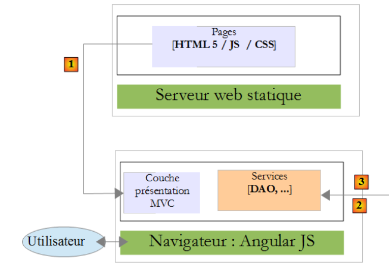
- l'utilisateur demande l'URL initiale de l'application sous la forme : http://machine:port/contexte. Le navigateur va interroger un serveur web pour obtenir le document demandé. Celui-ci est une page HTML stylisée par du CSS et rendue dynamique par du Javascript ;
- ensuite l'utilisateur va interagir avec les vues qui lui sont présentées. On peut distinguer diverses sortes d'interactions :
- celles qui ne nécessitent aucune interaction avec l'extérieur, par exemple cacher / montrer des éléments de la vue. Elle sont traitées par le Javascript embarqué ;
- celles qui nécessitent des données provenant d'un service web distant. Elles vont être récupérées par un appel AJAX (Asynchronous Javascript And Xml), un modèle va être construit et une vue affichée ;
- celles qui nécessitent une autre vue que la vue initiale. Elle va être demandée par un appel Ajax au serveur qui a délivré la page initiale. Puis le processus précédent va se répéter. La page obtenue va être mise en cache dans le navigateur. Au prochain appel, elle ne sera pas demandée au serveur HTML distant ;
Au final, le navigateur ne fait qu'un seul appel HTTP, celui qui obtient la page initiale. Les appels HTTP suivants, vers le serveur de pages HTML ou des services web distants, sont faits par le Javascript embarqué dans les pages.
Nous présentons maintenant l'architecture de l'application au sein du navigateur. Nous oublions le serveur HTML qui délivre les pages HTML de l'application. Pour l'explication, on peut considérer qu'elles sont toutes présentes au sein du cache du navigateur.
 |
Tout d'abord, il faut situer cette architecture :
- en [1], on est dans un navigateur ;
- en [2], un utilisateur interagit avec les vues affichées par celui-ci ;
- en [3], les données sont cherchées sur le réseau, souvent auprès de services web ;
L'utilisateur interagit avec des vues : il remplit des formulaires et les valide. Explicitons ce processus avec la vue V1 ci-dessus. On supposera que c'est la vue initiale de l'application. Elle a été obtenue de la façon suivante :
- l'utilisateur demande l'URL initiale de l'application sous la forme : http://machine:port/contexte ;
- le navigateur a demandé le document associé à cette URL. Il a reçu la page HTML / CSS / JS de la vue V1 ;
- le Javascript embarqué dans la page a alors pris la main et a donné le contrôle au contrôleur C1 [5] ;
- celui-ci a construit le modèle M1 [8] [9] de la vue V1. La construction de ce modèle a pu nécessiter l'utilisation de services internes [6] et l'interrogation de services externes [7] ;
L'utilisateur a maintenant une vue V1 devant lui. Imaginons que c'est un formulaire. Il le remplit puis le valide :
- en [4], l'utilisateur valide le formulaire ;
- en [5], cet événement va être traité par l'une des méthodes du contrôleur C1 ;
Si l'événement n'entraîne qu'un simple changement de la vue V1 (cacher / montrer des zones), le contrôleur C1 va modifier le modèle M1 de la vue V1 puis afficher de nouveau la vue V1. Il peut pour ce faire avoir besoin de l'un des services de la couche [services] [6].
Si l'événement nécessite des données externes :
- en [6], le contrôleur C1 va demander à la couche [DAO] de les obtenir ;
- en [7], celle-ci va faire un ou plusieurs appels AJAX pour les obtenir ;
- en [8] et [9], le modèle M1 va être modifié et la vue V1 affichée ;
Si l'événement entraîne un changement de vue, dans les deux cas précédents, au lieu d'afficher la vue V1, le contrôleur C1 va demander une nouvelle URL [10]. C'est une URL interne au navigateur. Elle ne se traduit pas immédiatement par un appel HTTP au serveur de pages HTML. Ce changement d'URL est traité par un routeur configuré de telle sorte qu'à chaque URL interne correspond une vue V et son contrôleur C. Le routeur fait alors afficher la nouvelle vue Vn. Avant l'affichage, son contrôleur Cn prend la main, contruit le modèle Mn puis fait afficher la vue Vn [11]. Si la page HTML de la vue Vn n'était pas en cache dans le navigateur, alors elle sera demandée au serveur de pages HTML.
La couche [Présentation] de cette achitecture est proche de l'architecture JSF (Java Server Faces) :
- la vue V correspond à la vue de type Facelet de JSF ;
- le contrôleur C correspond au bean JSF, une classe Java qui contient à la fois le modèle M de la vue V et les gestionnaires des événements de celle-ci ;
La couche [Services] est différente des couches [Services] auxquelles on est habitué. En développement web, côté serveur, on a le plus souvent l'architecture en couches suivante :
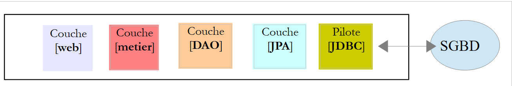 |
Ci-dessus, la couche [web] ne communique avec la couche [DAO] qu'au travers de la couche [métier]. Rien ne nous empêcherait d'injecter dans la couche [web] une référence sur la couche [DAO] qui permettrait cette communication. Mais on se l'interdit.
Avec Angular, on ne se l'interdit pas. L'architecture devient alors la suivante :
 |
- en [1], la couche [présentation] peut communiquer directement avec n'importe quel service ;
- en [2], les services se connaissent entre-eux. Un service peut en utiliser un ou plusieurs autres.
3.3. Les vues du client Angular
Les vues du client Angular ont déjà été présentées au paragraphe 1.3.3. Pour faciliter la lecture de ce nouveau chapitre, nous les redonnons ici. La première vue est la suivante :
 |
- en [6], la page d'entrée de l'application. Il s'agit d'une application de prise de rendez-vous pour des médecins ;
- en [7], une case à cocher qui permet d'être ou non en mode [debug]. Ce dernier se caractérise par la présence du cadre [8] qui affiche le modèle de la vue courante ;
- en [9], une durée d'attente artificielle en millisecondes. Elle vaut 0 par défaut (pas d'attente). Si N est la valeur de ce temps d'attente, toute action de l'utilisateur sera exécutée après un temps d'attente de N millisecondes. Cela permet de voir la gestion de l'attente mise en place par l'application ;
- en [10], l'URL du serveur Spring 4. Si on suit ce qui a précédé, c'est [http://localhost:8080];
- en [11] et [12], l'identifiant et le mot de passe de celui qui veut utiliser l'application. Il y a deux utilisateurs : admin/admin (login/password) avec un rôle (ADMIN) et user/user avec un rôle (USER). Seul le rôle ADMIN a le droit d'utiliser l'application. Le rôle USER n'est là que pour montrer ce que répond le serveur dans ce cas d'utilisation ;
- en [13], le bouton qui permet de se connecter au serveur ;
- en [14], la langue de l'application. Il y en a deux : le français par défaut et l'anglais.
 |
- en [1], on se connecte ;
 |
- une fois connecté, on peut choisir le médecin avec lequel on veut un rendez-vous [2] et le jour de celui-ci [3] ;
- on demande en [4] à voir l'agenda du médecin choisi pour le jour choisi ;
 |
- une fois obtenu l'agenda du médecin, on peut réserver un créneau [5] ;
 |
- en [6], on choisit le patient pour le rendez-vous et on valide ce choix en [7] ;
 |
Une fois le rendez-vous validé, on est ramené automatiquement à l'agenda où le nouveau rendez-vous est désormais inscrit. Ce rendez-vous pourra être ultérieurement supprimé [7].
Les principales fonctionnalités ont été décrites. Elles sont simples. Celles qui n'ont pas été décrites sont des fonctions de navigation pour revenir à une vue précédente. Terminons par la gestion de la langue :
 |
- en [1], on passe du français à l'anglais ;

- en [2], la vue est passée en anglais, y-compris le calendrier ;
3.4. Configuration du projet Angular
Nous allons construire notre client Angular de façon progressive. Nous utilisons l'IDE Webstorm.
Créons un dossier vide [rdvmedecins-angular-v1] puis ouvrons-le avec Webstorm :
 |
- en [1], on ouvre un dossier ;
- en [2], on désigne le dossier que nous avons créé ;
- en [3], nous obtenons un projet Webstorm vide ;
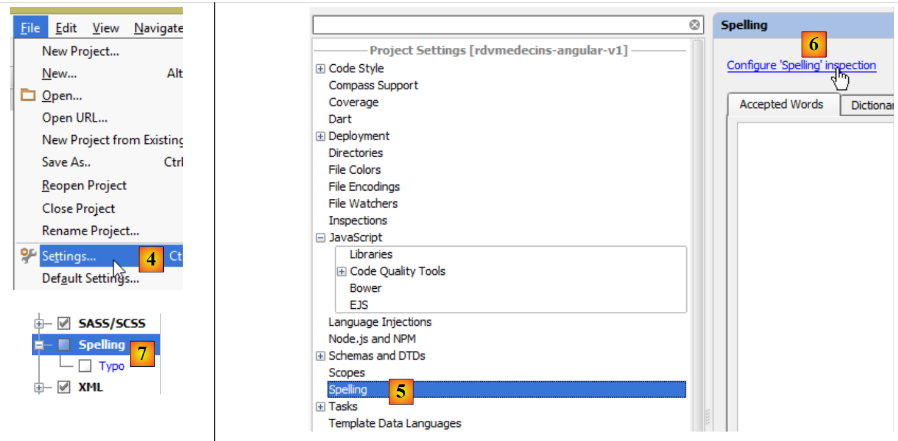 |
- en [4], la configuration du projet se fait par l'option [File / Settings] ;
- en [5] et [6], on configure la propriété [Spelling] qui gère la vérification orthographique. Par défaut, celle-ci est active. Comme le logiciel téléchargé est en langue anglaise, nos commentaires en français des programmes vont être soulignés comme de possibles erreurs d'orthographe. On désactive donc cette vérification orthographique [7] ;
 |
- en [8], on crée un nouveau fichier ;
- en [9], on choisit de créer le fichier [package.json] qui décrit l'application avec une syntaxe JSON ;
- en [10], le fichier généré qu'on modifie comme montré en [11] ;
- en [12], on sauvegarde ce fichier à la fois dans [package.json] et [bower.json] ;
 |
- en [13], on configure de nouveau le projet ;
 |
- en [14], on configure la propriété [Javascript / Bower] qui va nous permettre de déclarer les bibliothèques Javascript dont nous avons besoin ;
- en [15], désigner le fichier [bower.json] que nous venons de créer ;
 |
- en [16], ajoutons une bibliothèque Javascript ;
- en [17] sont affichées toutes les bibliothèques Javascript téléchargeables ;
- en [18], nous pouvons mettre un terme pour filtrer la liste [17]. Ici, nous indiquons que nous voulons la bibliothèque [Angular JS] ;
- en [19], apparaissent les caractéristiques de la bibliothèque. On voit ici que la version 1.2.18 d'Angular va être téléchargée ;
- en [20], on la télécharge ;
 |
- en [21], on voit qu'elle a été téléchargée ;
- en [22], on voit la version téléchargée. C'est donc en réalité la 1.2.19 ;
- en [23], on voit la dernière version disponible ;
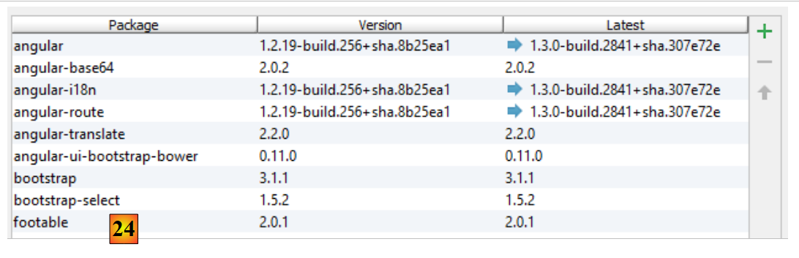 |
- en [24], suivant la même démarche que précédemment, on télécharge les bibliothèques suivantes :
pour encoder la chaîne " user:password " en Base64 ; | ||
pour internationaliser le calendrier | ||
pour router les URL internes de l'application vers le bon contrôleur et la bonne vue ; | ||
permet l'internationalisation des vues. C'est un projet indépendant d'Angular. Ici, deux langues seront utilisées : le français et l'anglais ; | ||
fournit des composants visuels compatibles Bootstrap. On utilisera ici son calendrier ; | ||
le framework CSS Bootstrap. Sera utilisé pour construire les vues ; | ||
fournit un composant visuel de type " tableau ". Il est " responsive " en ce sens qu'il peut s'adapter à la taille de l'écran ; | ||
fournit un composant de type " liste déroulante " ; |
 |
- en [25], les bibliothèques téléchargées ont été installées dans le dossier [bower_components] ;
- en [26], on voit que la bibliothèque JQuery a été téléchargée. C'est parce que Bootstrap l'utilise. Le système d'installation des dépendances Javascript d'un projet est analogue à celui de Maven pour le monde Java : si une bibliothèque téléchargée a elle-même des dépendances, celles-ci sont automatiquement téléchargées ;
Le fichier [bower.json] a évolué :
Toutes les dépendances téléchargées ont été inscrites dans le fichier.
3.5. La page initiale du client Angular
Nous créons une première version de la page initiale du client Angular :
 |
- en [1] et [2], nous créons un fichier HTML nommé [app-01] [3] et [4] ;
Le fichier [app-01.html] va être notre page principale pendant un moment. Nous allons y configurer l'importation des fichiers CSS et JS dont l'application a besoin :
<!DOCTYPE html>
<html>
<head>
<title>RdvMedecins</title>
<!-- META -->
<meta http-equiv="Content-Type" content="text/html; charset=utf-8">
<meta name="viewport" content="width=device-width, initial-scale=1.0">
<meta name="description" content="Angular client for RdvMedecins">
<meta name="author" content="Serge Tahé">
<!-- le CSS -->
<link href="bower_components/bootstrap/dist/css/bootstrap.min.css" rel="stylesheet" />
<link href="bower_components/bootstrap/dist/css/bootstrap-theme.min.css" rel="stylesheet"/>
<link href="bower_components/bootstrap-select/bootstrap-select.min.css" rel="stylesheet"/>
<link href="bower_components/footable/css/footable.core.min.css" rel="stylesheet"/>
</head>
<body>
<div class="container">
<h1>Rdvmedecins - v1</h1>
</div>
<!-- Bootstrap core JavaScript ================================================== -->
<script type="text/javascript" src="bower_components/jquery/dist/jquery.min.js"></script>
<script type="text/javascript" src="bower_components/bootstrap/dist/js/bootstrap.min.js"></script>
<script type="text/javascript" src="bower_components/bootstrap-select/bootstrap-select.min.js"></script>
<script type="text/javascript" src="bower_components/footable/dist/footable.min.js"></script>
<!-- angular js -->
<script type="text/javascript" src="bower_components/angular/angular.min.js"></script>
<script type="text/javascript" src="bower_components/angular-ui-bootstrap-bower/ui-bootstrap-tpls.min.js"></script>
<script type="text/javascript" src="bower_components/angular-route/angular-route.min.js"></script>
<script type="text/javascript" src="bower_components/angular-translate/angular-translate.min.js"></script>
<script type="text/javascript" src="bower_components/angular-base64/angular-base64.min.js"></script>
</body>
</html>
- lignes 11-12 : les fichiers CSS pour Bootstrap ;
- ligne 13 : le fichier CSS pour le composant [boostrap-select] ;
- ligne 14 : le fichier CSS pour le composant [footable] ;
- lignes 21-24 : les fichiers JS des composants Bootstrap ;
- ligne 21 : les composants Bootstrap sont propulsés par JQuery ;
- ligne 22 : le fichier JS de Bootstrap ;
- ligne 23 : le fichier JS pour le composant [boostrap-select] ;
- ligne 24 : le fichier JS pour le composant [footable] ;
- lignes 26-30 : les fichiers JS d'Angular et des projets qui s'y raccrochent ;
- ligne 26 : le fichier JS d'Angular. Il doit être chargé après JQuery si cette bibliothèque est utilisée ;
- ligne 27 : le fichier JS du projet [angular-ui-bootstrap] ;
- ligne 28 : le fichier JS du routeur [angular-route] ;
- ligne 29 : le fichier JS du module d'internationalisation des applications Angular ;
- ligne 30 : le fichier JS du module [angular-base64] ;
La validité du fichier [app-01.html] peut être vérifiée :
 |
- en [1], on demande l'inspection du code ;
- en [2], le résultat lorsque tout va bien ;
Cette inspection systématique du code avant son exécution est conseillée. Ici, cette détection permet de détecter toute erreur de référence des fichiers CSS et JS. Si un chemin est incorrect, l'inspecteur de code le signalera.
- en [3], la page peut être chargée dans un navigateur par un débogueur. On obtient le résultat suivant dans le navigateur :
 |
- en [4], la page [app-01.html] a été délivrée par un serveur interne à Webstorm opérant ici sur le port 63342 ;
- en [5], la console du débogueur. Si des erreurs s'étaient produites, elles seraient apparues ici. C'est également là que vont les affichages écran produits par l'instruction [console.log(expression)] du Javascript. Nous utiliserons abondamment cette possibilité ;
Le mode débogage permet de modifier la page dans Webstorm et de voir les résultats de ces modifications dans le navigateur sans avoir à recharger la page. Ainsi si nous ajoutons la ligne 3 ci-dessous :
<div class="container">
<h1>Rdvmedecins - v1</h1>
<h2>Version 1</h2>
</div>
et que nous revenons au navigateur, nous constatons que la page a changé :
 |
3.6. Découverte de Bootstrap
Nous allons illustrer maintenant certaines des caractéristiques de Bootstrap utilisées dans l'application. Je n'ai qu'une connaissance limitée de ce framework, obtenue par des copier / coller de codes trouvés sur Internet. J'expliquerai le rôle des classes CSS que je crois comprendre. Je m'abstiendrai de commenter les autres.
3.6.1. Exemple 1
Dans Angular, les opérations qui vont chercher de l'information à l'extérieur sont asynchrones. Cela signifie que l'opération est lancée et qu'il y a retour immédiat à la vue avec laquelle l'utilisateur peut continuer à interagir. L'application est avertie de la fin de l'opération par un événement. Cet événement est traité par une fonction JS qui peut alors enrichir la vue actuelle ou en changer. Si l'opération est susceptible d'être longue, il est utile d'offrir à l'utilisateur la possibilité de l'annuler. Nous la lui offrirons systématiquement. Pour cela, nous utiliserons un bandeau Bootstrap :
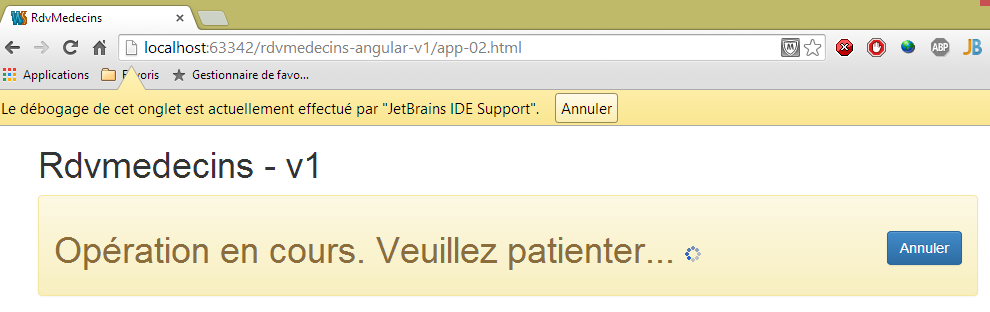
Pour obtenir ce résultat, nous dupliquons [app-01.html] dans [app-02.html] et nous modifions les ligne suivantes :
<div class="container">
<h1>Rdvmedecins - v1</h1>
<div class="alert alert-warning">
<h1>Opération en cours. Veuillez patienter...
<button class="btn btn-primary pull-right">Annuler</button>
<img src="assets/images/waiting.gif" alt=""/>
</h1>
</div>
</div>
- ligne 1 : la classe CSS [container] définit une zone d'affichage à l'intérieur du navigateur ;
- ligne 3 : la classe CSS [alert] affiche une zone colorée. La classe [alert-warning] utilise une couleur prédéfinie ;
- ligne 5 : la classe [btn] habille un bouton. La classe [btn-primary] lui donne une certaine couleur. La classe [pull-right] l'envoie sur la droite du bandeau d'alerte ;
- ligne 6 : une image animée d'attente ;
3.6.2. Exemple 2
Les différentes vues de l'application auront un titre commun :

Pour obtenir ce résultat, nous dupliquons [app-01.html] dans [app-03.html] et nous modifions les ligne suivantes :
<div class="container">
<h1>Rdvmedecins - v1</h1>
<!-- Bootstrap Jumbotron -->
<div class="jumbotron">
<div class="row">
<div class="col-md-2">
<img src="assets/images/caduceus.jpg" alt="RvMedecins"/>
</div>
<div class="col-md-10">
<h1>Les Médecins associés</h1>
</div>
</div>
</div>
</div>
- la zone colorée est obtenue avec la classe [jumbotron] de la ligne 4 ;
- ligne 5 : la classe [row] définit une ligne à 12 colonnes ;
- ligne 6 : la classe [col-md-2] définit une zone de deux colonnes dans la ligne ;
- ligne 7 : dans ces deux colonnes on met une image ;
- lignes 9-11 : dans les 10 autres colonnes, on met le texte ;
3.6.3. Exemple 3
Les vues auront un bandeau haut de commande. On y trouvera des options de commande, liens ou boutons. On y trouvera égelement des éléments de formulaire. Par exemple :
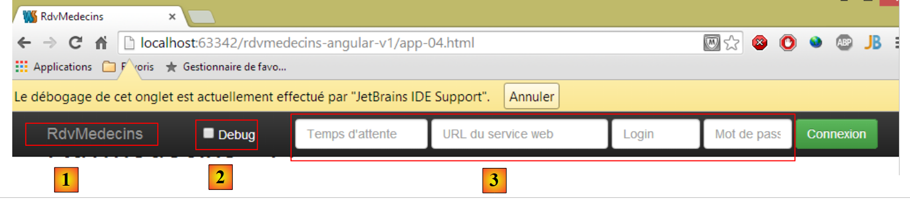 |
Pour obtenir ce résultat, nous dupliquons [app-01.html] dans [app-04.html] et nous modifions les ligne suivantes :
<div class="container">
<h1>Rdvmedecins - v1</h1>
<div class="navbar navbar-inverse navbar-fixed-top" role="navigation">
<div class="container">
<div class="navbar-header">
<button type="button" class="navbar-toggle" data-toggle="collapse" data-target=".navbar-collapse">
<span class="sr-only">Toggle navigation</span>
<span class="icon-bar"></span>
<span class="icon-bar"></span>
<span class="icon-bar"></span>
</button>
<a class="navbar-brand" href="#">RdvMedecins</a>
</div>
<div class="navbar-collapse collapse">
<form class="navbar-form navbar-right">
<!-- mode debug -->
<label style="width: 100px">
<input type="checkbox">
<span style="color: white">Debug</span>
</label>
<!-- formulaire d'identification -->
<div class="form-group">
<input type="text" class="form-control" placeholder="Temps d'attente"
style="width: 150px"/>
<input type="text" class="form-control" placeholder="URL du service web"
style="width: 200px"/>
<input type="text" class="form-control" placeholder="Login"
style="width: 100px"/>
<input type="password" class="form-control" placeholder="Mot de passe"
style="width: 100px"/>
</div>
<button class="btn btn-success">
Connexion
</button>
</form>
</div>
<button class="btn btn-success">
Connexion
</button>
</form>
</div>
</div>
</div>
</div>
- ligne 4 : la classe [navbar] va styler la barre de navigation. La classe [navbar-inverse] lui donne le fond noir. La classe [navbar-fixed-top] va faire en sorte que lorsqu'on 'scrolle' la page affichée par le navigateur, la barre de navigation va rester en haut de l'écran ;
- lignes 6-14 : définissent la zone [1]. C'est typiquement une série de classes que je ne comprends pas. J'utilise le composant tel quel ;
- ligne 15 : définissent une zone 'responsive' de la barre de commande. Sur un smartphone, cette zone disparaît dans une zone de menu ;
- ligne 16 : la classe [navbar-form] habille un formulaire de la barre de commande. La classe [navbar-right] le rejette à droite de celle-ci ;
- lignes 23-32 : les quatre zones de saisie du formulaire de la ligne 17 [3]. Elles sont à l'intérieur d'une classe [form-group] qui habille les éléments d'un formulaire et chacune d'elles a la classe [form-control] ;
- ligne 33 : la classe [btn] qu'on a déjà rencontrée, enrichie de la classe [btn-success] qui lui donne sa couleur verte ;
3.6.4. Exemple 4
Le bandeau de commande permettra de changer de langue grâce à une liste déroulante :

Pour obtenir ce résultat, nous dupliquons [app-01.html] dans [app-05.html] et nous ajoutons les ligne suivantes à la barre de commande :
<button class="btn btn-success">
Connexion
</button>
<!-- langues -->
<div class="btn-group">
<button type="button" class="btn btn-danger">
Langues
</button>
<button type="button" class="btn btn-danger dropdown-toggle" data-toggle="dropdown">
<span class="caret"></span>
<span class="sr-only">Toggle Dropdown</span>
</button>
<ul class="dropdown-menu" role="menu">
<li>
<a href="">Français</a>
</li>
<li>
<a href="">English</a>
</li>
</ul>
</div>
</form>
Les lignes rajoutées sont les lignes 4-21.
- ligne 5 : la classe [btn-group] habille un groupe de boutons. Il y en a deux aux lignes 6 et 9 ;
- lignes 6-8 : le premier bouton définit le libellé de la liste déroulante. La classe [btn-danger] lui donne sa couleur rouge ;
- lignes 9-12 : le second bouton est celui de la liste déroulante. Il est accolé au premier, ce qui donne l'impression d'un composant unique ;
- ligne 10 : affiche la flèche descendante indiquant que le bouton est une liste déroulante ;
- ligne 11 : pour des 'screen readers' ;
- lignes 13-20 : les éléments de la liste déroulante sont les éléments d'une liste non ordonnée ;
3.6.5. Exemple 5
Pour valider un formulaire ou pour naviguer, l'utilisateur disposera dans la barre de commande d'options ou de boutons comme ci-dessous :
 |
Des options de menu ont été installées en [1]. Pour obtenir ce résultat, nous dupliquons [app-01.html] dans [app-06.html] et nous ajoutons les ligne suivantes :
<div class="navbar navbar-inverse navbar-fixed-top" role="navigation">
<div class="container">
<div class="navbar-header">
...
</div>
<!-- options de menu -->
<div class="collapse navbar-collapse">
<ul class="nav navbar-nav">
<li class="active">
<a href="">
<span>Home</span>
</a>
</li>
<li class="active">
<a href="">
<span>Agenda</span>
</a>
</li>
<li class="active">
<a href="">
<span>Valider</span>
</a>
</li>
<li class="active">
<a href="">
<span>Annuler</span>
</a>
</li>
</ul>
<!-- boutons de droite -->
<form class="navbar-form navbar-right" role="form">
...
</form>
</div>
</div>
</div>
</div>
- les options de menu sont obtenues par les lignes 8-29. Ce sont là encore des éléments d'une liste <ul>. La classe [active] fait que le texte est brillant indiquant par là qu'on peut cliquer sur l'option.
3.6.6. Exemple 6
Nous présenterons les médecins et les clients dans des listes déroulantes comme ci-dessous :
 |
La liste déroulante utilisée n'est pas un composant natif Bootstrap. C'est le composant [bootstrap-select] (http://silviomoreto.github.io/bootstrap-select/). Pour obtenir ce résultat, nous dupliquons [app-01.html] dans [app-07.html] et nous ajoutons les ligne suivantes :
<!DOCTYPE html>
<html>
<head>
...
<link href="bower_components/bootstrap-select/bootstrap-select.min.css" rel="stylesheet"/>
</head>
<body>
<div class="container">
<h1>Rdvmedecins - v1</h1>
<h2><label for="medecins">Médecins</label></h2>
<select id="medecins" data-style="btn btn-primary" class="selectpicker">
<option value="1">Mme Marie PELISSIER</option>
<option value="1">Mr Jacques BROMARD</option>
<option value="1">Mr Philippe JANDOT</option>
<option value="1">Mme Justine JACQUEMOT</option>
</select>
</div>
<!-- Bootstrap core JavaScript ================================================== -->
...
<script type="text/javascript" src="bower_components/bootstrap-select/bootstrap-select.min.js"></script>
<!-- script local -->
<script>
$('.selectpicker').selectpicker();
</script>
</body>
</html>
- ligne 5 : il faut importer la feuille de style de [bootstrap-select] ;
- ligne 13 : l'attribut [data-style] est exploité par [bootstrap-select]. Il sert à donner un style à la liste déroulante. Ici, on lui donne la forme d'un bouton bleu [btn-primary] ;
- ligne 13 : l'attribut [class] est exploité ligne 23. Peut être quelconque ;
- lignes 14-17 : les éléments de la liste déroulante. On a là les balises HTML classiques ;
- ligne 22 : il faut importer le JS de [bootstrap-select] ;
- lignes 24-26 : un script JS exécuté à la fin du chargement de la page ;
- ligne 25 : une instruction JQuery. On applique la méthode [selectpicker] (selectpicker())à tous les éléments ayant la classe [selectpicker] ($('.selectpicker')). Il n'y en a qu'un, la balise <select> de la ligne 13. La méthode [selectpicker] vient du fichier JS référencé ligne 22 ;
3.6.7. Exemple 7
Pour afficher l'agenda d'un médecin, nous allons utiliser un tableau 'responsive' fourni par la bibliothèque JS [footable] :
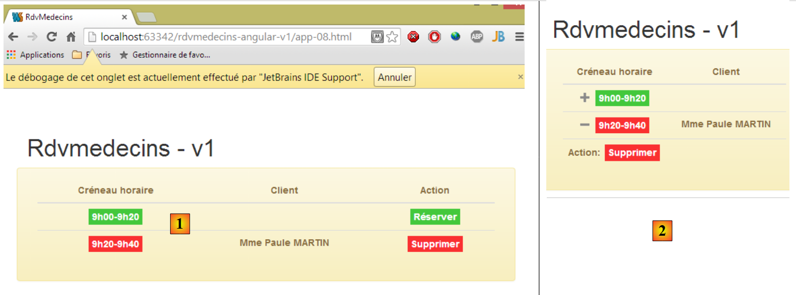 |
- en [1] : le tableau avec un affichage normal ;
- en [2] : le tableau lorsqu'on réduit la taille de la fenêtre du navigateur. La colonne [Action] passe automatiquement à la ligne suivante. C'est ce qu'on appelle un composant 'responsive' ou simplement adaptable.
Nous dupliquons [app-01.html] dans [app-08.html] et nous ajoutons les ligne suivantes :
...
<link href="bower_components/footable/css/footable.core.min.css" rel="stylesheet"/>
<link href="assets/css/rdvmedecins.css" rel="stylesheet"/>
...
<div class="container">
<h1>Rdvmedecins - v1</h1>
<div class="row alert alert-warning">
<div class="col-md-6">
<table id="creneaux" class="table">
<thead>
<tr>
<th data-toggle="true">
<span>Créneau horaire</span>
</th>
<th>
<span>Client</span>
</th>
<th data-hide="phone">
<span>Action</span>
</th>
</thead>
<tbody>
<tr>
<td>
<span class='status-metro status-active'>
9h00-9h20
</span>
</td>
<td>
<span></span>
</td>
<td>
<a href="" class="status-metro status-active">
Réserver
</a>
</td>
</tr>
<tr>
<td>
<span class='status-metro status-suspended'>
9h20-9h40
</span>
</td>
<td>
<span>Mme Paule MARTIN</span>
</td>
<td>
<a href="" class="status-metro status-suspended">
Supprimer
</a>
</td>
</tr>
</tbody>
</table>
</div>
</div>
</div>
...
<script src="bower_components/footable/dist/footable.min.js" type="text/javascript"></script>
- les lignes 2 et 60 sont déjà présentes dans [app-01.html]. Ce sont les fichiers CSS et JS fournis par la bibliothèque [footable] ;
- la ligne 3 référence le fichier CSS suivant :
@CHARSET "UTF-8";
#creneaux th {
text-align: center;
}
#creneaux td {
text-align: center;
font-weight: bold;
}
.status-metro {
display: inline-block;
padding: 2px 5px;
color:#fff;
}
.status-metro.status-active {
background: #43c83c;
}
.status-metro.status-suspended {
background: #fa3031;
}
Les styles [status-*] proviennent d'un exemple d'utilisation de la table [footable] trouvé sur le site de la bibliothèque.
- ligne 8 : installe la table dans une ligne [row] et un encadré coloré [alert alert-warning] ;
- ligne 9 : la table va occuper 6 colonnes [col-md-6] ;
- ligne 10 : la table HTML est formatée par Bootstrap [class='table'] ;
- ligne 13 : l'attribut [data-toggle] indique la colonne qui héberge le symbole [+/-] qui déplie / replie la ligne ;
- ligne 19 : l'attribut [data-hide='phone'] indique que la colonne doit être cachée si l'écran a la taille d'un écran de téléphone. On peut également utiliser la valeur 'tablet' ;
3.6.8. Exemple 8
Pour aider l'utilisateur, nous allons créer des bulles d'aide (tooltip) autour des principaux composants des vues :
 |
Pour obtenir ce résultat, nous dupliquons [app-01.html] dans [app-09.html] et nous ajoutons les ligne suivantes :
<!DOCTYPE html>
<html ng-app="rdvmedecins">
<head>
...
</head>
<body>
<div class="container">
<h1>Rdvmedecins - v1</h1>
<div class="navbar navbar-inverse navbar-fixed-top" role="navigation">
<div class="container">
<div class="navbar-header">
<button type="button" class="navbar-toggle" data-toggle="collapse" data-target=".navbar-collapse">
<span class="sr-only">Toggle navigation</span>
<span class="icon-bar"></span>
<span class="icon-bar"></span>
<span class="icon-bar"></span>
</button>
<a class="navbar-brand" href="#">RdvMedecins</a>
</div>
<!-- options de menu -->
<div class="collapse navbar-collapse">
<ul class="nav navbar-nav">
<li class="active">
<a href="">
<span tooltip="Retourne à la page d'accueil" tooltip-placement="bottom">Home</span>
</a>
</li>
<li class="active">
<a href="">
<span tooltip="Affiche l'agenda" tooltip-placement="top">Agenda</span>
</a>
</li>
<li class="active">
<a href="">
<span tooltip="Valide le rendez-vous" tooltip-placement="right">Valider</span>
</a>
</li>
<li class="active">
<a href="">
<span tooltip="Annule l'opération en cours" tooltip-placement="left">Annuler</span>
</a>
</li>
</ul>
</div>
</div>
</div>
</div>
<!-- Bootstrap core JavaScript ================================================== -->
<...
<script type="text/javascript" src="bower_components/angular-ui-bootstrap-bower/ui-bootstrap-tpls.min.js"></script>
<!-- script local -->
<script>
// --------------------- module Angular
angular.module("rdvmedecins", ['ui.bootstrap']);
</script>
</body>
</html>
Les bulles d'aide sont fournis par la bibliothèque [angular-ui-bootstrap] qui s'appuie elle-même sur la bibliothèque [angular]. La ligne 50 importe la bibliothèque [angular-ui-bootstrap]. Pour mettre en oeuvre les composants de la bibliothèque [angular-ui-bootstrap], il nous faut créer un module Angular. Ceci est fait aux lignes 52-55. Ces lignes définissent un module Angular nommé [rdvmedecins] (1er paramètre). Un module Angular peut utiliser d'autres modules Angular. C'est ce qu'on appelle des dépendances du module. Elles sont fournies dans un tableau comme second paramètre de la fonction [angular.module]. Ici, le module nommé [ui.bootstrap] est fourni par la bibliothèque [angular-ui-bootstrap]. C'est ce module qui va nous fournir les bulles d'aide.
La ligne 54 définit un module Angular. Par défaut, cela n'a aucun effet sur la page. On indique que la page doit être gérée par Angular, en la rattachant à un module Angular. C'est ce qui est fait, ligne 2. L'attribut [ng-app='rdvmedecins'] rattache la page au module créé ligne 54. La page va alors être analysée par Angular. Les attributs [tooltip] vont être découverts et traités par le module [ui.bootstrap].
La syntaxe de la bulle d'aide est la suivante :
<span tooltip="Retourne à la page d'accueil" tooltip-placement="bottom">Home</span>
Ci-dessus, on ajoute une bulle d'aide au texte [Home] :
- [tooltip] : définit le texte de la bulle d'aide ;
- [tooltip-placement] : définit sa position (bottom, top, left, right) ;
Angular JS permet d'ajouter de nouvelles balises ou nouveaux attributs à ceux existant déjà dans le langage HTML. Cette extension du langage HTML est faite au moyen de directives Angular. Ici les attributs [tooltip] et [tooltip-placement] sont des attributs créés par [angular-ui-bootstrap].
3.6.9. Exemple 9
Pour aider l'utilisateur à choisir le jour d'un rendez-vous, nous allons lui proposer un calendrier :

Comme pour les bulles d'aide, ce calendrier est fourni par la bibliothèque [angular-ui-bootstrap]. Pour obtenir ce résultat, nous dupliquons [app-01.html] dans [app-10.html] et nous ajoutons les ligne suivantes :
<!DOCTYPE html>
<html ng-app="rdvmedecins">
<head>
...
<body>
<div class="container">
<h1>Rdvmedecins - v1</h1>
<div>
<pre>Date <em>{{jour | date:'fullDate'}}</em></pre>
<div class="row">
<div class="col-md-2">
<h4>Calendrier</h4>
<div style="display:inline-block; min-height:290px;">
<datepicker ng-model="jour" show-weeks="true" class="well"></datepicker>
</div>
</div>
</div>
</div>
</div>
</div>
...
<!-- script local -->
<script>
// --------------------- module Angular
angular.module("rdvmedecins", ['ui.bootstrap'])
</script>
</body>
</html>
Comme précédemment, la page est associée à un module Angular (lignes 2 et 28). Le calendrier est défini par la balise <datepicker> de la ligne 16 définie par la bibliothèque [angular-ui-bootstrap] :
- [show-weeks='true'] : pour afficher les n°s des semaines ;
- [class='well'] : pour entourer le calendrier d'une zone grise à coins arrondis ;
- [ng-model='jour'] : les attrinuts [ng-*] sont des attributs Angular. L'attribut [ng-model] désigne une donnée qui va être placée dans le modèle de la vue. Lorsque l'utilisateur va cliquer sur une date, celle-ci sera placée dans la variable [jour] du modèle. Cette variable est utilisée ligne 10. La syntaxe {{expression}} permet d'évaluer une expression composée d'éléments du modèle. Ici {{jour}} va afficher la valeur de la variable [jour] du modèle. Une caractéristique forte d'Angular est que la vue va suivre automatiquement les changements de la variable [jour]. Ainsi, lorsque l'utilisateur va changer les dates, ces changements seront immédiatement affichés ligne 10. De façon générale, le fonctionnement est le suivant :
- une vue V est associée à un modèle M ;
- Angular observe le modèle M et met automatiquement à jour la vue V lorsqu'il y a un changement de son modèle M ;
La syntaxe {{jour|date}} est appelée un filtre. Ce n'est pas la valeur de [jour] qui est affichée mais la valeur de [jour] filtrée par un filtre appelé [date]. Ce filtre est prédéfini dans Angular. Il sert à formater des dates. Il admet des paramètres précisant le format désiré. Ainsi l'expression {{jour | date:'fullDate'}} indique qu'on veut le format complet de la date, ici [Friday, June 20, 2014] parce que le calendrier est en anglais par défaut. Nous allons aborder son internationalisation prochainement.
3.6.10. Conclusion
Nous avons présenté les éléments du framework CSS Bootstrap que nous serons amenés à utiliser. C'étaient des composants passifs : leurs événements n'étaient pas gérés. Ainsi un clic sur les boutons ou les liens ne faisait rien. Ces événements seront gérés en Javascript. Il est possible d'utiliser ce langage sans l'aide de frameworks mais comme ce fut le cas côté serveur, certains frameworks s'imposent côté client. C'est le cas du framework Angular JS qui amène avec lui une nouvelle façon d'aborder le développement des applications Javascript exécutées par un navigateur. Nous le présentons maintenant.
3.7. Découverte d'Angular JS
Nous allons illustrer maintenant certaines des caractéristiques du framework Angular JS utilisées dans l'application. Nous en avons déjà rencontré quelques unes :
- une page HTML est propulsée par Angular JS si on lui rattache un module :
<html ng-app="rdvmedecins">
- Angular permet de créer de nouvelles balises et de nouveaux attributs HTML via des directives :
- Angular permet de créer des filtres :
- une vue V affiche un modèle M. Angular observe le modèle M et met automatiquement à jour la vue V lorsqu'il y a un changement de son modèle M. La valeur d'une variable du modèle M est affichée dans la vue V par :
Nous allons commencer par approfondir l'implémentation du Design Pattern Modèle – Vue – Contrôleur dans Angular. Rappelons les liens qui existent entre-eux d'un point de vue architecture :
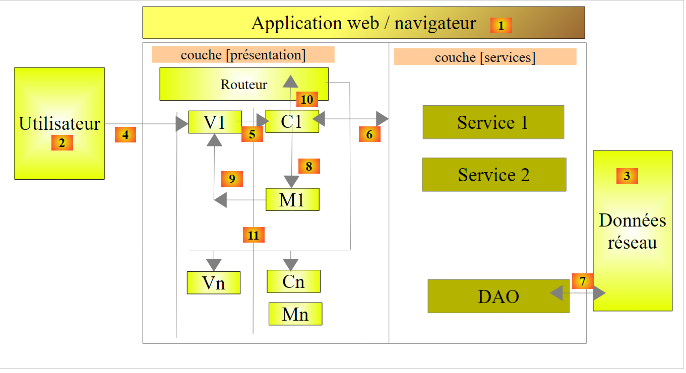 |
- la vue V1 affiche le modèle M1 construit par le contrôleur C1. Ce dernier contient non seulement le modèle M1 mais également les gestionnaires des événements de la vue V1. On est dans le cycle 5, 8, 9 :
- [5] : un événement se produit dans la vue V1. Il est traité par le contrôleur C1 ;
- celui-ci fait son travail [6-7] puis construit le modèle M1 [8] ;
- [9] : la vue V1 affiche le nouveau modèle M1. Comme nous l'avons dit, cette dernière étape est automatique. Il n'y pas comme dans d'autres frameworks MVC, un push explicite (C1 pousse le modèle M1 dans V1) ou un pull explicite (la vue V1 va chercher le modèle M1 dans C1). Il y a un push implicite que le développeur ne voit pas ;
- puis le cycle 5, 8, 9 reprend ;
3.7.1. Exemple 1 : le modèle MVC d'Angular
Nous allons reprendre l'exemple du calendrier. Nous avons vu la directive qui le génère :
<datepicker ng-model="jour" show-weeks="true" class="well"></datepicker>
Cette directive admet d'autres attributs que ceux présentés ci-dessus, entre-autres l'attribut [min-date] qui fixe la date minimale qu'on peut choisir dans le calendrier. Ce sera utile pour nous. Lorsque l'utilisateur choisit une date de rendez-vous, celle-ci doit être égale ou supérieure à celle du jour courant. Nous écrirons alors :
<datepicker ng-model="jour" ... min-date="dateMin"></datepicker>
où [dateMin] sera une variable du modèle de la page qui aura pour valeur la date du jour. Cela donnera la page suivante :
 |
- en [1], nous sommes le 19 Juin 2014. Le curseur indique qu'on peut sélectionner le 19 juin ;
- en [2], le curseur indique qu'on ne peut pas sélectionner le 18 juin ;
Nous dupliquons [app-10.html] dans [app-11.html] et nous faisons les modifications suivantes :
<!DOCTYPE html>
<html ng-app="rdvmedecins">
<head>
...
</head>
<body ng-controller="rdvMedecinsCtrl">
<div class="container">
<h1>Rdvmedecins - v1</h1>
<div>
<pre>Date <em>{{jour | date:'fullDate' }}</em></pre>
<div class="row">
<div class="col-md-2">
<h4>Calendrier</h4>
<div style="display:inline-block; min-height:290px;">
<datepicker ng-model="jour" show-weeks="true" class="well" min-date="minDate"></datepicker>
</div>
</div>
</div>
</div>
</div>
<!-- Bootstrap core JavaScript ================================================== -->
...
<!-- script local -->
<script>
// --------------------- module Angular
angular.module("rdvmedecins", ['ui.bootstrap']);
// contrôleur
angular.module("rdvmedecins")
.controller('rdvMedecinsCtrl', ['$scope',
function ($scope) {
// date minimale
$scope.minDate = new Date();
}]);
</script>
</body>
</html>
Examinons d'abord le script local des lignes 26-37 :
- ligne 28 : création du module [rdvmedecins] avec sa dépendance sur le module [ui.bootstrap] qui fournit le calendrier ;
- lignes 30-35 : création d'un contrôleur. C'est lui qui va détenir le modèle de notre page. Il n'y aura pas de gestionnaire d'événement ici ;
- lignes 30-31 : le contrôleur [rdvMedecinsCtrl] appartient au module [rdvmedecins]. On peut ajouter autant de contrôleurs que l'on veut à un module. Dans notre application on aura :
- un module de gestion de l'application ;
- un contrôleur par vue ;
- le second paramètre de la fonction [controller] est un tableau de la forme ['O1', 'O2', ..., 'On', function(O1, O2, ..., On)]. Le dernier paramètre est la fonction qui implémente le contrôleur. Ses paramètres sont des objets que Angular JS va fournir à la fonction.
Revenons à l'architecture d'une application Angular :
 |
Ci-dessus, le contrôleur C1 contient l'ensemble des gestionnaires d'événement de la vue V1 ainsi que le modèle M1 de cette dernière. Les gestionnaires d'événement peuvent avoir besoin d'un ou plusieurs services [6] pour faire leur travail. On passe l'ensemble de ceux-ci comme paramètres de la fonction de construction du contrôleur :
Les services Si sont des singletons. Angular les crée en un unique exemplaire. Ils sont identifiés par un nom Si. Pourquoi sont-ils présents deux fois dans le tableau ci-dessus ? En exploitation, les scripts JS sont minifiés. Dans ce processus de minification, le tableau ci-dessus devient :
Les paramètres perdent leur nom. Or c'est le nom de services. Il est donc important de garder ces noms. C'est pourquoi ils sont passés en tant que chaînes de caractères comme paramètres précédant la fonction. Les chaînes de caractères ne sont pas changées dans le processus de minification. Lorsqu'Angular va construire le contrôleur avec le nouveau tableau, il va remplacer a1 par S1, a2 par S2, ... L'ordre des paramètres est donc important. Il doit correspondre à l'ordre des services qui précèdent la définition de la fonction.
Revenons à la définition du contrôleur [rdvMedecinsCtrl] :
// contrôleur
angular.module("rdvmedecins")
.controller('rdvMedecinsCtrl', ['$scope',
function ($scope) {
// date minimale
$scope.minDate = new Date();
}]);
- lignes 3-4 : l'unique objet injecté dans le contrôleur est l'objet $scope. C'est un objet prédéfini qui représente le modèle M des vues associées au contrôleur. Pour enrichir le modèle d'une vue, il suffit d'ajouter des champs à l'objet $scope ;
- c'est ce qui est fait ligne 6. On crée le champ [minDate] avec pour valeur la date du jour ;
La vue V exploite ce modèle M de la façon suivante :
<body ng-controller="rdvMedecinsCtrl">
<div class="container">
...
<div style="display:inline-block; min-height:290px;">
<datepicker ng-model="jour" show-weeks="true" class="well" min-date="minDate"></datepicker>
</div>
...
</div>
...
- ligne 1 : le corps de la page est associé au contrôleur [rdvMedecinsCtrl] grâce à l'attribut [ng-controller]. Cela signifie que tout ce qui est dans la balise <body> va utiliser le contrôleur [rdvMedecinsCtrl] pour gérer ses événements et obtenir son modèle M. Une page HTML peut dépendre de plusieurs contrôleurs imbriqués ou pas les uns dans les autres :
Ci-dessus :
- le contenu de [div1] (lignes 1-10) affiche le modèle M1 géré par le contrôleur c1. Les balises de cette zone peuvent référencer des gestionnaires d'événement du contrôleur c1 ;
- le contenu de [div11] (lignes 3-4) affiche le modèle M11 géré par le contrôleur c11 mais également le modèle M1. Il y a héritage des modèles. Les balises de cette zone peuvent référencer aussi bien des gestionnaires d'événement du contrôleur c11 que des gestionnaires d'événement du contrôleur c1. Elles ne peuvent référencer ni le modèle M12 du contrôleur c12 ni les gestionnaires d'événement de celui-ci. Le contrôleur c12 n'est en effet pas connu entre les lignes 3-5 ;
- lignes 7-9 : on peut tenir un raisonnement analogue à celui tenu précédemment ;
Revenons au code du calendrier :
<datepicker ng-model="jour" show-weeks="true" class="well" min-date="minDate"></datepicker>
L'attribut [min-date] est initialisé avec la valeur [minDate] du modèle. Implicitement [$scope.minDate]. Le champ est toujours cherché dans l'objet $scope.
3.7.2. Exemple 2 : localisation des dates
Pour l'instant le calendrier ne nous est guère utile puisque c'est un calendrier anglais. Il est possible de le localiser :
 |
- en [1], nous avons un calendrier en français ;
- en [2], on le passe en anglais ;
- en [3], le calendrier anglais ;
Nous dupliquons la page [app-11.html] dans [app-12.html] puis nous modifions cette dernière de la façon suivante :
<!DOCTYPE html>
<html ng-app="rdvmedecins">
<head>
...
</head>
<body ng-controller="rdvMedecinsCtrl">
<div class="container">
<h1>Rdvmedecins - v1</h1>
<pre>Date <em>{{jour | date:'fullDate' }}</em></pre>
<div class="row">
<!-- le calendrier-->
<div class="col-md-4">
<h4>Calendrier</h4>
<div style="display:inline-block; min-height:290px;">
<datepicker ng-model="jour" show-weeks="true" class="well" min-date="minDate"></datepicker>
</div>
</div>
<!-- les langues -->
<div class="col-md-2">
<div class="btn-group" dropdown is-open="isopen">
<button type="button" class="btn btn-primary dropdown-toggle" style="margin-top: 30px">
Langues<span class="caret"></span>
</button>
<ul class="dropdown-menu" role="menu">
<li><a href="" ng-click="setLang('fr')">Français</a></li>
<li><a href="" ng-click="setLang('en')">English</a></li>
</ul>
</div>
</div>
</div>
</div>
...
<script type="text/javascript" src="rdvmedecins.js"></script>
</body>
</html>
Il y a peu de modifications. Il y a simplement l'ajout lignes 21-31 de la liste déroulante des langues. Pour la première fois, nous rencontrons un gestionnaire d'événement aux lignes 27-28 :
- ligne 27 : l'attribut [ng-click] est un attribut Angular qui indique le gestionnaire d'événement à exécuter lorsqu'on clique sur l'élément ayant cet attribut. Ici, la fonction [$scope.setLang('fr')] sera exécutée. Elle mettra le calendrier en français ;
- ligne 28 : ici, on met le calendrier en anglais ;
- ligne 35 : le Javascript du contrôleur étant assez conséquent, nous le plaçons dans un fichier [rdvmedecins.js] ;
Angular gère la localisation des vues avec un module appelé [ngLocale]. La définition de notre module [rdvmedecins] sera donc la suivante :
// --------------------- module Angular
angular.module("rdvmedecins", ['ui.bootstrap', 'ngLocale']);
Ligne 2, il ne faut pas oublier les dépendances car Angular est parfois peu précis dans ses messages d'erreur. L'oubli d'une dépendance est ainsi particulièrement difficile à détecter. Ici on a une nouvelle dépendance sur le module [ngLocale].
Par défaut, Angular ne gère que la localisation des dates, nombres, ... qui ont des variantes locales. Il ne gère pas l'internationalisation de textes. On utilisera pour cela la bibliothèque [angular-translate]. La gestion de la localisation est faite par la bibliothèque [angular-i18n]. Cette bibliothèque amène avec elle autant de fichiers qu'il y a de variantes pour les dates, nombres, ...
 |
Pour le calendrier français, nous utiliserons le fichier [angular-locale_fr-fr.js] et pour le calendrier anglais le fichier [angular-locale_en-us.js]. Regardons ce qu'il y a par exemple dans le fichier [angular-locale_fr-fr.js] :
'use strict';
angular.module("ngLocale", [], ["$provide", function($provide) {
var PLURAL_CATEGORY = {ZERO: "zero", ONE: "one", TWO: "two", FEW: "few", MANY: "many", OTHER: "other"};
$provide.value("$locale", {
"DATETIME_FORMATS": {
"AMPMS": [
"AM",
"PM"
],
"DAY": [
"dimanche",
"lundi",
"mardi",
"mercredi",
"jeudi",
"vendredi",
"samedi"
],
"MONTH": [
"janvier",
"f\u00e9vrier",
"mars",
"avril",
"mai",
"juin",
"juillet",
"ao\u00fbt",
"septembre",
"octobre",
"novembre",
"d\u00e9cembre"
],
"SHORTDAY": [
"dim.",
"lun.",
"mar.",
"mer.",
"jeu.",
"ven.",
"sam."
],
"SHORTMONTH": [
"janv.",
"f\u00e9vr.",
"mars",
"avr.",
"mai",
"juin",
"juil.",
"ao\u00fbt",
"sept.",
"oct.",
"nov.",
"d\u00e9c."
],
"fullDate": "EEEE d MMMM y",
"longDate": "d MMMM y",
"medium": "d MMM y HH:mm:ss",
"mediumDate": "d MMM y",
"mediumTime": "HH:mm:ss",
"short": "dd/MM/yy HH:mm",
"shortDate": "dd/MM/yy",
"shortTime": "HH:mm"
},
"NUMBER_FORMATS": {
"CURRENCY_SYM": "\u20ac",
"DECIMAL_SEP": ",",
"GROUP_SEP": "\u00a0",
"PATTERNS": [
{
"gSize": 3,
"lgSize": 3,
"macFrac": 0,
"maxFrac": 3,
"minFrac": 0,
"minInt": 1,
"negPre": "-",
"negSuf": "",
"posPre": "",
"posSuf": ""
},
{
"gSize": 3,
"lgSize": 3,
"macFrac": 0,
"maxFrac": 2,
"minFrac": 2,
"minInt": 1,
"negPre": "(",
"negSuf": "\u00a0\u00a4)",
"posPre": "",
"posSuf": "\u00a0\u00a4"
}
]
},
"id": "fr-fr",
"pluralCat": function (n) { if (n >= 0 && n <= 2 && n != 2) { return PLURAL_CATEGORY.ONE; } return PLURAL_CATEGORY.OTHER;}
});
}]);
On y voit les éléments qui permettent de créer un calendrier français :
- lignes 10-18 : le tableau des jours de la semaine ;
- lignes 19-32 : le tableau des mois de l'année ;
- lignes 33-41 : le tableau des jours de la semaine en abrégé ;
- lignes 42-55 : le tableau des mois de l'année en abrégé ;
- lignes 56-63 : des formats de date et d'heure. On reconnaît ligne 62 le format 'jj/mm/aa' des dates françaises ;
- lignes 65-95 : des informations pour le formatage des nombres. Cela ne nous intéresse pas ici ;
- ligne 96 : l'identifiant 'fr-fr' de la locale du fichier (fr-fr : français de France, fr-ca : français du Canada, ...)
Dans le fichier [angular-locale_en-us.js], on a exactement la même chose mais cette fois ci pour l'anglais des USA (en-us).
Le code ci-dessus n'est pas très simple à lire. En lisant attentivement, on découvre que tout ce code définit la variable [$locale] de la ligne 4. C'est en changeant la valeur de cette variable qu'on obtient l'internationalisation des dates, nombres, monnaie, ... Curieusement, Angular n'a pas prévu qu'on change la variable [$locale] en cours d'exécution. On la définit une bonne fois pour toutes en important le fichier de la locale désirée :
<script type="text/javascript" src="bower_components/angular-i18n/angular-locale_fr-fr.js"></script>
Cela ne sert à rien d'importer tous les fichiers des locales désirées, car chaque fichier, on l'a vu, ne fait qu'une chose : définir la variable [$locale]. C'est le dernier fichier importé qui gagne et il n'y a ensuite plus moyen de changer la locale.
En naviguant sur la toile à la recherche d'une solution à ce problème, je n'en ai pas trouvé. J'en propose une ici [https://github.com/stahe/angular-ui-bootstrap-datepicker-with-locale-updated-on-the-fly]. L'idée est de mettre les différentes locales dont nous avons besoin dans un dictionnaire. C'est là que nous irons les chercher lorsqu'il faudra en changer. Le code Javascript de [rdvmedecins.js] a l'architecture suivante :
 |
Si on enlève la définition des locales qui prend 200 lignes (lignes 15-215 ci-dessus), le code est simple :
- ligne 6 : définit le module [rdvmedecins] et ses dépendances ;
- lignes 8-10 : définit le contrôleur [rdvMedecinsCtrl] de la page ;
- ligne 9 : la fonction de construction du contrôleur reçoit deux paramètres :
- $scope : pour créer le modèle de la vue ;
- $locale : qui est la variable qui gère la localisation du calendrier. C'est elle qu'il faut changer lorsqu'on change de langue ;
- ligne 13 : la variable [minDate] du modèle est initialisée avec la date du jour ;
- ligne 15 : définit le dictionnaire [locales]. Notez qu'on n'a pas écrit [$scope.locales]. La variable [locales] ne fait en effet pas partie du modèle exposé à la vue ;
- lignes 15-215 : définissent un dictionnaire {'fr':locale-fr-fr, 'en':locale-en-us}. Les valeurs [locale-fr-fr] et [locale-en-us] sont prises respectivement dans les fichiers JS [angular-locale_fr-fr.js] et [angular-locale_en-us.js]. Le plus dur, c'est de ne pas se tromper dans les très nombreuses parenthèses de ce dictionnaire...
- ligne 217 : on initialise la variable $locale avec locales['fr'], ç-à-d la version française de la locale. On ne peut pas écrire simplement [$locale=locales['fr']] qui affecte à $locale, l'adresse de locales['fr']. Il faut faire une copie de valeur. Celle-ci peut se faire avec la fonction prédéfinie [angular.copy] ;
- ligne 219 : la variable [jour] du modèle est initialisée avec la date du jour. Cela entraîne que le calendrier sera affiché positionné sur cette date ;
- lignes 223-230 : définissent le gestionnaire d'événement qui est appelé lors du changement de langue. On notera la syntaxe :
pour définir un gestionnaire d'événement qui s'appellerait [nom_fonction] et qui admettrait les paramètres [param1, param2, ...] ;
Rappelons le code HTML de la liste déroulante :
<!-- les langues -->
<div class="col-md-2">
<div class="btn-group" dropdown is-open="isopen">
<button type="button" class="btn btn-primary dropdown-toggle" style="margin-top: 30px">
Langues<span class="caret"></span>
</button>
<ul class="dropdown-menu" role="menu">
<li><a href="" ng-click="setLang('fr')">Français</a></li>
<li><a href="" ng-click="setLang('en')">English</a></li>
</ul>
</div>
</div>
- ligne 8 : la sélection du français entraîne l'appel de [setLang('fr')] ;
- ligne 9 : la sélection de l'anglais entraîne l'appel de [setLang('en')] ;
- ligne 3 : l'attribut [is-open] est un booléen qui contrôle l'ouverture (true) ou la fermeture (false) de la liste déroulante. Il est initialisé avec la variable [isopen] du modèle de la vue ;
Revenons au code de [rdvmedecins.js] :
- ligne 225 : on change la valeur de la variable [$locale] avec la valeur du dictionnaire [locales] qui convient ;
- ligne 227 : on a dit que lorsque le modèle M d'une vue V change, la vue V est automatiquement rafraîchie avec le nouveau modèle. Ligne 225, on a changé la valeur de la variable [$locale] qui ne fait pas partie du modèle M affiché par la vue V. Il faut trouver un moyen de changer ce modèle M afin que le calendrier se rafraîchisse et utilise sa nouvelle locale. Ici, on change la variable [jour] du modèle du calendrier. On l'initialise avec un nouveau pointeur (new) qui pointe sur une date identique à celle qui est affichée. [$scope.jour.getTime()] est le nombre de millisecondes écoulée entre le 1er janvier 1970 et la date affichée par le calendrier. Avec ce nombre, on reconstruit une nouvelle date. On va bien sûr retrouver la même date et le calendrier restera positionné sur la date qu'il affichait. Mais la valeur de [$scope.jour] qui est en réalité un pointeur aura elle changé et le calendrier va se rafraîchir ;
- ligne 229 : on positionne à false la valeur de la variable [isopen] du modèle. Cette variable contrôle un des attributs de la liste déroulante :
<div class="btn-group" dropdown is-open="isopen">
<button type="button" class="btn btn-primary dropdown-toggle" style="margin-top: 30px">
Langues<span class="caret"></span>
</button>
...
</div>
Ligne 1 ci-dessus, l'attribut [is-open] va passer à false, ce qui va avoir pour effet de fermer la liste déroulante.
3.7.3. Exemple 3 : internationalisation des textes
Revenons sur la localisation du calendrier :
 |
En [3], nous voyons que le calendrier est en anglais mais pas les textes [Calendrier, Langues]. Par défaut, Angular n'offre pas d'outil pour l'internationalisation des messages. Nous allons utiliser ici la bibliothèque [angular-translate] (https://github.com/angular-translate/angular-translate).
Nous allons développer l'exemple suivant :
 |
- en [1], la vue en français ;
- en [2], la vue en anglais ;
Voyons la configuration nécessaire à l'internationalisation. Le script [rdvmedecins.js] est modifié de la façon suivante :
// --------------------- module Angular
angular.module("rdvmedecins", ['ui.bootstrap', 'ngLocale', 'pascalprecht.translate']);
// configuration i18n
angular.module("rdvmedecins")
.config(['$translateProvider', function ($translateProvider) {
// messages français
$translateProvider.translations("fr", {
'msg_header': 'Cabinet Médical<br/>Les Médecins Associés',
'msg_langues': 'Langues',
'msg_agenda': 'Agenda de {{titre}} {{prenom}} {{nom}}<br/>le {{jour}}',
'msg_calendrier': 'Calendrier',
'msg_jour': 'Jour sélectionné : ',
'msg_meteo': "Aujourd'hui, il va pleuvoir..."
});
// messages anglais
$translateProvider.translations("en", {
'msg_header': 'The Associated Doctors',
'msg_langues': 'Languages',
'msg_agenda': "{{titre}} {{prenom}} {{nom}}'s Diary<br/> on {{jour}}",
'msg_calendrier': 'Calendar',
'msg_jour': 'Selected day: ',
'msg_meteo': 'Today, it will be raining...'
});
// langue par défaut
$translateProvider.preferredLanguage("fr");
}]);
- ligne 2 : la première modification est l'ajout d'une nouvelle dépendance. L'internationalisation de l'application nécessite le module Angular [pascalprecht.translate] ;
- lignes 5-26 : définissent la fonction [config] du module [rdvmedecins]. Au démarrage d'une application Angular, le framework instancie tous les services nécessaires à l'application, ceux prédéfinis d'Angular et ceux définis par l'utilisateur. Pour l'instant, nous n'avons pas défini de services. La fonction [config] du module d'une application est exécutée avant toute instanciation de service. Elle peut être utilisée pour définir des informations de configuration des services qui vont être ensuite instanciés. Ici, la fonction [config] va être utilisée pour définir les messages internationalisés de l'application ;
- ligne 5 : le paramètre de la fonction [config] est un tableau ['O1', 'O2', ..., 'On', function(O1, O2, ..., On)] où Oi est un objet connu et fourni par Angular. Ici, l'objet [$translateProvider] est fourni par le module [pascalprecht.translate]. [function] est la fonction exécutée pour configurer l'application ;
- lignes 7-14 : la fonction [$translateProvider.translations] admet deux paramètres :
- le premier paramètre est la clé d'une langue. On peut mettre ce qu'on veut. Ici, on a mis 'fr' pour les traductions françaises (ligne 7) et 'en' pour les traductions anglaises (ligne 16),
- le second est la liste des traductions sous la forme d'un dictionnaire {'cle1':'msg1', 'cle2':'msg2', ...} ;
- lignes 7-14 : les messages français ;
- lignes 16-23 : les messages anglais ;
- ligne 25 : la méthode [preferredLanguage] fixe la langue par défaut. Son paramètre est l'un des arguments utilisés comme premier paramètre de la fonction [$translateProvider.translations] donc ici soit 'fr' (ligne 7), soit 'en' (ligne 16) ;
- notons qu'il y a trois sortes de messages :
- des messages sans paramètres ni éléments HTML (lignes 9, 11, 12, ...),
- des messages avec des éléments HTML (lignes 8, 10, ...),
- des messages avec des paramètres (lignes 10, 19) ;
Nous dupliquons maintenant [app-11.html] dans [app-12.html] et nous faisons les modifications suivantes :
<div class="container">
<!-- un premier texte avec des éléments HTML dedans -->
<h3 class="alert alert-info" translate="{{'msg_header'}}"></h3>
<!-- un second texte avec paramètres -->
<h3 class="alert alert-warning" translate="{{msg.text}}" translate-values="{{msg.model}}"></h3>
<!-- un troisième texte traduit par le contrôleur -->
<h3 class="alert alert-danger">{{msg2}}</h3>
<pre>{{'msg_jour'|translate}}<em>{{jour | date:'fullDate' }}</em></pre>
<div class="row">
<!-- le calendrier-->
<div class="col-md-4">
<h4>{{'msg_calendrier'|translate}}</h4>
<div style="display:inline-block; min-height:290px;">
<datepicker ng-model="jour" show-weeks="true" class="well" min-date="minDate"></datepicker>
</div>
</div>
<!-- les langues -->
<div class="col-md-2">
<div class="btn-group" dropdown is-open="isopen">
<button type="button" class="btn btn-primary dropdown-toggle" style="margin-top: 30px">
{{'msg_langues'|translate}}<span class="caret"></span>
</button>
<ul class="dropdown-menu" role="menu">
<li><a href="" ng-click="setLang('fr')">Français</a></li>
<li><a href="" ng-click="setLang('en')">English</a></li>
</ul>
</div>
</div>
</div>
</div>
- les traductions ont lieu aux lignes 3, 5, 9, 13, 23 ;
- on peut distinguer trois syntaxes :
- la syntaxe [translate={{'msg_key'}}] (ligne 3), où [msg_key] est une des clés d'un dictionnaire de traduction. Cette syntaxe convient aux messages avec ou sans éléments HTML mais pas à ceux avec paramètres ;
- la syntaxe [translate={{'msg_key'}} translate-values={{dictionnaire]}}] (ligne 5), convient aux messages avec ou sans éléments HTML et avec paramètres ;
- la syntaxe [{{'msg_key'|translate}}] (lignes 9, 13, 23), convient aux messages sans paramètres et sans éléments HTML ;
Regardons les différents messages de cette vue :
Cabinet Médical<br/>Les Médecins Associés | The Associated Doctors | |
Calendrier | Calendar | |
Langues | Languages | |
Jour sélectionné : | Selected day: |
Examinons maintenant la ligne 5 :
<h3 class="alert alert-warning" translate="{{msg.text}}" translate-values="{{msg.model}}"></h3>
On notera que [msg.text] et [msg.model] ne sont pas entourés d'apostrophes. Ce ne sont pas des chaînes de caractères mais des éléments du modèle :
- msg.text : définit la clé du message paramétré à utiliser ;
- msg.model : est le dictionnaire fournissant les valeurs des paramètres ;
Les noms des champs [text, model] peuvent être quelconques. Dans le contrôleur [rdvMedecinsCtrl] de la vue, l'objet [msg] est défini de la façon suivante :

- ligne 245 : la définition de l'objet [msg] ;
- ligne 245 : le champ [text] a pour valeur la clé [msg_agenda] qui est associé à deux valeurs :
- Agenda de {{titre}} {{prenom}} {{nom}}<br/>le {{jour}} dans le dictionnaire français ;
- {{titre}} {{prenom}} {{nom}}'s Diary<br/> on {{jour}} dans le dictionnaire anglais ;
Le message à afficher a donc quatre paramètres [titre, prenom, nom, jour] ;
- ligne 245 : le champ [model] est un dictionnaire donnant une valeur à ces quatre paramètres. Il y a une difficulté pour le paramètre [jour]. On veut afficher le nom complet du jour. Il est différent selon qu'il est en français ou en anglais. On utilise alors le filtre [date] déjà utilisé dans la vue sous la forme {{ jour | date:'fullDate'}}. Il est possible d'utiliser tout filtre dans le code Javascript sous la forme $filter('filter')(valeur, compléments) où $filter est un objet prédéfini d'Angular et 'filter' le nom du filtre ;
- lignes 33-34 : l'objet prédéfini $filter est passé comme paramètre au contrôleur, ce qui permet de l'utiliser à la ligne 245 ;
Revenons à une autre ligne de la vue affichée :
<!-- un troisième texte traduit par le contrôleur -->
<h3 class="alert alert-danger">{{msg2}}</h3>
Toutes les traductions précédentes se sont faites dans la vue au moyen d'attributs du module [pascalprecht.translate]. On peut décider également de faire cette traduction côté serveur. C'est ce qui est fait ici. On a dans le contrôleur (ligne 247 dans la copie d'écran ci-dessus) le code suivant :
$scope.msg2 = $filter('translate')('msg_meteo');
On utilise la même syntaxe que pour le filtre 'date' car 'translate' est lui aussi un filtre. On demande ici le message de clé 'msg_meteo'.
Examinons le mécanisme des changements de langues. On a vu que la fonction [config] de configuration du module [rdvmedecins] avait désigné le français comme langue par défaut (ligne 9 ci-dessous) :
// configuration i18n
angular.module("rdvmedecins")
.config(['$translateProvider', function ($translateProvider) {
// messages français
$translateProvider.translations("fr", {...});
// messages anglais
$translateProvider.translations("en", {...});
// langue par défaut
$translateProvider.preferredLanguage("fr");
}]);
On rappelle également que la locale par défaut était également le français. Dans l'initialisation du contrôleur [rdvmedecins] on a écrit :
// on met la locale en français
angular.copy(locales['fr'], $locale);
- ligne 2 : [locales] est un dictionnaire que nous avons construit ;
Il n'y a aucun lien entre l'internationalisation des messages amenée par le module [pascalprecht.translate] et la localisation des dates que nous avons mise en place. Cette dernière utilise une variable $locale qui n'est pas utilisée par le module [pascalprecht.translate]. Ce sont deux processus qui s'ignorent.
Il est maintenant temps de regarder ce qui se passe lorsque l'utilisateur change de langue :

- ligne 251 : lors d'un changement de langue, la fonction [setLang] est appelée avec l'un des deux paramètres ['fr','en'] ;
- lignes 252-257 : ont été déjà expliquées – elles changent la variable [$locale] du calendrier. Cela n'a aucune incidence sur la langue des traductions ;
- ligne 259 : on change la langue des traductions. On utilise l'objet [$translate] fourni par le module [pascalprecht.translate]. Pour cela, il faut l'injecter dans le contrôleur :
// contrôleur
angular.module("rdvmedecins")
.controller('rdvMedecinsCtrl', ['$scope', '$locale', '$translate', '$filter',
function ($scope, $locale, $translate, $filter) {
Lignes 3 et 4 ci-dessus, on injecte l'objet $translate ;
- le paramètre lang de la fonction [$translate.use(lang)] doit avoir pour valeur l'une des clés utilisées dans la configuration comme 1er paramètre de la fonction [$translateProvider.translations], ç-à-d soit 'fr', soit 'en'. C'est bien le cas ;
- ligne 261 : on recalcule la valeur de msg2. Pourquoi ? Dans la vue, après le changement de langue opéré par la ligne 259, tous les attributs [translate] présents vont être réévalués. Ce ne sera pas le cas de l'expression {{msg2}} qui n'a pas cet attribut. Donc on calcule sa nouvelle valeur dans le contrôleur. Cela doit être fait après le changement de langue de la ligne 259 pour que la nouvelle langue soit utilisée pour le calcul de [msg2] ;
Si on s'en tient-là, on observe deux anomalies :
 |
- en [1], le jour est resté en français alors que le reste de la vue est en anglais ;
- en [2] et [3], le jour sélectionné est le 24 juin alors qu'en [1], le jour reste fixé sur le 20 juin ;
Tentons des explications avant de trouver des solutions. Le message [1] est construit dans le contrôleur avec le code suivant :
$scope.msg = {'text': 'msg_agenda', 'model': {'titre': 'Mme', 'prenom': 'Laure', 'nom': 'PELISSIER', 'jour': $filter('date')($scope.jour, 'fullDate')}};
et affiché dans la vue avec le code suivant :
<h3 class="alert alert-warning" translate="{{msg.text}}" translate-values="{{msg.model}}"></h3>
L'anomalie [1] (le jour est resté en français alors que le reste de la vue est en anglais) semble montré que si l'attribut [translate] est réévalué lors d'un changement de langue, ce n'a pas été le cas de l'attribut [translate-values]. On peut alors forcer cette évaluation dans le contrôleur :
// ------------------- gestionnaire d'evts
// changement de langue
$scope.setLang = function (lang) {
...
// on met à jour msg2
$scope.msg2 = $filter('translate')('msg_meteo');
// et le jour de msg
$scope.msg.model.jour = $filter('date')($scope.jour, 'fullDate');
};
A chaque changement de langue, la ligne 8 ci-dessus réévalue le jour affiché. Cela règle effectivement le premier problème mais pas le second (le jour affiché dans le message ne change pas lorsqu'on sélectionne un autre jour dans le calendrier). La raison de ce comportement est la suivante. Le message est affiché dans la vue avec le code suivant :
<h3 class="alert alert-warning" translate="{{msg.text}}" translate-values="{{msg.model}}"></h3>
La vue affichée V ne change que si son modèle M change. Or ici, le choix d'un nouveau jour dans le calendrier déclenche un événement qui n'est pas géré, ce qui fait que le modèle [msg] ne change pas et que la vue donc ne change pas. Nous faisons évoluer dans la vue, la définition du calendrier :
<datepicker ng-model="jour" show-weeks="true" class="well" min-date="minDate"
ng-click="calendarClick()"></datepicker>
Ci-dessus, nous indiquons que le clic sur le calendrier doit être géré par la fonction [$scope.calendarClick]. Celle-ci est la suivante :

- ligne 267 : le gestionnaire du clic sur le calendrier ;
- ligne 269 : on force la mise à jour du jour affiché par le message [msg] ;
3.7.4. Exemple 4 : un service de configuration
Revenons sur l'architecture d'une application Angular JS :
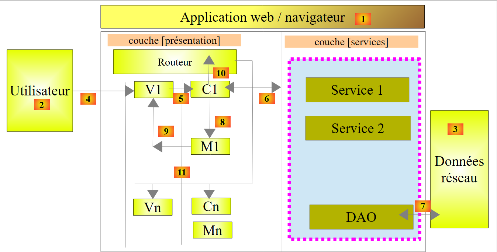 |
Nous allons nous intéresser ici à la notion de service. C'est une notion assez large. Si ci-dessus, la couche [DAO] est clairement un service, tout objet Angular peut devenir un service :
- un service suit une syntaxe particulière. Il a un nom et Angular le connaît via ce nom ;
- un service peut être injecté par Angular dans les contrôleurs et les autres services ;
Certains des services que nous allons configurer dans le module [rdvmedecins] auront besoin d'être configurés. Comme un service peut être injecté dans un autre service, il est tentant de faire la configuration dans un service que nous nommerons [config] et d'injecter celui-ci dans les services et contrôleurs à configurer. Nous décrivons maintenant ce processus.
Nous dupliquons [app-13.html] dans [app-14.html] et faisons les modifications suivantes :
<div class="container">
<!-- contrôle du msg d'attente -->
<label>
<input type="checkbox" ng-model="waiting.visible">
<span>Voir le message d'attente</span>
</label>
<!-- le message d'attente -->
<div class="alert alert-warning" ng-show="waiting.visible">
<h1>{{ waiting.text | translate}}
<button class="btn btn-primary pull-right" ng-click="waiting.cancel()">
{{'msg_cancel'|translate}}</button>
<img src="assets/images/waiting.gif" alt=""/>
</h1>
</div>
...
</div>
...
<script type="text/javascript" src="rdvmedecins-02.js"></script>
- lignes 3-6 : une case à cocher qui contrôle l'affichage ou non du message d'attente des lignes 9-15. La valeur de la case à cocher est placée dans la variable [waiting.visible] du modèle M de la vue V. Cette valeur est true si la case est cochée et false sinon. Cela marche dans les deux sens. Si nous donnons la valeur true à variable [waiting.visible], la case sera cochée. On a une association bi-directionnelle entre la vue V et son modèle M ;
- ligne 9-15 : un message d'attente avec un bouton d'annulation de l'attente (ligne 11) ;
- ligne 9 : le message n'est visible que si la variable [waiting.visible] a la valeur true. Ainsi lorsqu'on va cocher la case de la ligne 4 :
- la valeur true est affectée à la variable [waiting.visible] (ng-model, ligne 4) ;
- comme il y a eu changement du modèle M, la vue V est automatiquement réévaluée. Le message d'attente sera alors rendu visible (ng-show, ligne 9) ;
- le raisonnement est analogue lorsqu'on décoche la case de la ligne 4 : le message d'attente est caché ;
- ligne 10 : le message d'attente est l'objet d'une traduction (filtre translate) ;
- ligne 11 : lorsqu'on clique sur le bouton, la méthode [waiting.cancel()] est exécutée (atribut ng-click) ;
- ligne 12 : le libellé du bouton fait l'objet d'une traduction ;
- ligne 19 : on met le code Javascript de l'application dans un nouveau fichier JS [rdvmedecins-02] pour ne pas perdre le code déjà écrit et qui doit être maintenant réorganisé ;
Cela donne la vue suivante :
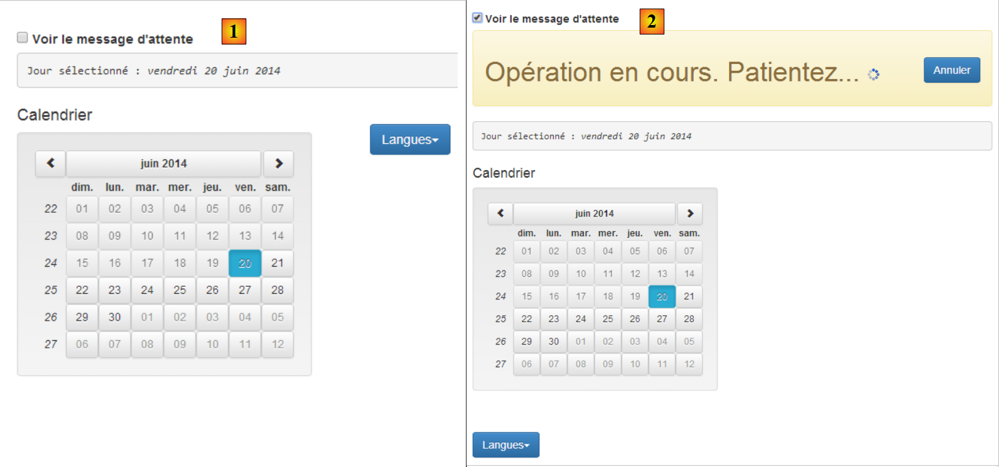 |
- en [1], case non cochée ;
- en [2], case cochée ;
Le script [rdvmedecins-02] est une réorganisation du script [rdvmedecins] :
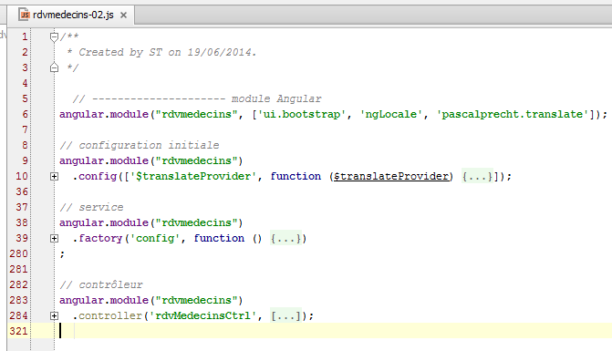
- ligne 6 : le module [rdvmedecins] de l'application ;
- lignes 9-10 : la fonction de configuration de l'application ;
- lignes 38-39 : le service [config] ;
- lignes 283-284 : le contrôleur [rdvMedecinsCtrl] ;
Précédemment, nous avions défini dans le contrôleur le dictionnaire locales={'fr':..., 'en': ...} qui faisait 200 lignes. Ce dictionnaire est clairement un élément de configuration, aussi le migre-t-on dans le service [config] des lignes 38-39. Ce service est défini de la façon suivante :
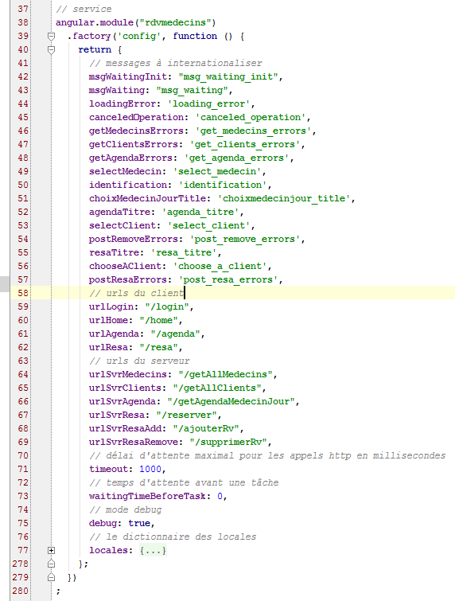
- lignes 38-39 : un service est créé avec la fonction [factory] de l'objet [angular.module]. La syntaxe de cette fonction est comme pour les précédentes factory('nom_service',['O1','O2', ...., 'On', function (O1, O2, ..., On){...}]) où les Oi sont les noms d'objets connus d'Angular (prédéfinis ou créés par le développeur) et qu'Angular injecte comme paramètre de la fonction factory. Comme ici, la fonction n'a pas de paramètres, on a utilisé une syntaxe plus courte également acceptée factory('nom_service', function (){...}]) ;
- ligne 40 : la fonction [factory] doit implémenter le service au moyen d'un objet qu'elle rend. C'est cet objet qui est le service. C'est pourquoi la fonction est-elle appelée factory (usine de création d'objets) ;
En général le code d'un service est de la forme :
Angular.module('nom_module')
.factory('nom_service',['O1','O2', ...., 'On', function (O1, O2, ..., On){
// préparation du service
...
// on rend l'objet implémentant le service
return {
// champs
...
// méthodes
...
}
});
- ligne 6 : on rend un objet JS qui peut contenir à la fois des champs et des méthodes. Ce sont ces dernières qui assurent le service ;
Ici le service [config] ne définit que des champs et aucune méthode. On y mettra tout ce qui peut être paramétré dans l'application :
- lignes 42-47 : les clés des messages à traduire ;
- lignes 59-62 : les URL de l'application ;
- lignes 64-69 : les URL du service web distant ;
- ligne 71 : un appel HTTP vers un service web qui ne répond pas, peut être long. On fixe ici à 1 seconde, le temps d'attente maximum de la réponse du service web. Passé ce délai, l'appel HTTP échoue et une exception JS est lancée ;
- ligne 73 : avant chaque appel au serveur, on va simuler une attente dont la durée est fixée ici en millisecondes. Une attente de 0 fait qu'il n'y a pas d'attente. L'application va être construite de telle façon que l'utilisateur puisse annuler une opération qu'il a lancée. Pour qu'elle puisse être annulée il faut qu'elle dure au moins quelques secondes. On utilisera cette attente artificielle pour simuler des opérations longues ;
- ligne 75 : en mode [debug=true], des informations complémentaires sont affichées dans la vue courante. Par défaut, ce mode est activé. En production, on mettrait ce champ à false ;
- lignes 77-278 : le dictionnaire des deux locales 'fr' et 'en'. Il était auparavant dans le contrôleur [rdvMedecinsCtrl] ;
Avec ce service, le contrôleur [rdvMedecinsCtrl] évolue de la façon suivante :

- lignes 284-285 : le service [config] est injecté dans le contrôleur ;
- ligne 290 : le dictionnaire [locales] est désormais trouvé dans le service [config] et non plus dans le contrôleur ;
- ligne 294 : l'objet [waiting] qui contrôle l'affichage du message d'attente. La clé du message d'attente est trouvée dans le service [config] (champ text). Par défaut le message d'attente est caché (champ visible). Le champ cancel a pour valeur, le nom de la fonction ligne 316. Ce champ est donc une méthode ou fonction ;
- ligne 316 : la fonction [cancel] est privée (on n'a pas écrit $scope.cancel=function(){}). Revenons sur le code du bouton d'annulation :
<button class="btn btn-primary pull-right" ng-click="waiting.cancel()">
Lorsque l'utilisateur clique sur le bouton d'annulation, la méthode [$scope.waiting.cancel()] est appelée. C'est au final la fonction privée cancel de la ligne 316 qui est exécutée. Elle se contente de cacher le message d'attente en mettant à false, la varible du modèle [waiting.visible] (ligne 318) ;
3.7.5. Exemple 5 : programmation asynchrone
Nous présentons maintenant un nouveau service avec une nouvelle notion, celle de la programmation asynchrone.
 |
Notre application aura trois services :
- [config] : le service de configuration que nous venons de présenter ;
- [utils] : un service de méthodes utilitaires. Nous allons en présenter deux ;
- [dao] : le service d'accès au service web de prise de rendez-vous. Nous allons le présenter prochainement ;
Nous allons écrire l'application suivante :
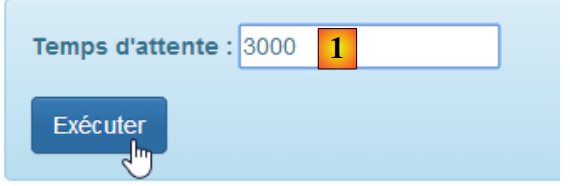 |
 |
- il s'agit de faire apparaître le bandeau [2] pendant un temps fixé par [1]. L'attente peut être annulée par [3].
Nous dupliquons [app-01.html] dans [app-15.html] et modifions le code de la façon suivante :
<!DOCTYPE html>
<html ng-app="rdvmedecins">
<head>
<title>RdvMedecins</title>
...
</head>
<body ng-controller="rdvMedecinsCtrl">
<div class="container">
<!-- le message d'attente -->
<div class="alert alert-warning" ng-show="waiting.visible" ng-cloak="">
<h1>{{ waiting.text | translate}}
<button class="btn btn-primary pull-right" ng-click="waiting.cancel()">{{'msg_cancel'|translate}}</button>
<img src="assets/images/waiting.gif" alt=""/>
</h1>
</div>
<!-- le formulaire -->
<div class="alert alert-info" ng-hide="waiting.visible">
<div class="form-group">
<label for="waitingTime">{{waitingTimeText | translate}}</label>
<input type="text" id="waitingTime" ng-model="waiting.time"/>
</div>
<button class="btn btn-primary" ng-click="execute()">Exécuter</button>
</div>
</div>
..
<script type="text/javascript" src="rdvmedecins-03.js"></script>
</body>
</html>
- ligne 11 : l'attribut [ng-cloak] empêche l'affichage de la zone avant que les expressions Angular de celle-ci n'aient été calculées. Cela évite un affichage bref de la zone avant l'évaluation de l'attribut [ng-show] qui va en fait provoquer sa dissimulation ;
- ligne 22 : la saisie de l'utilisateur (temps d'attente) va être mémorisée dans le modèle [waiting.time] (attribut ng-model) ;
- ligne 28 : la page utilise un nouveau script [rdvmedecins-03] ;
Le script [rdvmedecins-03] est le suivant :

- ligne 6 : le module Angular qui gère l'application ;
- ligne 10 : la fonction [config] utilisée pour internationaliser les messages ;
- ligne 41 : le service [config] que nous avons décrit ;
- ligne 286 : le service [utils] que nous allons construire ;
- ligne 315 : le contrôleur [rdvmedecinsCtrl] que nous allons construire ;
Nous ajoutons à la fonction [config], une nouvelle clé de message (lignes 6, 11) :
angular.module("rdvmedecins")
.config(['$translateProvider', function ($translateProvider) {
// messages français
$translateProvider.translations("fr", {
...
'msg_waiting_time_text': "Temps d'attente : "
});
// messages anglais
$translateProvider.translations("en", {
...
'msg_waiting_time_text': "Waiting time:"
});
// langue par défaut
$translateProvider.preferredLanguage("fr");
}]);
Nous ajoutons au service [config] une nouvelle ligne (ligne 6) pour cette clé de message :
angular.module("rdvmedecins")
.factory('config', function () {
return {
// messages à internationaliser
...
waitingTimeText: 'msg_waiting_time_text',
Le service [utils] contient deux méthodes (lignes 4, 12) :
angular.module("rdvmedecins")
.factory('utils', ['config', '$timeout', '$q', function (config, $timeout, $q) {
// affichage de la représentation Json d'un objet
function debug(message, data) {
if (config.debug) {
var text = data ? message + " : " + angular.toJson(data) : message;
console.log(text);
}
}
// attente
function waitForSomeTime(milliseconds) {
// attente asynchrone de milliseconds milli-secondes
var task = $q.defer();
$timeout(function () {
task.resolve();
}, milliseconds);
// on retourne la tâche
return task;
};
// instance du service
return {
debug: debug,
waitForSomeTime: waitForSomeTime
}
}]);
- ligne 2 : le service s'appelle [utils] (1er paramètre). Il a des dépendances sur trois services, deux services Angular prédéfinis $timeout, $q et le service config. Le service [$timeout] permet d'exécuter une fonction après qu'un certain temps se soit écoulé. Le service [$q] permet de créer des tâches asynchrones ;
- ligne 4 : une fonction locale [debug] ;
- ligne 12 : une fonction locale [waitForSomeTime] ;
- lignes 23-26 : l'instance du service [utils]. C'est un objet qui expose deux méthodes, celles des lignes 4 et 12. Notez que les champs de l'objet peuvent porter des noms quelconques. Par cohérence, on leur a donné les noms des fonctions qu'ils référencent ;
- lignes 4-9 : la méthode [debug] écrit sur la console un message [message] et éventuellement la représentation JSON d'un objet [data]. Cela permet d'afficher des objets de n'importe quelle complexité ;
- lignes 12-20 : la méthode [waitForSomeTime] crée une tâche asynchrone qui dure [milliseconds] milli-secondes ;
- ligne 14 : création d'une tâche grâce à l'objet prédéfini [$q] (https://docs.angularjs.org/api/ng/service/$q). Ci-dessous, l'API de la tâche appelée [deferred] dans la documentation Angular :

- une tâche asynchrone [task] est créée par l'instruction [$q.defer()] ;
- on la termine à l'aide d'une des deux méthodes :
- [task.resolve(value)] : qui termine la tâche avec succès et renvoie la valeur [value] à ceux qui attendent la fin de la tâche ;
- [task.reject(value)] : qui termine la tâche avec échec et renvoie la valeur [value] à ceux qui attendent la fin de la tâche ;
La tâche [task] peut régulièrement donner des informations à ceux qui attendent sa fin :
- [task.notify(value)] : envoie la valeur [value] à ceux qui attendent la fin de la tâche. La tâche continue à s'exécuter ;
Ceux qui veulent attendre la fin de la tâche utilisent le champ [promise] de celle-ci :
L'objet [promise] a l'API suivante (http://www.frangular.com/2012/12/api-promise-angularjs.html) :

Pour gérer à la fois le succès et l'échec de la tâche, on écrira :
- ligne 1 : on récupère la promesse de la tâche ;
- ligne 2 : on définit les fonctions à exécuter en cas de succès ou en cas d'échec. On peut ne pas mettre de fonction d'échec. La fonction [successCallback] ne sera exécutée qu'à la fin de la tâche [task] avec succès [task.resolve()]. La fonction [errorCallBack] ne sera exécutée qu'à la fin de la tâche [task] avec échec [task.reject()].
- ligne 3 : on définit la fonction à exécuter après que l'une des deux fonction précédentes se soit exécutée. On met ici, le code commun aux deux fonctions [successCallback, errorCallBack].
Revenons au code de la fonction [waitForSomeTime] :
// attente
function waitForSomeTime(milliseconds) {
// attente asynchrone de milliseconds millisecondes
var task = $q.defer();
$timeout(function () {
task.resolve();
}, milliseconds);
// on retourne la tâche
return task;
};
- ligne 4 : une tâche est créée ;
- lignes 5-7 : l'objet [$timeout] permet de définir une fonction (1er paramètre) qui s'exécute après un certain délai exprimé en millisecondes (2ème paramètre). Ici le second paramètre de la fonction [$timeout] est le paramètre de la méthode (ligne 1) ;
- ligne 6 : au bout du délai [milliseconds], la tâche est terminée avec succès ;
- ligne 9 : on retourne la tâche [task]. Il faut comprendre ici que la ligne 9 est exécutée immédiatement après la définition de l'objet [$timeout]. On n'attend pas que le délai [milliseconds] se soit écoulé. Le code des lignes 2-10 est donc exécuté à deux moments différents :
- une première fois qui définit l'objet [$timeout] ;
- une seconde fois lorsque le délai [milliseconds] est écoulé ;
On a là, une fonction asynchrone : son résultat est obtenu à un moment ultérieur à celui de son exécution.
Le code du contrôleur qui utilise le service [config] est le suivant :
// contrôleur
angular.module("rdvmedecins")
.controller('rdvMedecinsCtrl', ['$scope', 'utils', 'config', '$filter',
function ($scope, utils, config, $filter) {
// ------------------- initialisation modèle
// message d'attente
$scope.waiting = {text: config.msgWaiting, visible: false, cancel: cancel, time: undefined};
$scope.waitingTimeText = config.waitingTimeText;
// tâche d'attente
var task;
// logs
utils.debug("libellé temps d'attente", $filter('translate')($scope.waitingTimeText));
utils.debug("locales['fr']=", config.locales['fr']);
// exécution action
$scope.execute = function () {
// log
utils.debug('début', new Date());
// on affiche le msg d'attente
$scope.waiting.visible = true;
// attente simulée
task = utils.waitForSomeTime($scope.waiting.time);
// fin d'attente
task.promise.then(function () {
// succès
utils.debug('fin', new Date());
}, function () {
// échec
utils.debug('Opération annulée')
});
task.promise['finally'](function () {
// fin d'attente dans tous les cas
$scope.waiting.visible = false;
});
};
// annulation attente
function cancel() {
// on termine la tâche
task.reject();
}
}]);
- ligne 3 : le contrôleur utilise le service [config] ;
- ligne 7 : on a ajouté le champ [time] à l'objet [$scope.waiting]. L'objet [$scope.waiting.time] reçoit la valeur du délai d'attente fixé par l'utilisateur ;
- ligne 8 : la clé du message d'attente affiché par la vue est placée dans le modèle [$scope.waitingTimeText]. De façon générale tout ce qui est affiché par une vue V doit être placé dans l'objet [$scope] ;
- ligne 10 : une variable locale. Elle n'est pas exposée à la vue V ;
- lignes 12-13 : utilisation de la méthode [debug] du service [config]. On obtient le résultat suivant sur la console :
Ligne 2, on obtient la notation JSON de l'objet locales['fr'].
- ligne 16 : la méthode exécutée lorsque l'utilisateur clique sur le bouton [Executer] ;
- ligne 18 : affiche l'heure de début d'exécution de la méthode ;
- ligne 22 : on lance la tâche [waitForSomeTime]. On n'attend pas sa fin. L'exécution continue avec la ligne 24 suivante ;
- lignes 24-30 : on définit les fonctions à exécuter lorsque la tâche se termine avec succès (ligne 26) et en cas d'erreur (ligne 29) ;
- ligne 26 : affiche l'heure de fin d'exécution de la méthode ;
- ligne 29 : affiche que l'opération a été annulée. Cela est provoqué uniquement lorsque l'utilisateur clique sur le bouton [Annuler]. L'instruction de la ligne 41, arrête alors la tâche asynchrone avec un code d'échec ;
- lignes 31-34 : on définit la fonction à exécuter après l'exécution d'une des deux fonctions précédentes ;
Il est important de comprendre les séquences d'exécution de ce code. Dans le cas où l'utilisateur met un délai de 3 secondes et n'annule pas l'attente :
- lorsqu'il clique sur le bouton [Exécuter], la fonction [$scope.execute] s'exécute. Les lignes 16-34 sont exécutées sans attente des 3 secondes. A la fin de cette exécution, la vue V est synchronisée avec le modèle M. Le message d'attente est affiché (ng-show=$scope.waiting.visible=true, ligne 20) et le formulaire est caché (ng-hide=$scope.waiting.visible=true, ligne 20) ;
- à partir de ce moment l'utilisateur peut interagir de nouveau avec la vue. Il peut notamment cliquer sur le bouton [Annuler] ;
- s'il ne le fait pas, au bout de 3 secondes, la fonction du [$timeout] (cf lignes 5-7 ci-dessous) s'exécute :
// attente
function waitForSomeTime(milliseconds) {
// attente asynchrone de milliseconds millisecondes
var task = $q.defer();
$timeout(function () {
task.resolve();
}, milliseconds);
// on retourne la tâche
return task;
};
- au bout de 3 secondes donc, du code est exécuté. Ce code termine la tâche [task] avec un code de succès (resolve). Cela va déclencher l'exécution de tous les codes qui attendaient cette fin (ligne 4 ci-dessous) :
// attente simulée
task = utils.waitForSomeTime($scope.waiting.time);
// fin d'attente
task.promise.then(function () {
// succès
utils.debug('fin', new Date());
}, function () {
// échec
utils.debug('Opération annulée')
});
task.promise['finally'](function () {
// fin d'attente dans tous les cas
$scope.waiting.visible = false;
});
- la ligne 6 ci-dessus (fin avec succès) va donc être exécutée. Puis ce sera le tour des lignes 11-14. Une fois ce code exécuté, on revient à la vue V qui va alors être synchronisée avec son modèle M. Le message d'attente est caché (ng-show=$scope.waiting.visible=false, ligne 13) et le formulaire est affiché (ng-hide=$scope.waiting.visible=false, ligne 13) ;
Les affichages écran sont alors les suivants :
On voit ci-dessus, le délai de 3 secondes (06:01-05:58) entre le début et la fin de l'attente. Si on contraire, l'utilisateur annule l'attente avant les 3 secondes, on a l'affichage suivant :
Pour terminer, il est important de comprendre qu'à tout moment il n'y a qu'un tread d'exécution appelé le thread de l'UI (User Interface). La fin d'une tâche asynchrone est signalée par un événement exactement comme l'est le clic sur un bouton. Cet événement n'est pas traité immédiatement. Il est mis dans la file d'attente des événements qui attendent leur exécution. Lorsque vient son tour, il est traité. Ce traitement utilise le thread de l'UI et donc pendant ce temps, l'interface est gelée. Elle ne réagit pas aux sollicitations de l'utilisateur. Pour cela, il est important que le traitement d'un événement soit rapide. Parce que chaque événement est traité par le thread de l'UI, on n'a jamais à régler des problèmes de synchronisation entre threads s'exécutant en même temps. Il n'y a, à chaque instant, que le thread de l'UI qui s'exécute.
3.7.6. Exemple 6 : les services HTTP
Nous présentons maintenant le service [dao] qui communique avec le serveur web :
 |
3.7.6.1. La vue V
 |
Nous allons écrire un formulaire pour demander la liste des médecins :

Nous dupliquons [app-01.html] dans [app-16.html] que nous modifions ensuite de la façon suivante :
<div class="container" ng-cloak="">
<h1>Rdvmedecins - v1</h1>
<!-- le message d'attente -->
<div class="alert alert-warning" ng-show="waiting.visible" ng-cloak="">
<h1>{{ waiting.text | translate}}
<button class="btn btn-primary pull-right" ng-click="waiting.cancel()">{{'msg_cancel'|translate}}</button>
<img src="assets/images/waiting.gif" alt=""/>
</h1>
</div>
<!-- la demande -->
<div class="alert alert-info" ng-hide="waiting.visible">
<div class="form-group">
<label for="waitingTime">{{waitingTimeText | translate}}</label>
<input type="text" id="waitingTime" ng-model="waiting.time"/>
</div>
<div class="form-group">
<label for="urlServer">{{urlServerLabel | translate}}</label>
<input type="text" id="urlServer" ng-model="server.url"/>
</div>
<div class="form-group">
<label for="login">{{loginLabel | translate}}</label>
<input type="text" id="login" ng-model="server.login"/>
</div>
<div class="form-group">
<label for="password">{{passwordLabel | translate}}</label>
<input type="password" id="password" ng-model="server.password"/>
</div>
<button class="btn btn-primary" ng-click="execute()">{{medecins.title|translate:medecins.model}}</button>
</div>
<!-- la liste des médecins -->
<div class="alert alert-success" ng-show="medecins.show">
{{medecins.title|translate:medecins.model}}
<ul>
<li ng-repeat="medecin in medecins.data">{{medecin.titre}}{{medecin.prenom}} {{medecin.nom}}</li>
</ul>
</div>
<!-- la liste d'erreurs -->
<div class="alert alert-danger" ng-show="errors.show">
{{errors.title|translate:errors.model}}
<ul>
<li ng-repeat="message in errors.messages">{{message|translate}}</li>
</ul>
</div>
</div>
...
<script type="text/javascript" src="rdvmedecins-04.js"></script>
- lignes 13-31 : implémentent le formulaire. Celui-ci n'est pas visible lorsque le message d'attente est affiché (ng-hide="waiting.visible"). On retiendra que les quatre saisies sont mémorisées dans (attributs ng-model) [waiting.time (ligne 16), server.url (ligne 20), server.login (ligne 24), server.password (ligne 28)] ;
- lignes 34-39 : affichent la liste des médecins. Cette liste n'est pas toujours visible (ng-show="medecins.show").
- ligne 35 : une alternative à la syntaxe <div ... translate="{{medecins.title}}" translate-values="{{medecins.model}}"> déjà rencontrée ;
- ligne 36 : une liste non ordonnée ;
- ligne 37 : la liste des médecins sera trouvée dans le modèle [medecins.data]. La directive Angular [ng-repeat] permet de parcourir une liste. La syntaxe ng-repeat="medecin in medecins.data" demande à ce que la balise <li> soit répétée pour chaque élément de la liste [medecins.data]. L'élément courant de la liste est appelée [medecin] ;
- ligne 37 : pour chaque <li>, on écrit le titre, le prénom et le nom du médecin courant désigné par la variable [medecin] ;
- lignes 42-47 : affichent la liste des erreurs. Cette liste n'est pas toujours visible (ng-show="errors.show"). Cet affichage suit le même modèle que l'affichage de la liste des médecins. De façon générale, pour afficher une liste d'objets, on utilise la directive Angular [ng-repeat] ;
- ligne 51 : le code Javascript est maintenant dans le fichier [rdvmedecins-04]
3.7.6.2. Le contrôleur C et le modèle M
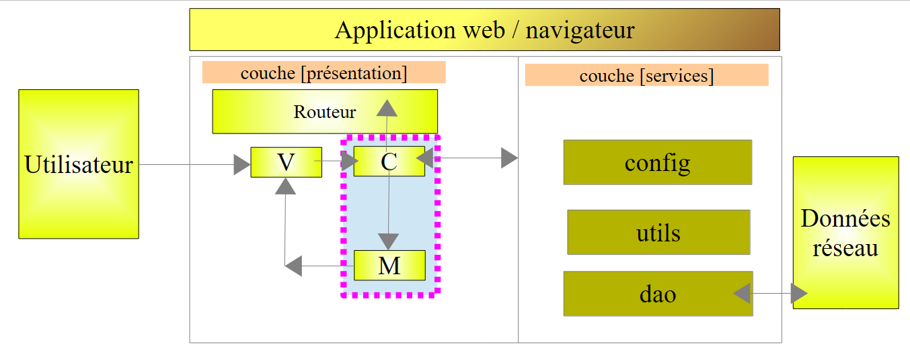 |
Le code Javascript évolue de la façon suivante :

- lignes 6-9 : le module [rdvmedecins] déclare une dépendance sur le module [base64] fourni par la bibliothèque [angular-base64] qui est l'une des dépendances du projet. Ce module sert à coder en Base64, la chaîne [login:password] envoyée au service web pour s'authentifier ;
- lignes 12-13 : la fonction d'initialisation qui contient nos messages internationalisés. De nouveaux messages apparaissent. Nous ne les présenterons plus ;
- lignes 69-70 : le service [config] qui paramètre notre application. De nouvelles clés de message y sont ajoutées. Nous ne les présenterons plus ;
- lignes 318-319 : le service [utils] qui contient des méthodes utilitaires. De nouvelles y sont rajoutées. Nous les présenterons ;
- lignes 385-386 : le service [dao] chargé des échanges avec le service web. C'est sur lui que nous allons nous concentrer ;
- lignes 467-468 : le contrôleur C de la vue V que nous venons de présenter. Nous allons le présenter maintenant car c'est lui le chef d'orchestre qui réagit aux demandes de l'utilisateur ;
3.7.6.3. Le contrôleur C
Le code du contrôleur est le suivant :
angular.module("rdvmedecins")
.controller('rdvMedecinsCtrl', ['$scope', 'utils', 'config', 'dao', '$translate',
function ($scope, utils, config, dao, $translate) {
// ------------------- initialisation modèle
// modèle
$scope.waiting = {text: config.msgWaiting, visible: false, cancel: cancel, time: undefined};
$scope.waitingTimeText = config.waitingTimeText;
$scope.server = {url: undefined, login: undefined, password: undefined};
$scope.medecins = {title: config.listMedecins, show: false, model: {}};
$scope.errors = {show: false, model: {}};
$scope.urlServerLabel = config.urlServerLabel;
$scope.loginLabel = config.loginLabel;
$scope.passwordLabel = config.passwordLabel;
// tâche asynchrone
var task;
// exécution action
$scope.execute = function () {
// on met à jour l'UI
$scope.waiting.visible = true;
$scope.medecins.show = false;
$scope.errors.show = false;
// attente simulée
task = utils.waitForSomeTime($scope.waiting.time);
var promise = task.promise;
// attente
promise = promise.then(function () {
// on demande la liste des médecins;
task = dao.getData($scope.server.url, $scope.server.login, $scope.server.password, config.urlSvrMedecins);
return task.promise;
});
// on analyse le résultat de l'appel précédent
promise.then(function (result) {
// result={err: 0, data: [med1, med2, ...]}
// result={err: n, messages: [msg1, msg2, ...]}
if (result.err == 0) {
// on met les données acquises dans le modèle
$scope.medecins.data = result.data;
// on met à jour l'UI
$scope.medecins.show = true;
$scope.waiting.visible = false;
} else {
// il y a eu des erreurs pour obtenir la liste des médecins
$scope.errors = { title: config.getMedecinsErrors, messages: utils.getErrors(result), show: true, model: {}};
// on met à jour l'UI
$scope.waiting.visible = false;
}
});
};
// annulation attente
function cancel() {
// on termine la tâche
task.reject();
// on met à jour l'UI
$scope.waiting.visible = false;
$scope.medecins.show = false;
$scope.errors.show = false;
}
}
])
;
- ligne 2 : le contrôleur a une nouvelle dépendance, celle sur le service [dao] ;
- lignes 6-13 : le modèle M de la vue V est initialisé pour le 1er affichage de celle-ci ;
- ligne 8 : [$scope.server] va être utilisé pour récupérer trois des quatre informations du formulaire V, la quatrième étant mémorisée dans [$scope.waiting.time] (ligne 6) ;
- ligne 9 : [$scope.medecins] va rassembler les informations nécessaires à l'affichage de la liste des médecins :
<!-- la liste des médecins -->
<div class="alert alert-success" ng-show="medecins.show">
{{medecins.title|translate:medecins.model}}
<ul>
<li ng-repeat="medecin in medecins.data">{{medecin.titre}}{{medecin.prenom}} {{medecin.nom}}</li>
</ul>
</div>
L'attribut [medecins.title] sera le titre du bandeau. Il est défini dans le service [config]. L'attribut [medecins.show] va contrôler l'affichage ou non du bandeau (attribut ng-show="medecins.show"). L'attribut [medecins.model] est un dictionnaire vide et le restera. Il sert simplement à illustrer l'utilisation de la variante de traduction utilisée ligne 3. Non défini encore, l'attribut [medecins.data] qui contiendra la liste des médecins (ligne 5).
- ligne 10 : [$scope.errors] va rassembler les informations nécessaires à l'affichage de la liste des erreurs :
<!-- la liste d'erreurs -->
<div class="alert alert-danger" ng-show="errors.show">
{{errors.title|translate:errors.model}}
<ul>
<li ng-repeat="message in errors.messages">{{message|translate}}</li>
</ul>
</div>
L'attribut [errors.title] sera le titre du bandeau. Il est défini dans le service [config]. L'attribut [errors.show] va contrôler l'affichage ou non du bandeau (attribut ng-show="errors .show"). L'attribut [errors.model] est un dictionnaire vide et le restera. Il sert simplement à illustrer l'utilisation de la variante de traduction utilisée ligne 3. Non défini encore, l'attribut [errors.messages] qui contiendra la liste des messages d'erreur à afficher (ligne 5).
- ligne 16 : la tâche asynchrone. Le contrôleur va lancer successivement deux tâches asynchrones. Les références sur ces tâches successives seront placées dans la variable [task]. Cela permettra de les annuler (ligne 55) ;
- ligne 19 : la méthode exécutée lorsque l'utilisateur clique sur le bouton [Liste des médecins] :
<button class="btn btn-primary" ng-click="execute()">Liste des médecins</button>
- lignes 21-23 : l'interface visuelle est mise à jour : le message d'attente est affiché, tout le reste est caché ;
- ligne 25 : on crée la tâche asynchrone de l'attente. On recevra un signal (tâche réalisée) au bout du temps saisi par l'utilisateur dans le formulaire ;
- ligne 26 : on récupère la promesse de la tâche asynchrone. C'est avec elle que le programme qui lance la tâche travaille. Il faut cependant avoir la référence de la tâche elle-même afin de pouvoir l'annuler (ligne 55) ;
- lignes 28-32 : on définit le travail à faire lorsque l'attente sera terminée ;
- ligne 30 : on utilise la méthode [dao.getData] pour lancer une nouvelle tâche asynchrone. On lui passe les informations dont elle a besoin :
- l'URL racine du service web [$scope.server.url], par exemple [http://localhost:8080];
- le login [$scope.server.login] pour s'identifier, par exemple [admin];
- le mot de passe [$scope.server.password] pour s'identifier, par exemple [admin];
- l'URL qui rend le service demandé [config.urlSvrMedecins], ici [/getAllMedecins]. Au total l'URL complète sera [http://localhost:8080/getAllMedecins] ;
La méthode [dao.getData] rend un résultat qui a deux formes possibles :
- (suite)
- {err: 0, data: [med1, med2, ...]} où [medi] est un objet représentant un médecin (titre, prenom, nom),
- {err: n, messages: [msg1, msg2, ...]} où [msgi] est un message d'erreur et n est différent de 0 ;
- ligne 31 : on retourne la promesse de la tâche. Là il y a quelque chose à comprendre. On a deux promesses :
- promise.then() : rend une première promesse [promise1] ;
- return task.promise : rend une seconde promesse [promise2] ;
- au final promise=promise.then(... ;return task.promise) est une chaîne de deux promesses [promise2.promise1]. [promise1] ne sera évaluée que lorsque la promesse [promise2] sera obtenue, ç-à-d lorsque la tâche [dao.getData] sera terminée. La promesse [promise1] ne dépend d'aucune tâche asynchrone. Elle sera donc obtenue immédiatement ;
- lignes 34-50 : de l'explication précédente, il découle que ces lignes se seront exécutée que lorsque la tâche [dao.getData] sera terminée. Le paramètre [result] passé à la fonction de la ligne 34 est construit par la méthode [dao.getData] et transmis au code appelant par l'opération [task.resolve(result)] où [result] est de la forme suivante :
- {err: 0, data: [med1, med2, ...]} où [medi] est un objet représentant un médecin (titre, prenom, nom),
- {err: n, messages: [msg1, msg2, ...]} où [msgi] est un message d'erreur et n est différent de 0 ;
- ligne 37 : on regarde le code d'erreur [result.err] ;
- lignes 38-42 : s'il n'y a pas d'erreur (result.err==0), alors on récupère la liste des médecins et on l'affiche ;
- lignes 44-47 : si au contraire il y a erreur (result.err !=0), alors on récupère la liste des messages d'erreur et on l'affiche ;
- lignes 53-56 : le message d'attente avec son bouton d'annulation est présent tant que les deux opérations asynchrones ne sont pas terminées. Voyons ce qui se passe selon le moment de l'annulation :
- il faut tout d'abord comprendre que les lignes 19-50 sont exécutées d'une traite. Une seule tâche asynchrone a alors été lancée, celle de la ligne 25,
- après cette première exécution, la vue V est mise à jour et donc le bandeau d'attente et son bouton d'annulation est visible. Si l'utilisateur annule l'attente avant que la tâche de la ligne 25 ne soit terminée, la méthode de la ligne 53 est alors exécutée et la tâche est annulée avec échec (ligne 55) ;
- lignes 56-59 : l'interface est mise à jour : on réaffiche le formulaire et tout le reste est caché,
- il a alors retour à la vue V et le navigateur va traiter l'événement suivant. Puisqu'il y a eu fin de tâche, la promesse de cette tâche est obtenue, ce qui crée un événement. Il est alors traité ;
- les lignes 28-32 sont ensuite exécutées. Il n'y a pas de fonction définie pour le cas d'échec, donc aucun code n'est exécuté. On obtient une nouvelle promesse, celle toujours rendue par [promise.then] et toujours obtenue,
- l'évenement ayant été traité, il y a retour à la vue V et le navigateur va traiter l'événement suivant. Puisque la [promise] de la ligne 28 a été traitée, celle de la ligne 34 va être résolue, ce qui va provoquer un nouvel événement. Il est alors traité ;
- les lignes 34-49 vont alors être exécutées à leur tour, car la promesse utilisée ligne 34 a été obtenue. De nouveau, parce qu'il n'y a pas de fonction définie pour le cas d'échec, aucun code n'est exécuté,
- on arrive ainsi à la ligne 50. Il n'y a plus d'attente de tâche et la nouvelle vue V est affichée ;
- supposons maintenant que l'annulation intervient pendant que la seconde tâche asynchrone [dao.getData] est en cours d'exécution. Le raisonnement précédent peut être tenu de nouveau. La fin de la tâche va provoquer l'exécution des lignes 34-50 avec une fin de tâche avec échec. On va découvrir bientôt que la méthode [dao.getData] réalise un appel HTTP asynchrone vers le service web. Cet appel ne sera pas annulé mais son résultat ne sera pas exploité.
Il est important de comprendre ce va et vient constant entre l'affichage de la vue V et le traitement des événements du navigateur. Les événements sont provoqués par l'utilisateur (un clic) ou par des opérations système telles que la fin d'une opération asynchrone. L'état de repos du navigateur est l'affichage de la vue V. Il est tiré de ce repos par un événement qui se produit et qu'il traite alors. Dès que l'événement a été traité, il revient à son état de repos. La vue V est alors mise à jour si l'événement traité a modifié son modèle M. Le navigateur est tiré de son état de repos par l'événement suivant.
Tout se passe dans un unique thread. Deux événements ne sont jamais traités simultanément. Leur exécution est séquentielle. Le navigateur ne passe à l'événement suivant que lorsque le précédent lui laisse la main, en général parce qu'il a été traité totalement.
Il nous reste un point à expliquer. Pour afficher les messages d'erreur, nous écrivons :
$scope.errors = { title: config.getMedecinsErrors, messages: utils.getErrors(result), show: true, model: {}};
La liste des messages est fournie par la méthode [utils.getErrors] définie dans le service [utils]. Cette méthode est la suivante :
// analyse des erreurs dans la réponse du serveur JSON
function getErrors(data) {
// data {err:n, messages:[]}, err!=0
// erreurs
var errors = [];
// code d'erreur
var err = data.err;
switch (err) {
case 2 :
// not authorized
errors.push('not_authorized');
break;
case 3 :
// forbidden
errors.push('forbidden');
break;
case 4 :
// erreur locale
errors.push('not_http_error');
break;
case 6 :
// document non trouvé
errors.push('not_found');
break;
default :
// autres cas
errors = data.messages;
break;
}
// si pas de msg, on en met un
if (! errors || errors.length == 0) {
errors=['error_unknown'];
}
// on rend la liste des erreurs
return errors;
}
- lignes 2-3 : le paramètre [data] reçu est un objet avec deux attributs :
- [err] : un code d'erreur ;
- [messages] : une liste de messages ;
- ligne 5 : on va consruire un tableau de messages d'erreur. Ces messages sont internationalisés. Pour cette raison, ce ne sont pas les messages eux-mêmes qu'on met dans le tableau, mais leurs clés d'internationalisation sauf à la ligne 27. Dans ce cas, on utilise l'attribut [messages] du paramètre [data]. Ces messages sont de vrais messages et non des clés de message. La vue V va cependant les traiter comme des clés de message qui ne seront alors pas trouvées. Dans ce cas, le module [translate] affiche la clé de message qu'il n'a pas trouvée, donc ici un vrai message. C'est le résultat souhaité ;
- lignes 32-34 : traitent le cas ou [data.messages] ligne 27 vaut null. Cela arrive avec le service web écrit. Il aurait fallu éviter ce cas.
3.7.6.4. Le service [dao]
 |
Le service [dao] assure les échanges HTTP avec le service web / JSON. Son code est le suivant :
angular.module("rdvmedecins")
.factory('dao', ['$http', '$q', 'config', '$base64', 'utils',
function ($http, $q, config, $base64, utils) {
// logs
utils.debug("[dao] init");
// ----------------------------------méthodes privées
// obtenir des données auprès du service web
function getData(serverUrl, username, password, urlAction, info) {
// opération asynchrone
var task = $q.defer();
// url requête HTTP
var url = serverUrl + urlAction;
// authentification basique
var basic = "Basic " + $base64.encode(username + ":" + password);
// la réponse
var réponse;
// les requêtes http doivent être toutes authentifiées
var headers = $http.defaults.headers.common;
headers.Authorization = basic;
// on fait la requête HTTP
var promise;
if (info) {
promise = $http.post(url, info, {timeout: config.timeout});
} else {
promise = $http.get(url, {timeout: config.timeout});
}
promise.then(success, failure);
// on retourne la tâche elle-même afin qu'elle puisse être annulée
return task;
// success
function success(response) {
// response.data={status:0, data:[med1, med2, ...]} ou {status:x, data:[msg1, msg2, ...]
utils.debug("[dao] getData[" + urlAction + "] success réponse", response);
// réponse
var payLoad = response.data;
réponse = payLoad.status == 0 ? {err: 0, data: payLoad.data} : {err: 1, messages: payLoad.data};
// on rend la réponse
task.resolve(réponse);
}
// failure
function failure(response) {
utils.debug("[dao] getData[" + urlAction + "] error réponse", response);
// on analyse le status
var status = response.status;
var error;
switch (status) {
case 401 :
// unauthorized
error = 2;
break;
case 403:
// forbidden
error = 3;
break;
case 404:
// not found
error = 6;
break;
case 0:
// erreur locale
error = 4;
break;
default:
// autre chose
error = 5;
}
// on rend la réponse
task.resolve({err: error, messages: [response.statusText]});
}
}
// --------------------- instance du service [dao]
return {
getData: getData
}
}]);
- lignes 77-79 : le service n'a qu'un unique champ : la méthode [getData] qui permet d'obtenir des informations auprès du service web / JSON ;
- ligne 2 : apparaît une dépendance [$http] que nous n'avions pas encore rencontrée. C'est un service prédéfini d'Angular qui permet le dialogue HTTP avec une entité distante ;
- ligne 6 : un log pour voir à quel moment de la vie de l'application, le code est exécuté ;
- ligne 10 : la méthode [getData] admet cinq paramètres :
- [serverUrl] : l'URL racine du service web (http://localhost:8080) ;
- [urlAction] : l'URL du service particulier demandé (/getAllMedecins) ;
- [username] : le login de l'utilisateur ;
- [password] : son mot de passe ;
- [info] : objet rassemblant des informations complémentaires lorsque l'URL du service particulier demandé est demandé via une opération POST. Dans le cas de l'URL (/getAllMedecins), ce paramètre n'a pas été passé. Il est donc [undefined] ;
- ligne 12 : on crée une tâche asynchrone ;
- ligne 14 : l'URL complète du service demandé (http://localhost:8080/getAllMedecins);
- ligne 16 : l'authentification se fait en envoyant l'entête HTTP suivant :
où [code] est le code Base64 de la chaine [username:password] ;
La ligne 16 construit la partie [Basic code] de l'entête HTTP ;
- ligne 18 : la réponse du service web ;
- ligne 20 : les entêtes HTTP envoyés par défaut par Angular dans une requête HTTP sont définis dans l'objet [$http.defaults.headers.common]. L'entête [Authorization:Basic code] n'en fait pas partie ;
- ligne 21 : on l'ajoute aux entêtes HTTP à envoyer systématiquement. A gauche de l'affectation, on a l'entête [Authorization] à initialiser et à droite la valeur de l'entête, ici la valeur définie ligne 16. Ainsi si on écrit :
Angular enverra l'entête HTTP :
- ligne 23 : les méthodes du service [$http] renvoient des promesses. Elle seront mémorisées dans la variable [promise] ;
- ligne 27 : parce qu'ici, le paramètre [info] a la valeur [undefined], c'est la ligne 27 qui est exécutée. L'URL (http://localhost:8080/getAllMedecins) est demandée avec un GET. Pour ne pas attendre trop longtemps, on fixe un délai d'attente maximum (timeout) pour obtenir la réponse du serveur. Par défaut, ce délai est d'une seconde ;
- ligne 29 : on définit les deux méthodes à exécuter lorsque la promesse est obtenue :
- [success] : définie ligne 34, est la méthode à exécuter lorsque la promesse est obtenue sur un succès de la tâche ;
- [failure] : définie ligne 45, est la méthode à exécuter lorsque la promesse est obtenue sur un échec de la tâche ;
- les deux méthodes (on devrait dire fonctions) sont définies à l'intérieur de la fonction [getData]. C'est possible en Javascript. Les variables défines dans [getData] sont connues dans les deux fonctions internes [success, failure] ;
- ligne 31 : on retourne la tâche créée ligne 12. Il faut se rappeler ici le code appelant :
promise = promise.then(function () {
// on demande la liste des médecins;
task = dao.getData($scope.server.url, $scope.server.login, $scope.server.password, config.urlSvrMedecins);
return task.promise;
});
Ligne 3 ci-dessus, on récupère bien une tâche.
- ligne 34 : la fonction [success] est exécutée plus tard dans le temps, lorsque l'appel HTTP se termine avec succès. Cette notion de succès est liée à la première ligne d'une réponse HTTP. Celle-ci a la forme :
Le code est un texte de trois chiffres qui indique si l'appel a réussi ou non. Grossièrement, on peut dire que les codes 2xx et 3xx sont des codes de réussite, les autres étant des codes d'échec. Le texte est un court texte d'explication. Voici deux réponses possibles, l'un en cas de réussite, l'autre en cas d'échec :
- ligne 36 : on affiche sur la console la réponse du serveur. Dans l'erreur [404 Not Found], on obtient quelque chose comme :
[dao] getData[/getAllMedecins] error réponse : {"data":"...","status":404,"config":{...},"statusText":"Not Found"}
Dans cette réponse, nous n'utiliserons que les champs [data], [status] et [statusText].
- ligne 38 : on récupère le champ [data] de la réponse. Il aura l'une des formes suivantes :
- {status: 0, data: [med1, med2, ...]} où [medi] est un objet représentant un médecin (titre, prenom, nom),
- {status: n, data: [msg1, msg2, ...]} où [msgi] est un message d'erreur et n est différent de 0 ;
 |
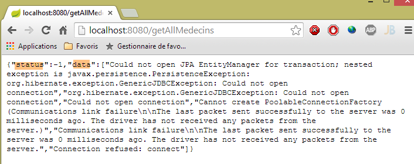
- ligne 39 : on construit la réponse {0,data} ou {n,messages}. La première réponse contient les médecins dans le champ [data]. La seconde signale une erreur qui s'est produite côté serveur. Celui a géré celle-ci, généré un code d'erreur dans [err] et une liste de messages d'erreur dans [data]. Dans les deux cas, il renvoie un code HTTP 200 indiquant que l'ordre HTTP a été traité complètement. C'est pour cela que les deux cas sont traités dans la même fonction [success] ;
- ligne 41 : la tâche est terminée [task.resolve] et on rend l'une des deux réponses :
- {err: 0, data: [med1, med2, ...]} où [medi] est un objet représentant un médecin (titre, prenom, nom),
- {err: n, messages: [msg1, msg2, ...]} où [msgi] est un message d'erreur et n est différent de 0 ;
Il faut relier ce code à la façon dont cette réponse est récupérée dans le code appelant du contrôleur :
// on analyse le résultat de l'appel précédent
promise.then(function (result) {
// result={err: 0, data: [med1, med2, ...]}
// result={err: n, messages: [msg1, msg2, ...]}
...
}
La réponse de [task.resolve(réponse)] se retrouve ci-dessus dans la variable [result].
- ligne 45 : la fonction [failure] lorsque la tâche asynchrone se termine sur un échec. Il y a deux cas possibles :
- le serveur signale cet échec en renvoyant un code qui n'est ni 2xx ni 3xx,
- Angular annule l'appel HTTP. Il n'y a alors pas d'appel. Il y a une exception Angular mais pas de code d'erreur HTTP renvoyé par le serveur. C'est par exemple le cas, si on fournit une URL invalide qui ne peut être appelée ;
- ligne 46 : on affiche la réponse sur la console ;
- ligne 48 : on se rappelle que la réponse du serveur a la forme :
{"data":"...","status":404,"config":{...},"statusText":"Not Found"}
Ligne 48, on récupère l'attribut [status] ci-dessus ;
- lignes 50-70 : à partir du code d'erreur HTTP, on va générer un nouveau code d'erreur pour cacher aux codes appelants, la nature HTTP de la méthode [dao.getData]. On peut vérifier que dans le contrôleur qui utilise cette méthode, rien ne laisse supposer qu'il y a un appel HTTP dans la méthode ;
- ligne 51 : l'erreur [401] correspond à un échec de l'authentification (mot de passe incorrect par exemple),
- ligne 55 : l'erreur [403] correspond à un appel non autorisé. L'utilisateur s'est correctement authentifié mais il n'a pas les droits suffisants pour demander l'URL qu'il a demandée. Cela arrivera avec l'utilisateur [user / user]. Celui-ci existe bien en base de données mais n'a pas le droit d'utiliser l'application. Seul l'utilisateur [admin / admin] a ce droit ;
- ligne 59 : l'erreur [404] correspond à une URL non trouvée. L'erreur peut avoir plusieurs causes :
- l'utilisateur a fait une erreur de saisie dans l'URL du service ;
- le service web n'a pas été lancé ;
- le service web n'a pas répondu assez vite (délai d'une seconde par défaut) ;
- ligne 63 : le code d'erreur HTTP 0 n'existe pas. On est dans le cas où Angular n'a pas fait l'appel HTTP demandé parce que l'URL saisie par l'utilisateur est invalide et ne peut être appelée. Nous allons par la suite rencontrer d'autres cas où Angular est amené à ne pas exécuter l'appel HTTP demandé ;
- ligne 72 : on termine la tâche avec succès (task.resolve) en renvoyant une réponse du type {err, messages} où le tableau [messages] n'est formé que du seul message [response.statusText]. Dans le cas où Angular n'a pas fait l'appel HTTP demandé, on aura une chaîne vide ;
Maintenant qu'on a une vue à la fois globale et détaillée de l'application, nous pouvons commencer les tests.
3.7.6.5. Tests de l'application - 1
Commençons avec des saisies valides :

 |
- en [1], on met 0 pour ne pas avoir d'attente ;
- en [2], on a un message d'erreur alors que les saisies sont correctes. Nous n'avons pas présenté les différents messages d'erreur. Celui affiché en [2] est un message générique associé à l'erreur 0 qui correspond à une exception Angular. Angular a rencontré un problème qui l'a empêché de faire un appel HTTP. Dans ces cas là, il faut regarder les logs de la console Javascript. Il y a deux façons de faire cela :
- faire [F12] dans le navigateur Chrome ;
- utiliser la console de Webstorm ;
Dans la console de Webstorm, nous trouvons divers messages dont celui-ci :
- ligne 1 : Angular signale une erreur sur laquelle nous allons revenir ;
- ligne 2 : le log de la méthode [dao.getData]. On y trouve des choses intéressantes :
- [status] vaut 0, indiquant par là, qu'il n'y a pas eu d'appel HTTP. En conséquence [statusText] est vide,
- [url] vaut [http://localhost:8080/getAllMedecins] ce qui est correct ;
- l'entête HTTP d'authentification [Authorization":"Basic YWRtaW46YWRtaW4=] est lui aussi correct ;
Bon alors pourquoi ça n'a pas marché ? La phrase clé des logs est [No 'Access-Control-Allow-Origin' header is present]. Pour la comprendre, il faut faire une longue explication. Commençons par revenir sur l'architecture générale de l'application client / serveur :

- les pages HTML / CSS / JS de l'application Angular viennent du serveur [1] ;
- en [2], le service [dao] fait une requête à un autre serveur, le serveur [2]. Et bien, ça c'est interdit par le navigateur qui exécute l'application Angular parce que c'est une faille de sécurité. L'application ne peut interroger que le serveur d'où elle vient, ç-à-d le serveur [1] ;
En fait, il est inexact de dire que le navigateur interdit à l'application Angular d'interroger le serveur [2]. Elle l'interroge en fait pour lui demander s'il autorise un client qui ne vient pas de chez lui à l'interroger. On appelle cette technique de partage, le CORS (Cross-Origin Resource Sharing). Le serveur [2] donne son accord en envoyant des entêtes HTTP précis. C'est parce qu'ici, notre serveur [2] ne les a pas envoyés que le navigateur a refusé de faire l'appel HTTP demandé par l'application.
Entrons maintenant dans les détails. Examinons les échanges réseau qui ont eu lieu lors de l'appel HTTP. Pour cela, dans le navigateur Chrome, nous faisons [F12] pour obtenir les outils du développeur et nous sélectionnons l'onglet [Network] pour voir les échanges réseau :
 |
- en [1], nous sélectionnons l'onglet [network] ;
- en [2], nous demandons la liste des médecins ;
Nous obtenons les informations suivantes dans l'onglet [network] :
 |
- en [1], les informations envoyées au serveur ;
- en [2], la réponse de celui-ci ;
On peut voir dans [1], que le navigateur a envoyé une requête HTTP [OPTIONS] sur l'URL demandée. [OPTIONS] est une des commandes HTTP possibles avec [GET] et [POST] plus connues. Elle permet de demander des informations à un serveur notamment sur les options HTTP qu'il supporte, d'où le nom de la commande. Le serveur fait sa réponse en [2]. Pour indiquer qu'il accepte des requêtes de clients qui ne sont pas dans son domaine, il doit renvoyer un entête particulier appelé [Access-Control-Allow-Origin]. Et c'est parce qu'il ne l'a pas renvoyé qu'Angular n'a pas exécuté l'appel HTTP demandé et a renvoyé l'erreur :
XMLHttpRequest cannot load http://localhost:8080/getAllMedecins. No 'Access-Control-Allow-Origin' header is present on the requested resource. Origin 'http://localhost:63342' is therefore not allowed access.
Nous devons donc modifier notre serveur pour qu'il envoie l'entête HTTP attendu.
3.7.6.6. Modification du serveur web / JSON
Nous revenons sous Eclipse. Afin de conserver l'acquis, nous dupliquons la version actuelle du serveur web / JSON [rdvmedecins-webapi-v2] dans [rdvmedecins-webapi-v3] [1] :
 |
Nous faisons une première modification dans [ApplicationModel] qui est l'un des éléments de configuration du service web :
package rdvmedecins.web.models;
...
@Component
public class ApplicationModel implements IMetier {
// la couche [métier]
@Autowired
private IMetier métier;
// données provenant de la couche [métier]
private List<Medecin> médecins;
private List<Client> clients;
private List<String> messages;
// données de configuration
private boolean CORSneeded = true;
...
public boolean isCORSneeded() {
return CORSneeded;
}
}
- ligne 17 : nous créons un booléen qui indique si on accepte ou non les clients étrangers au domaine du serveur ;
- lignes 21-23 : la méthode d'accès à cette information ;
Puis nous créons un nouveau contrôleur Spring MVC [3] :
 |
La classe [RdvMedecinsCorsController] est la suivante :
package rdvmedecins.web.controllers;
import javax.servlet.http.HttpServletResponse;
import org.springframework.beans.factory.annotation.Autowired;
import org.springframework.stereotype.Controller;
import org.springframework.web.bind.annotation.RequestMapping;
import org.springframework.web.bind.annotation.RequestMethod;
import rdvmedecins.web.models.ApplicationModel;
@Controller
public class RdvMedecinsCorsController {
@Autowired
private ApplicationModel application;
// envoi des options au client
private void sendOptions(HttpServletResponse response) {
if (application.isCORSneeded()) {
// on fixe le header CORS
response.addHeader("Access-Control-Allow-Origin", "*");
}
}
// liste des médecins
@RequestMapping(value = "/getAllMedecins", method = RequestMethod.OPTIONS)
public void getAllMedecins(HttpServletResponse response) {
sendOptions(response);
}
}
- lignes 28-31 : définissent un contrôleur pour l'URL [/getAllMedecins] lorsqu'elle est demandée avec la commande HTTP [OPTIONS] ;
- ligne 29 : la méthode [getAllMedecins] admet pour paramètre l'objet [HttpServletResponse] qui va être envoyé au client qui a fait la demande. Cet objet est injecté par Spring ;
- ligne 30 : on délègue le traitement de la demande à la méthode privée des lignes 19-25 ;
- lignes 15-16 : l'objet [ApplicationModel] est injecté ;
- lignes 20-23 : si le serveur est configuré pour accepter les clients étrangers à son domaine, alors on envoie l'entête HTTP :
Access-Control-Allow-Origin: *
qui signifie que le serveur accepte les clients de tout domaine (*).
Nous sommes désormais prêts pour de nouveaux tests. Nous lançons la nouvelle version du service web et nous découvrons que le problème reste entier. Rien n'a changé. Si ligne 30 ci-dessus, on met un affichage console, celui-ci n'est jamais affiché montrant par là que la méthode [getAllMedecins] de la ligne 29 n'est jamais appelée.
Après quelques recherches, on découvre que Spring MVC traite lui-même les commandes HTTP [OPTIONS] avec un traitement par défaut. Aussi c'est toujours Spring qui répond et jamais la méthode [getAllMedecins] de la ligne 29. Ce comportement par défaut de Spring MVC peut être changé. Nous introduisons une nouvelle classe de configuration, pour configurer le nouveau comportement :
 |
La nouvelle classe de configuration [WebConfig] est la suivante :
package rdvmedecins.web.config;
import org.springframework.boot.autoconfigure.EnableAutoConfiguration;
import org.springframework.context.annotation.Bean;
import org.springframework.web.servlet.DispatcherServlet;
import org.springframework.web.servlet.config.annotation.WebMvcConfigurerAdapter;
@Configuration
public class WebConfig extends WebMvcConfigurerAdapter {
// configuration dispatcherservlet pour les headers CORS
@Bean
public DispatcherServlet dispatcherServlet() {
DispatcherServlet servlet = new DispatcherServlet();
servlet.setDispatchOptionsRequest(true);
return servlet;
}
}
- ligne 8 : la classe est une classe de configuration Spring. Elle déclare des beans qui seront placés dans le contexte de Spring ;
- ligne 12 : le bean [dispatcherServlet] sert à définir la servlet qui gère les demandes des clients. Elle est de type [DispatcherServlet]. Cette servlet est normalement créée par défaut. Si on la crée nous-mêmes, on peut alors la configurer ;
- ligne 14 : on crée une instance de type [DispatcherServlet] ;
- ligne 15 : on demande à ce que la servlet fasse suivre à l'application les commandes HTTP [OPTIONS] ;
- ligne 16 : on rend la servlet ainsi configurée ;
Il nous reste à modifier la classe [AppConfig] :
package rdvmedecins.web.config;
import org.springframework.boot.autoconfigure.EnableAutoConfiguration;
import org.springframework.context.annotation.ComponentScan;
import org.springframework.context.annotation.Import;
import rdvmedecins.config.DomainAndPersistenceConfig;
@EnableAutoConfiguration
@ComponentScan(basePackages = { "rdvmedecins.web" })
@Import({ DomainAndPersistenceConfig.class, SecurityConfig.class, WebConfig.class })
public class AppConfig {
}
- ligne 11 : la nouvelle classe de configuration [WebConfig] est importée ;
3.7.6.7. Tests de l'application - 2
Nous lançons la nouvelle version du service web / JSON et essayons d'obtenir la liste des médecins avec notre client Angular. Nous examinons les échanges réseau dans l'onglet [Network] :
 |
- en [1], on peut constater que l'entête HTTP [Access-Control-Allow-Origin: *] est désormais présent dans la réponse du serveur. Et pourtant ça ne marche toujours pas. Nous examinons en [2], les logs de la console. On y trouve le log suivant :
XMLHttpRequest cannot load http://localhost:8080/getAllMedecins. Request header field Authorization is not allowed by Access-Control-Allow-Headers
On voit que le navigateur attend un nouvel entête HTTP [Access-Control-Allow-Headers] qui lui dirait qu'on a le droit de lui envoyer l'entête d'authentification :
Cela peut être bon signe. Angular a peut être voulu envoyer la commande HTTP GET. Mais comme celle-ci est accompagnée d'un entête d'authentification, il demande si le serveur accepte celui-ci.
Nous modifions notre serveur web / JSON pour envoyer cet entête. La classe [RdvMedecinsCorsController] évolue comme suit :
// envoi des options au client
private void sendOptions(HttpServletResponse response) {
if (application.isCORSneeded()) {
// on fixe le header CORS
response.addHeader("Access-Control-Allow-Origin", "*");
// on autorise le header [Authorization]
response.addHeader("Access-Control-Allow-Headers", "Authorization");
}
- les lignes 6-7 ajoutent l'entête manquant.
Nous relançons le serveur et redemandons la liste des médecins avec le client Angular :
 |
Cette fois, c'est bon. Les logs console montrent la réponse reçue par la méthode [dao.getData] :
[dao] getData[/getAllMedecins] success réponse : {"data":{"status":0,"data":[{"id":1,"version":1,"titre":"Mme","nom":"PELISSIER","prenom":"Marie"},{"id":2,"version":1,"titre":"Mr","nom":"BROMARD","prenom":"Jacques"},{"id":3,"version":1,"titre":"Mr","nom":"JANDOT","prenom":"Philippe"},{"id":4,"version":1,"titre":"Melle","nom":"JACQUEMOT","prenom":"Justine"}]},"status":200,"config":{"method":"GET","transformRequest":[null],"transformResponse":[null],"timeout":1000,"url":"http://localhost:8080/getAllMedecins","headers":{"Accept":"application/json, text/plain, */*","Authorization":"Basic YWRtaW46YWRtaW4="}},"statusText":"OK"}
On voit que :
- le serveur a renvoyé un code d'erreur [status=200] avec le message [statusText=OK]. C'est pourquoi on est dans la fonction [success] ;
- le serveur a renvoyé un objet [data] avec deux champs :
- [status] : (à ne pas confondre avce le code d'erreur HTTP [status]). Ici [status=0] indique que l'URL [/getAllMedecins] a été traitée sans erreur ;
- [data] : qui contient la liste JSON des médecins ;
Montrons maintenant d'autres cas intéressants :
On se trompe dans les identifiants [login, password] :
 |
On se connecte sous l'identité [user / user] qui n'a pas accès à l'application (seul [admin] y a accès) :
 |
Cette fois-ci, l'erreur n'est plus [Erreur d'authentification] mais [Accès refusé].
3.7.7. Exemple 7 : liste des clients
Nous reprenons l'application précédente pour cette fois présenter la liste des clients dans une liste déroulante de type [Bootstrap select]) (cf paragraphe 3.6.6).
3.7.7.1. La vue V
La vue initiale sera la suivante :
 |
Pour obtenir la vue V, nous dupliquons le code [app-16.html] dans [app-17.html] et le modifions de la façon suivante :
<div class="container" >
<h1>Rdvmedecins - v1</h1>
<!-- le message d'attente -->
<div class="alert alert-warning" ng-show="waiting.visible" >
...
</div>
<!-- la demande -->
<div class="alert alert-info" ng-hide="waiting.visible" >
...
<button class="btn btn-primary" ng-click="execute()">{{clients.title|translate}}</button>
</div>
<!-- la liste des clients -->
<div class="row" style="margin-top: 20px" ng-show="clients.show">
<div class="col-md-3">
<h2 translate="{{clients.title}}"></h2>
<select data-style="btn-primary" class="selectpicker">
<option ng-repeat="client in clients.data" value="{{client.id}}">
{{client.titre}} {{client.prenom}} {{client.nom}}
</option>
</select>
</div>
</div>
<!-- la liste d'erreurs -->
<div class="alert alert-danger" ng-show="errors.show">
...
</div>
</div>
....
<script type="text/javascript" src="rdvmedecins-05.js"></script>
- lignes 5-7 : le bandeau d'attente ne change pas ;
- lignes 10-13 : le formulaire ne change pas, si ce n'est le libellé du bouton (ligne 12) ;
- lignes 28-30 : le bandeau des erreurs ne change pas ;
- lignes 16-25 : l'affichage des clients se fait dans une liste déroulante stylée par le composant [Bootstrap-selectpicker] (attributs data-style, class, ligne 19) ;
- ligne 20 : on utilise la directive [ng-repeat] pour générer les différentes options de la liste déroulante. On notera que le libellé d'une option est de type [Mme Julienne Tatou] et que la valeur de l'option est de type [100] où 100 est l'identifiant id du client affiché ;
- ligne 34 : le code Javascript migre dans un nouveau fichier [rdvmedecins-05] ;
3.7.7.2. Le contrôleur C et le modèle M
Le code Javascript du fichier [rdvmedecins-05] est obtenu par recopie du fichier [rdvmedecins-04] :

Quasiment rien ne change, sauf dans le contrôleur qui est désormais adapté pour fournir la liste des clients :
angular.module("rdvmedecins")
.controller('rdvMedecinsCtrl', ['$scope', 'utils', 'config', 'dao', '$translate',
function ($scope, utils, config, dao, $translate) {
// ------------------- initialisation modèle
// modèle
$scope.waiting = {text: config.msgWaiting, visible: false, cancel: cancel, time: undefined};
$scope.waitingTimeText = config.waitingTimeText;
$scope.server = {url: undefined, login: undefined, password: undefined};
$scope.clients = {title: config.listClients, show: false, model: {}};
$scope.errors = {show: false, model: {}};
$scope.urlServerLabel = config.urlServerLabel;
$scope.loginLabel = config.loginLabel;
$scope.passwordLabel = config.passwordLabel;
// tâche asynchrone
var task;
// exécution action
$scope.execute = function () {
// on met à jour l'UI
$scope.waiting.visible = true;
$scope.clients.show = false;
$scope.errors.show = false;
// attente simulée
task = utils.waitForSomeTime($scope.waiting.time);
var promise = task.promise;
// attente
promise = promise.then(function () {
// on demande la liste des clients;
task = dao.getData($scope.server.url, $scope.server.login, $scope.server.password, config.urlSvrClients);
return task.promise;
});
// on analyse le résultat de l'appel précédent
promise.then(function (result) {
// result={err: 0, data: [client1, client2, ...]}
// result={err: n, messages: [msg1, msg2, ...]}
if (result.err == 0) {
// on met les données acquises dans le modèle
$scope.clients.data = result.data;
// on met à jour l'UI
$scope.clients.show = true;
$scope.waiting.visible = false;
// on style la liste déroulante
$('.selectpicker').selectpicker();
} else {
// il y a eu des erreurs pour obtenir la liste des clients
$scope.errors = { title: config.getClientsErrors, messages: utils.getErrors(result), show: true, model: {}};
// on met à jour l'UI
$scope.waiting.visible = false;
}
});
};
// annulation attente
function cancel() {
// on termine la tâche
task.reject();
// on met à jour l'UI
$scope.waiting.visible = false;
$scope.clients.show = false;
$scope.errors.show = false;
}
}
])
;
- très peu de choses changent dans le contrôleur. Il fournissait une liste de médecins. Il fournit désormais une liste de clients ;
- ligne 9 : [$scope.clients] sera le modèle du bandeau des clients dans la vue V ;
- ligne 30 : c'est l'URL [/getAllClients] qui est désormais utilisée ;
- lignes 35-36 : les deux formes de réponse rendue par la méthode [dao.getData]. On a maintenant des clients au lieu de médecins ;
- ligne 44 : une instruction assez rare dans un code Angular. On manipule directement le DOM (Document Object Model). Ici on veut appliquer la méthode [selectpicker] (fait partie de [bootstrap-select.min.js]) aux éléments du DOM qui ont la classe [selectpicker] [$('.selectpicker')]. Il n'y en a qu'un, la liste déroulante :
<select data-style="btn-primary" class="selectpicker" select-enable="">
....
</select>
Au paragraphe 3.6.6, il a été montré que cela stylisait la liste déroulante de la façon suivante :
 |  |
Comme il a été fait pour les médecins, nous sommes amenés à modifier le service web également.
3.7.7.3. Modification du service web - 1
 |
La classe [RdvMedecinsController] s'enrichit d'une nouvelle méthode :
package rdvmedecins.web.controllers;
...
@Controller
public class RdvMedecinsCorsController {
@Autowired
private ApplicationModel application;
// envoi des options au client
private void sendOptions(HttpServletResponse response) {
if (application.isCORSneeded()) {
// on fixe le header CORS
response.addHeader("Access-Control-Allow-Origin", "*");
// on autorise le header [Authorization]
response.addHeader("Access-Control-Allow-Headers", "Authorization");
}
}
// liste des médecins
@RequestMapping(value = "/getAllMedecins", method = RequestMethod.OPTIONS)
public void getAllMedecins(HttpServletResponse response) {
sendOptions(response);
}
// liste des clients
@RequestMapping(value = "/getAllClients", method = RequestMethod.OPTIONS)
public void getAllClients(HttpServletResponse response) {
sendOptions(response);
}
}
- lignes 29-32 : la méthode [getAllClients] va gérer la demande HTTP [OPTIONS] que va lui envoyer le navigateur ;
3.7.7.4. Tests de l'application – 1
Nous sommes désormais prêts pour un test. Nous lançons le serveur web puis entrons des valeurs valides dans le formulaire Angular. Nous obtenons la réponse suivante :

Ce message d'erreur est affiché lorsqu'Angular n'a pu faire la requête HTTP demandée. Il faut en chercher alors les causes dans les logs de la console. On y trouve le message suivant :
XMLHttpRequest cannot load http://localhost:8080/getAllClients. No 'Access-Control-Allow-Origin' header is present on the requested resource. Origin 'http://localhost:63342' is therefore not allowed access.
Un problème qu'on croyait résolu. On va alors voir les échanges réseau qui se sont produits :
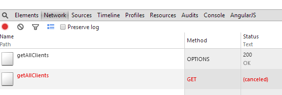
On voit que l'opération [getAllClients] avec la méthode HTTP [OPTIONS] s'est bien passée mais que l'opération [getAllClients] avec la méthode HTTP [GET] a été annulée. La réponse à la demande [OPTIONS] a été la suivante :

Les entêtes HTTP du CORS sont bien là. Examinons maintenant les échanges HTTP lors du GET :

La requête HTTP semble correcte. On voit notamment l'entête d'authentification.
Outre le message d'erreur précédent, on trouve dans les logs console, le message suivant :
[dao] getData[/getAllClients] error réponse : {"data":"","status":0,"config":{"method":"GET","transformRequest":[null],"transformResponse":[null],"timeout":1000,"url":"http://localhost:8080/getAllClients","headers":{"Accept":"application/json, text/plain, */*","Authorization":"Basic YWRtaW46YWRtaW4="}},"statusText":""}
C'est le log que fait systématiquement la méthode [dao.getData] à la réception de la réponse à sa demande HTTP. On peut remarquer deux choses :
- [status=0] : cela veut dire que c'est Angular qui a annulé la requête HTTP ;
- [method=GET] : et c'est la requête GET qui a été annulée ;
Mis bout à bout avec le premier message, cela veut dire que pour la requête GET également, Angular attend ici des entêtes CORS. Or actuellement, notre service web ne les envoie que pour la requête HTTP [OPTIONS]. Il est très étrange de rencontrer cette erreur maintenant et pas pour la liste des médecins. Je n'ai pas d'explications.
Il faut donc modifier de nouveau le service web.
3.7.7.5. Modification du service web – 2
 |
Les méthodes [GET] et [POST] sont traitées dans la classe [RdvMedecinsController]. Nous devons la modifier pour que ces méthodes envoient les entêtes CORS. Nous le faisons de la façon suivante :
@RestController
public class RdvMedecinsController {
@Autowired
private ApplicationModel application;
@Autowired
private RdvMedecinsCorsController rdvMedecinsCorsController;
...
// liste des clients
@RequestMapping(value = "/getAllClients", method = RequestMethod.GET)
public Reponse getAllClients(HttpServletResponse response) {
// entêtes CORS
rdvMedecinsCorsController.getAllClients(response);
// état de l'application
if (messages != null) {
return new Reponse(-1, messages);
}
// liste des clients
try {
return new Reponse(0, application.getAllClients());
} catch (Exception e) {
return new Reponse(1, Static.getErreursForException(e));
}
}
...
- ligne 8 : nous voulons réutiliser le code que nous avons placé dans le contrôleur [RdvMedecinsCorsController]. Aussi injectons-nous celui-ci ici ;
- ligne 14 : la méthode qui traite la demande [GET /getAllClients]. Nous faisons deux modifications :
- ligne 14 : nous injectons l'objet [HttpServletResponse] dans les paramètres de la méthode,
- ligne 16 : nous utilisons les méthodes de la classe [RdvMedecinsCorsController] pour mettre dans cet objet les entêtes CORS ;
3.7.7.6. Tests de l'application – 2
Nous lançons la nouvelle version du service web et redemandons la liste des clients. Nous obtenons la réponse suivante :
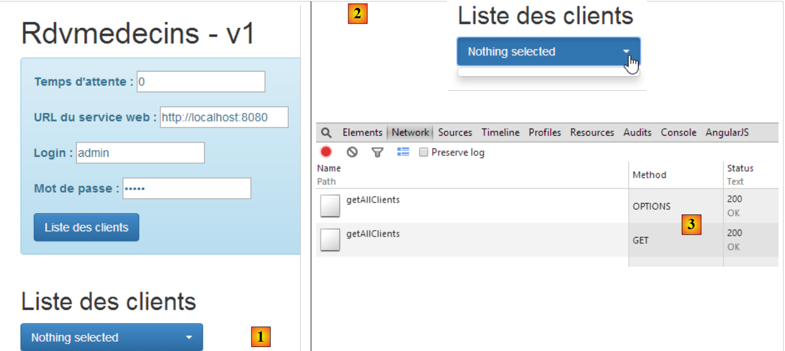 |
- en [1], on a bien une réponse mais elle est vide [2] ;
- en [3] : les échanges réseau se sont bien passés ;
Dans les logs console, la méthode [dao.getData] a affiché la réponse qu'elle a reçue :
[dao] getData[/getAllClients] success réponse : {"data":{"status":0,"data":[{"id":1,"version":1,"titre":"Mr","nom":"MARTIN","prenom":"Jules"},{"id":2,"version":1,"titre":"Mme","nom":"GERMAN","prenom":"Christine"},{"id":3,"version":1,"titre":"Mr","nom":"JACQUARD","prenom":"Jules"},{"id":4,"version":1,"titre":"Melle","nom":"BISTROU","prenom":"Brigitte"}]},"status":200,"config":{"method":"GET","transformRequest":[null],"transformResponse":[null],"timeout":1000,"url":"http://localhost:8080/getAllClients","headers":{"Accept":"application/json, text/plain, */*","Authorization":"Basic YWRtaW46YWRtaW4="}},"statusText":"OK"}
Donc la méthode a bien reçu la liste des clients. Une fois le code vérifié, on en vient à suspecter l'instruction suivante qu'on ne maîtrise pas très bien :
// on style la liste déroulante
$('.selectpicker').selectpicker();
On met la ligne 2 en commentaires et on réessaie. On obtient alors la réponse suivante :
 |
On a donc localisé le problème. C'est l'application de la méthode [selectpicker] à la liste déroulante qui pose problème. Lorsqu'on regarde le code source de la page erronée, on a la chose suivante :
 |
- on découvre qu'en [1], la liste déroulante est bien présente avec ses éléments mais qu'elle n'est pas affichée [style='display:none'] ;
- en [2], on voit le bouton [bootstrap select] affiché. Les éléments de la liste déroulante devraient apparaître dans la liste <ul role='menu'>. Ils n'y sont pas et on a donc une liste vide. Il semble que lorsque la méthode [selectpicker] a été appliquée à la liste déroulante, son contenu était vide à ce moment là ;
En parcourant la toile à la recherche d'une solution, on trouve celle-ci. On remplace le code :
// on style la liste déroulante
$('.selectpicker').selectpicker();
par le suivant :
// on style la liste déroulante
$timeout(function(){
$('.selectpicker').selectpicker();
});
Le style [bootstrap-select] est appliqué au travers d'une fonction [$timeout]. Nous avons déjà rencontré cette fonction qui permet d'exécuter une fonction passé un certain délai. Ici, l'absence de délai vaut un délai nul. Les lignes précédentes mettent un événement dans la liste d'attente des événements du navigateur. Lorsque le traitement de l'événement en cours (clic sur le bouton [Liste des clients]) va être terminé, la vue V va être affichée. Puis aussitôt après, le navigateur va consulter sa liste d'événements. A cause de son délai nul, l'événement [$timeout] va être en tête de liste et traité. Le style [bootstrap-select] est alors appliqué à une liste déroulante remplie. Voyons le résultat :
 |
Si on regarde de nouveau le code source de la page affichée, on a la chose suivante :
 |
Le bouton [bootstrap-select] qui précédemment était vide contient désormais la liste des clients.
3.7.7.7. Utilisation d'une directive
Nous avons rencontré dans le contrôleur C de la vue V, le code suivant :
// on style la liste déroulante
$('.selectpicker').selectpicker();
On manipule un objet du DOM. Nombre de développeurs Angular sont allergiques à la manipulation du DOM dans le code d'un contrôleur. Pour eux, celle-ci doit être faite dans une directive. Une directive Angular peut être vue comme une extension du langage HTML. Il est ainsi possible de créer de nouveaux éléments ou attributs HTML. Voyons un premier exemple :
Nous créons le fichier JS [selectEnable] suivant :
angular.module("rdvmedecins").directive('selectEnable', ['$timeout', function ($timeout) {
return {
link: function (scope, element, attrs) {
$timeout(function () {
var selectpicker = $('.selectpicker');
selectpicker.selectpicker();
});
}
};
}]);
- la directive suit la syntaxe du contrôleur à laquelle nous sommes désormais habitués :
angular.module("rdvmedecins").directive('selectEnable', ['$timeout', function ($timeout)
La directive appartient au module [rvmedecins]. C'est une fonction qui accepte deux paramètres :
- (suite)
- le premier est le nom de la directive [selectEnable] ;
- le second est un tableau ['obj1','obj2',..., function(obj1, obj2,...)] où les [obj] sont les objets à injecter dans la fonction. Ici le seul objet injecté est l'objet prédéfini [$timeout] ;
- la fonction [directive] retourne un objet qui peut avoir divers attributs. Ici le seul attribut est l'attribut [link] (ligne 3). Sa valeur est ici une fonction admettant trois paramètres :
- scope : le modèle de la vue dans laquelle est utilisée la directive ;
- element : l'élément de la vue, objet de la directive ;
- attrs : les attributs de cet élément ;
Prenons un exemple. La directive [selectEnable] pourrait être utilisée dans le contexte suivant :
Ci-dessus, l'attribut [select-enable] applique la directive [selectEnable] à l'élement HTML <div>. Une directive [doSomething] peut être appliquée à n'importe quel élément HTML en lui ajoutant l'attribut [do-something]. On fera attention au changement d'écriture entre le nom de la directive et l'attribut qui lui est associé. On passe d'une écriture [camelCase] à une écriture [camel-case].
La directive [selectEnable] pourrait être également utilisée de la façon suivante :
Ici la directive [doSomething] est appliquée sous la forme d'une balise HTML <do-something>.
Revenons à l'écriture
et aux trois paramètres de la fonction [link] de la directive, [scope, element, attrs] :
- scope : est le modèle de la vue dans laquelle se trouve la <div> ;
- element : est la <div> elle-même ;
- attrs : est le tableau des attributs de la <div>. Ceux-ci peuvent être utilisés pour transmettre de l'information à la directive. Ci-dessus, on écrira attrs['selectEnable'] pour avoir l'information [data]. On notera bien le changement d'écriture [selectEnable] pour désigner l'attribut [select-enable] ;
Revenons au code de la directive :
angular.module("rdvmedecins").directive('selectEnable', ['$timeout', function ($timeout) {
return {
link: function (scope, element, attrs) {
$timeout(function () {
$('.selectpicker').selectpicker();
});
}
};
}]);
- lignes 14-16 : on retrouve le code que nous avions placé auparavant dans le contrôleur. Celui-ci est exécuté lors de la rencontre de la directive [select-enable] (sous forme d'élément ou d'attribut) lors de l'affichage de la vue V.
Pour mettre en oeuvre cette directive, nous copions le fichier [app-17.html] dans [app-17B.html] et le modifions de la façon suivante :
<select data-style="btn-primary" class="selectpicker" select-enable="">
<option ng-repeat="client in clients.data" value="{{client.id}}">
{{client.titre}} {{client.prenom}} {{client.nom}}
</option>
</select>
- ligne 1 : on applique la directive [selectEnable] à l'élément HTML [select]. Comme il n'y a pas d'informations à passer à la directive, nous écrivons simplement [select-enable=""] ;
Nous modifions également le contrôleur en dupliquant le fichier JS [rdvmedecins-05.js] dans [rdvmedecins-05B.js] et nous référençons le nouveau fichier JS dans le fichier [app-17B.html] et le fichier [selectEnable.js] de directive. Il ne faut pas oublier ce dernier point. Si le fichier de la directive est absent, l'attribut [select-enable=""] ne sera pas géré mais Angular ne signalera aucune erreur.
<script type="text/javascript" src="rdvmedecins-05B.js"></script>
<script type="text/javascript" src="selectEnable.js"></script>
Dans le fichier JS [rdvmedecins-05B.js], nous supprimons du contrôleur, les lignes suivantes :
// on style la liste déroulante
$timeout(function(){
$('.selectpicker').selectpicker();
});
cette opération étant désormais faite par la directive.
3.7.7.8. Tests de l'application – 3
Lorsqu'on teste la nouvelle application [app-17B.html], on obtient le résultat suivant :
 |
- en [1], on obtient une liste vide.
Les logs console affichent la chose suivante :
- ligne 1 : initialisation du service [dao] ;
- ligne 2 : à l'affichage initial de la vue V, la directive [selectEnable] est exécutée ;
- ligne 3 : cette ligne apparaît lorsque l'utilisateur clique sur le bouton [Liste des clients]. On constate alors que la directive [selectEnable] n'est pas exécutée une seconde fois. Au final, elle a été exécutée lorsque la liste des clients était vide et on a donc une liste déroulante vide ;
$('.selectpicker').selectpicker();
ne s'est pas déroulée au bon moment. On peut essayer de résoudre le problème de diverses façons. Au bout de nombreux tests infructueux, on se rend compte que l'opération ci-dessus, ne doit se dérouler qu'une fois et uniquement lorsque la liste déroulante a été remplie. Pour obtenir ce résultat, on réécrit la balise <select> de la façon suivante :
<select data-style="btn-primary" class="selectpicker" select-enable="" ng-if="clients.data">
<option ng-repeat="client in clients.data" value="{{client.id}}">
{{client.titre}} {{client.prenom}} {{client.nom}}
</option>
</select>
Ligne 1, la balise <select> n'est générée que si [clients.data] existe. Ce n'est pas le cas lors de l'affichage initial de la vue V. La balise <select> ne sera donc pas générée et la directive [selectEnable] pas évaluée. Lorsque l'utilisateur va cliquer sur le bouton [Liste des clients], [clients.data] aura une nouvelle valeur dans le modèle M. Parce que le modèle M a changé, la balise <select> va être réévaluée et ici générée. La directive [selectEnable] va donc être évaluée également. Lorsqu'elle est évaluée, les lignes 2-4 de la balise <select> n'ont pas encore été évaluées. On a donc une liste de clients vide. Si on écrit la directive [selectEnable] de la façon suivante :
angular.module("rdvmedecins").directive('selectEnable', ['$timeout', 'utils', function ($timeout, utils) {
return {
link: function (scope, element, attrs) {
utils.debug("directive selectEnable");
$('.selectpicker').selectpicker();
}
}
}]);
la ligne 5 va être exécutée avec une liste vide et on aura alors une liste déroulante vide à l'affichage. Il faut alors écrire :
angular.module("rdvmedecins").directive('selectEnable', ['$timeout', 'utils', function ($timeout, utils) {
return {
link: function (scope, element, attrs) {
utils.debug("directive selectEnable");
$timeout(function () {
$('.selectpicker').selectpicker();
})
}
}
}]);
pour avoir le résultat attendu. A cause du [$timeout] de la ligne 5, la ligne 6 ne sera exécutée qu'après évaluation complète de la vue V, donc à un moment ou la balise <select> aura tous ses éléments.
3.7.8. Exemple 8 : l'agenda d'un médecin
Nous présentons maintenant une application qui affiche l'agenda d'un médecin.
3.7.8.1. La vue V de l'application
Nous présenterons le formulaire suivant :
 |
- en [1], on demande l'agenda de Mme PELISSIER [2], le 25 juin 2014 [3] ;
On obtient le résultat [4] suivant :
 |
Nous allons étudier les deux vues séparément.
3.7.8.2. Le formulaire
Nous dupliquons le fichier [app-17.html] dans [app-18.html] puis nous modifions le code de la façon suivante :
<div class="container">
<h1>Rdvmedecins - v1</h1>
<!-- le message d'attente -->
<div class="alert alert-warning" ng-show="waiting.visible">
...
</div>
<!-- la demande -->
<div class="alert alert-info" ng-hide="waiting.visible">
<div class="row" style="margin-bottom: 20px">
<div class="col-md-3">
<h2 translate="{{medecins.title}}"></h2>
<select data-style="btn-primary" class="selectpicker">
<option ng-repeat="medecin in medecins.data" value="{{medecin.id}}">
{{medecin.titre}} {{medecin.prenom}} {{medecin.nom}}
</option>
</select>
</div>
<div class="col-md-3">
<h2 translate="{{calendar.title}}"></h2>
<div style="display:inline-block; min-height:290px;">
<datepicker ng-model="calendar.jour" min-date="calendar.minDate" show-weeks="true"
class="well well-sm"></datepicker>
</div>
</div>
</div>
<button class="btn btn-primary" ng-click="execute()">{{agenda.title|translate}}</button>
</div>
<!-- la liste d'erreurs -->
<div class="alert alert-danger" ng-show="errors.show">
...
</div>
<!-- l'agenda -->
<div id="agenda" ng-show="agenda.show">
...
</div>
</div>
...
<script type="text/javascript" src="rdvmedecins-06.js"></script>
- lignes 5-7 : le message d'attente ne change pas ;
- lignes 12-19 : la liste des médecins de type [bootstrap select] ;
- lignes 20-26 : le calendrier de [ui-bootstrap] que nous avons déjà présenté. On notera que le jour sélectionné est placé dans le modèle [calendar.jour] (attribut ng-model) ;
- ligne 28 : le bouton qui demande l'agenda ;
- lignes 32-34 : la liste des erreurs ne change pas ;
- lignes 37-39 : l'agenda que nous présenterons ultérieurement ;
- ligne 42 : le code JS est transféré dans le fichier [rdvmedecins-06.js] par recopie du fichier [rdvmedecins-05.js] ;
3.7.8.3. Le contrôleur C
Le code JS de l'application devient le suivant :

Seuls le service [utils] et le contrôleur [rdvMedecinsCtrl] vont être impactés par les modifications.
Le contrôleur [rdvMedecinsCtrl] devient le suivant :
// contrôleur
angular.module("rdvmedecins")
.controller('rdvMedecinsCtrl', ['$scope', 'utils', 'config', 'dao', '$translate', '$timeout', '$filter', '$locale',
function ($scope, utils, config, dao, $translate, $timeout, $filter, $locale) {
// ------------------- initialisation modèle
// modèle
$scope.waiting = {text: config.msgWaiting, visible: false, cancel: cancel, time: 3000};
$scope.server = {url: 'http://localhost:8080', login: 'admin', password: 'admin'};
$scope.errors = {show: false, model: {}};
$scope.medecins = {
data: [
{id: 1, version: 1, titre: "Mme", nom: "PELISSIER", prenom: "Marie"},
{id: 2, version: 1, titre: "Mr", nom: "BROMARD", prenom: "Jacques"},
{id: 3, version: 1, titre: "Mr", nom: "JANDOT", prenom: "Philippe"},
{id: 4, version: 1, titre: "Melle", nom: "JACQUEMOT", prenom: "Justine"}
],
title: config.listMedecins};
$scope.agenda = {title: config.getAgendaTitle, data: undefined, show: false};
$scope.calendar = {title: config.getCalendarTitle, minDate: new Date(), jour: new Date()};
// on style la liste déroulante
$timeout(function () {
$('.selectpicker').selectpicker();
});
// locale française pour le calendrier
angular.copy(config.locales['fr'], $locale);
...
}
])
;
- ligne 7 : on fixe un temps d'attente de 3 secondes avant de faire l'appel HTTP ;
- ligne 8 : on fixe en dur les éléments nécessaires à la connexion HTTP ;
- lignes 10-17 : la liste des médecins est définie en dur ;
- ligne 18 : le modèle [agenda] configure l'affichage de l'agenda dans la vue ;
- ligne 19 : le modèle [calendar] configure l'affichage du calendrier dans la vue. On fixe une date minimale [minDate] à aujourd'hui et la date du jour également à aujourd'hui ;
- lignes 21-23 : la liste déroulante est stylée avec la méthode vue précédemment ;
- ligne 25 : on met la locale de l'application à 'fr'. Par défaut, elle est à 'en' ;
La méthode exécutée lors de la demande de l'agenda est la suivante :
// exécution action
$scope.execute = function () {
// les infos du formulaire
var idMedecin = $('.selectpicker').selectpicker('val');
// vérification
utils.debug("[homeCtrl] idMedecin", idMedecin);
utils.debug("[homeCtrl] jour", $scope.calendar.jour);
// on met le jour au format yyyy-MM-dd
var formattedJour = $filter('date')($scope.calendar.jour, 'yyyy-MM-dd');
// mise à jour de la vue
$scope.waiting.visible = true;
$scope.errors.show = false;
$scope.agenda.show = false;
...
};
- ligne 4 : on récupère l'attribut [value] du médecin sélectionné. On utilise ici de nouveau la méthode [selectpicker] qui provient du fichier [bootstrap-select.min.js]. Il faut se souvenir de la forme des options de la liste déroulante :
<option ng-repeat="medecin in medecins.data" value="{{medecin.id}}">
{{medecin.titre}} {{medecin.prenom}} {{medecin.nom}}
La valeur (attribut value) de l'option est donc l'identifiant [id] du médecin.
- ligne 11 : on met le jour choisi par l'utilisateur au format [aaaa-mm-jj] qui est le format de date attendu par le serveur web ;
- lignes 13-15 : lorsque la méthode [execute] sera terminée, le bandeau d'attente sera affiché et tout le reste caché ;
Le code se poursuit de la façon suivante :
// attente simulée
var task = utils.waitForSomeTime($scope.waiting.time);
// on demande l'agenda du médecin
var promise = task.promise.then(function () {
// le chemin de l'URL de service
var path = config.urlSvrAgenda + "/" + idMedecin + "/" + formattedJour;
// on demande l'agenda
task = dao.getData($scope.server.url, $scope.server.login, $scope.server.password, path);
// on retourne la promesse d'achèvement de la tâche
return task.promise;
});
// on analyse le résultat de l'appel au service [dao]
promise.then(function (result) {
// fin d'attente
$scope.waiting.visible = false;
// erreur ?
if (result.err == 0) {
// on prépare le modèle de l'agenda
$scope.agenda.data = result.data;
$scope.agenda.show = true;
// mise en forme de l'affichage des horaires
angular.forEach($scope.agenda.data.creneauxMedecin, function (creneauMedecin) {
creneauMedecin.creneau.text = utils.getTextForCreneau(creneauMedecin.creneau);
});
// on crée un evt pour styler la table après l'affichage de la vue
$timeout(function () {
$("#creneaux").footable();
});
} else {
// il y a eu des erreurs pour obtenir l'agenda
$scope.errors = {
title: config.getAgendaErrors,
messages: utils.getErrors(result),
show: true
};
}
- ligne 2 : la tâche asynchrone d'attente de 3 secondes ;
- lignes 5-10 : le code qui sera exécuté lorsque cette attente sera terminée ;
- ligne 6 : on construit l'URL interrogée [/getAgendaMedecinJour/1/2014-06-25] ;
- ligne 8 : l'URL est interrogée. Une tâche asynchrone démarre ;
- ligne 10 : on rend la promesse de cette tâche asynchrone ;
- lignes 14-38 : le code qui sera exécuté lorsque l'appel HTTP aura renvoyé sa réponse ;
- ligne 13 : [result] est la réponse envoyée par la méthode [dao.getData]. Il faut ici se souvenir de la forme de la réponse du serveur web :
 |
Le paramètre [result.data] de la ligne 19 est l'attribut [data] [1] ci-dessus. Cet attribut contient à son tour l'attribut [creneauxMedecin] [2] ci-dessus. Celui-ci est un tableau de créneaux avec pour chacun d'eux les deux informations :
- [rv] : la forme JSON d'un rendez-vous ou [null] s'il n'y a pas de rendez-vous pris sur ce créneau ;
- [hDeb, mDeb, hFin, mFin] : les informations horaires du créneau ;
Revenons au code du contrôleur :
- ligne 15 : l'attente est terminée ;
- ligne 19 : on renseigne le modèle [$scope.agenda] qui contrôle l'affichage de l'agenda ;
- ligne 20 : l'agenda est rendu visible ;
- lignes 22-24 : on passe en revue chacun des éléments C du tableau [creneauxMedecin] dont nous venons de parler ;
- ligne 23 : chaque élément C a un attribut [creneau] qui est le créneau horaire. Celui-ci est enrichi d'un attribut [text] qui sera la représentation texte du créneau horaire sous la forme [10h20:10h40] ;
- lignes 26-28 : on rend 'responsive' la table HTML utilisée pour afficher les créneaux de l'agenda. Nous avons vu cette notion au paragraphe 3.6.7 ;
 |
- ligne 27 : pour rendre la table 'responsive', il faut lui appliquer la méthode [footable]. On retrouve ici la même difficulté que celle rencontrée pour le composant [bootstrap-select]. Si on écrit simplement la ligne 17, on constate que la table n'est pas 'responsive'. On résoud ce problème de la même façon avec la fonction [$timeout] (ligne 26) ;
- lignes 31-34 : le cas où l'appel HTTP a échoué. On affiche alors les messages d'erreur ;
3.7.8.4. Affichage de l'agenda
Nous revenons maintenant au code de l'agenda dans le fichier [app-18.html]. C'est le suivant :
<!-- l'agenda -->
<div id="agenda" ng-show="agenda.show">
<!-- cas du médecin sans créneaux de consultation -->
<h4 class="alert alert-danger" ng-if="agenda.data.creneauxMedecin.length==0"
translate="agenda_medecinsanscreneaux"></h4>
<!-- agenda du médecin -->
<div class="row tab-content alert alert-warning" ng-if="agenda.data.creneauxMedecin.length!=0">
<div class="tab-pane active col-md-6">
<table creneaux-table id="creneaux" class="table">
<thead>
<tr>
<th data-toggle="true">
<span translate="agenda_creneauhoraire"></span>
</th>
<th>
<span translate="agenda_client">Client</span>
</th>
<th data-hide="phone">
<span translate="agenda_action">Action</span>
</th>
</tr>
</thead>
<tbody>
<tr ng-repeat="creneauMedecin in agenda.data.creneauxMedecin">
<td>
<span
ng-class="! creneauMedecin.rv ? 'status-metro status-active' : 'status-metro status-suspended'">
{{creneauMedecin.creneau.text}}
</span>
</td>
<td>
<span>{{creneauMedecin.rv.client.titre}} {{creneauMedecin.rv.client.prenom}} {{creneauMedecin.rv.client.nom}}</span>
</td>
<td>
<a href="" ng-if="!creneauMedecin.rv" translate="agenda_reserver" class="status-metro status-active">
</a>
<a href="" ng-if="creneauMedecin.rv" translate="agenda_supprimer" class="status-metro status-suspended">
</a>
</td>
</tr>
</tbody>
</table>
</div>
</div>
</div>
- lignes 4-5 : on se rappelle que [agenda.data] est l'agenda, que [agenda.data.creneauxMedecin] est un tableau d'objets de type [creneauMedecin]. Chaque élément de ce dernier type a un attribut [creneauMedecin.creneau] qui est un créneau horaire. Chaque créneau horaire a deux éléments qui nous intéressent :
- [creneauMedecin.creneau.rv] qui est l'éventuel RV (rv!=null) pris sur le créneau ;
- [creneauMedecin.creneau.text] qui est le texte [début:fin] du créneau horaire ;
- ligne 4 : affiche un message spécial si le médecin n'a pas de créneaux horaires. C'est improbable mais il se trouve que notre base de données est incomplète et ce cas existe. La génération HTML ou non du message est contrôlée par la directive [ng-if] ;

La directive [ng-if] est différente des directives [ng-show, ng-hide]. Ces dernières se contentent de cacher une zone présente dans le document. Si [ng-if='false'], alors la zone est enlevée du document. On l'a utilisée ici pour illustration ;
- ligne 9 : l'attribut [id='creneaux'] est important. C'est lui qui est utilisé dans l'instruction :
$("#creneaux").footable();
- lignes 10-22 : affichent les entêtes du tableau [1] ;
- lignes 23-45 : affichent le contenu du tableau [2] ;
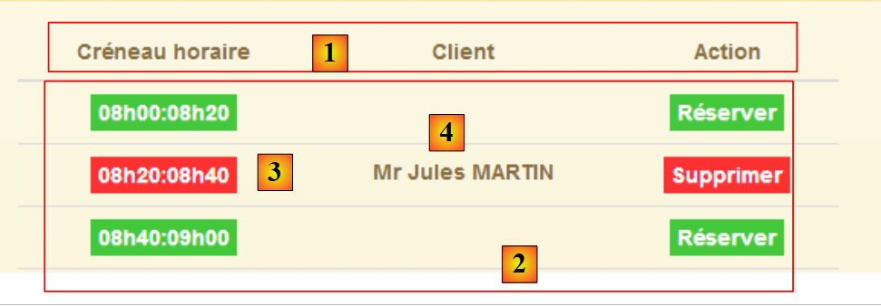 |
- ligne 24 : on parcourt le tableau [agenda.data.creneauxMedecin] ;
- lignes 26-29 : on écrit le texte [3]. On utilise la directive [ng-class] qui va générer l'attribut [class] de l'élément. Ici, si on a [creneauMedecin.rv==null], cela veut dire que le créneau est libre et on met un fond vert au texte. Sinon, on met un fond rouge ;
- ligne 32 : on écrit le nom du client pour qui a été pris le RV [4]. Si [rv==null], ces informations n'existent pas mais Angular gère correctement ce cas et ne déclare pas d'erreur ;
- lignes 34-39 : affichent l'un des deux boutons [Réserver] ou [Supprimer]. C'est l'existence ou non d'un rendez-vous qui fait que l'on choisit l'un ou l'autre des boutons ;
3.7.8.5. Modification du serveur web
Comme pour les exemples précdents, le serveur web doit être modifié pour que l'URL [/getAgendaMedecinJour] envoie les entêtes CORS :
|
Dans la classe [RdvMedecinsCorsController] on ajoute ue nouvelle méthode :
// agenda du médecin
@RequestMapping(value = "/getAgendaMedecinJour/{idMedecin}/{jour}", method = RequestMethod.OPTIONS)
public void getAgendaMedecinJour(HttpServletResponse response) {
sendOptions(response);
}
Cette méthode va envoyer les entêtes CORS pour la requête HTTP [OPTIONS]. On doit faire la même chose pour la requête HTTP [GET] dans la classe [RdvMedecinsController] :
@RequestMapping(value = "/getAgendaMedecinJour/{idMedecin}/{jour}", method = RequestMethod.GET)
public Reponse getAgendaMedecinJour(@PathVariable("idMedecin") long idMedecin, @PathVariable("jour") String jour, HttpServletResponse response) {
// entêtes CORS
rdvMedecinsCorsController.getAgendaMedecinJour(response);
...
}
3.7.8.6. Utilisation de directives
Comme il a été fait précédemment, nous allons déporter la manipulation du DOM dans des directives. Nous avons deux manipulations de DOM :
- lors de l'affichage initial de la vue :
// on style la liste déroulante
$timeout(function () {
$('.selectpicker').selectpicker();
});
- lors de l'affichage de l'agenda :
// on crée un evt pour styler la table après l'affichage de la vue
$timeout(function () {
$("#creneaux").footable();
});
Pour le 1er cas, nous allons utiliser la directive [selectEnable] déjà présentée. Pour le second cas, nous créons la directive [footable] dans le fichier JS [footable.js] suivant :
angular.module("rdvmedecins").directive('footable', ['$timeout', 'utils', function ($timeout, utils) {
return {
link: function (scope, element, attrs) {
utils.debug("directive footable");
$timeout(function () {
$("#creneaux").footable();
})
}
}
}]);
On utilise donc la même technique que pour la directive [selectEnable].
Le code HTML [app-18.html] est dupliqué dans [app-18B.html]. Puis on le fait évoluer de la façon suivante :
<select data-style="btn-primary" class="selectpicker" select-enable="">
<option ng-repeat="medecin in medecins.data" value="{{medecin.id}}">
{{medecin.titre}} {{medecin.prenom}} {{medecin.nom}}
</option>
</select>
- ligne 1 : on applique la directive [selectEnable] (via l'attribut [select-enable]) à la balise <select> des médecins ;
<div class="row tab-content alert alert-warning" ng-if="agenda.data.creneauxMedecin.length!=0">
<div class="tab-pane active col-md-6">
<table id="creneaux" class="table" footable="">
<thead>
<tr>
- ligne 3 : on applique la directive [footable] (via l'attribut [footable]) à la table HTML de l'agenda ;
<script type="text/javascript" src="rdvmedecins-06B.js"></script>
<!-- directives -->
<script type="text/javascript" src="selectEnable.js"></script>
<script type="text/javascript" src="footable.js"></script>
- lignes 3-4 : on référence les fichiers JS des deux directives ;
- ligne 1 : le code JS de [app-18B.html] est le code JS de [app-18.html] dupliqué dans le fichier [rdvmedecins-06B.js] ;
Le fichier [rdvmedecins-06B.js] est identique au fichier [rdvmedecins-06.js] à deux détails près. Les lignes manipulant le DOM disparaissent :
// on style la liste déroulante
$timeout(function () {
$('.selectpicker').selectpicker();
});
// on crée un evt pour styler la table après l'affichage de la vue
$timeout(function () {
$("#creneaux").footable();
});
Cei fait, l'exécution de l'application [app-18B.html] donne les mêmes résultats que celle de [app-18.html].
3.7.9. Exemple 9 : créer et annuler des réservations
Nous présentons maintenant une application qui permet de créer et d'annuler des réservations.
3.7.9.1. La vue V de l'application
Nous présenterons le formulaire suivant :
 |
- en [1], on pourra réserver. La réservation qui sera faite le sera pour un client aléatoire ;
- en [2], on pourra supprimer les réservations que nous aurons faites ;
Nous dupliquons le fichier [app-18.html] dans [app-19.html] puis nous modifions le code de la façon suivante :
<div class="container">
<h1>Rdvmedecins - v1</h1>
<!-- le message d'attente -->
<div class="alert alert-warning" ng-show="waiting.visible">
...
</div>
<!-- la liste d'erreurs -->
<div class="alert alert-danger" ng-show="errors.show">
...
</div>
<!-- l'agenda -->
<div id="agenda" ng-show="agenda.show">
..
<!-- agenda du médecin -->
<div class="row tab-content alert alert-warning" ng-if="agenda.data.creneauxMedecin.length!=0">
<div class="tab-pane active col-md-6">
<table id="creneaux" class="table" footable="">
...
<tbody>
<tr ng-repeat="creneauMedecin in agenda.data.creneauxMedecin">
...
<td>
<a href="" ng-if="!creneauMedecin.rv" translate="agenda_reserver" class="status-metro status-active" ng-click="reserver(creneauMedecin.creneau.id)">
</a>
<a href="" ng-if="creneauMedecin.rv" translate="agenda_supprimer" class="status-metro status-suspended" ng-click="supprimer(creneauMedecin.rv.id)">
</a>
</td>
</tr>
</tbody>
</table>
</div>
</div>
</div>
</div>
....
<script type="text/javascript" src="rdvmedecins-07.js"></script>
<script type="text/javascript" src="footable.js"></script>
- lignes 5-7 : le message d'attente est celui de la version précédente ;
- lignes 10-12 : le message d'erreurs est celui de la version précédente ;
- lignes 15-36 : l'agenda est celui de la version précédente à deux détails près :
- ligne 26 : le clic sur le bouton [réserver] (attribut ng-click) est géré par la méthode [reserver] du modèle M de la vue V. On lui passe le n° du créneau horaire de réservation ;
- ligne 26 : le clic sur le bouton [supprimer] est géré par la méthode [reserver] du modèle M de la vue V. On lui passe le n° du rendez-vous à supprimer ;
- ligne 39 : le code JS qui gère l'application est dans le fichier [rdvmedecins-07.js] ;
- ligne 40 : le code JS de la directive [footable] appliquée ligne 20 ;
3.7.9.2. Le contrôleur C
Le code JS de [rdvmedecins-07.js] est d'abord obtenu par recopie du fichier [rdvmedecins-06.js]. Puis il est modifié. On a toujours les grands blocs de code habituels. Les modifications se font essentiellement dans le contrôleur :

Nous allons décrire le contrôleur C de la vue V en plusieurs étapes.
3.7.9.3. Initialisation du contrôleur C
Le code d'initialisation du contrôleur est le suivant :
angular.module("rdvmedecins")
.controller('rdvMedecinsCtrl', ['$scope', 'utils', 'config', 'dao', '$translate', '$timeout', '$filter', '$locale',
function ($scope, utils, config, dao, $translate, $timeout, $filter, $locale) {
// ------------------- initialisation modèle
// modèle
$scope.waiting = {text: config.msgWaiting, visible: false, cancel: cancel, time: 3000};
$scope.server = {url: 'http://localhost:8080', login: 'admin', password: 'admin'};
$scope.errors = {show: false, model: {}};
$scope.medecins = {
data: [
{id: 1, version: 1, titre: "Mme", nom: "PELISSIER", prenom: "Marie"},
{id: 2, version: 1, titre: "Mr", nom: "BROMARD", prenom: "Jacques"},
{id: 3, version: 1, titre: "Mr", nom: "JANDOT", prenom: "Philippe"},
{id: 4, version: 1, titre: "Melle", nom: "JACQUEMOT", prenom: "Justine"}
],
title: config.listMedecins
};
var médecin = $scope.medecins.data[0];
var clients = [
{id: 1, version: 1, titre: "Mr", nom: "MARTIN", prenom: "Jules"},
{id: 2, version: 1, titre: "Mme", nom: "GERMAN", prenom: "Christine"},
{id: 3, version: 1, titre: "Mr", nom: "JACQUARD", prenom: "Maurice"},
{id: 4, version: 1, titre: "Melle", nom: "BISTROU", prenom: "Brigitte"}
];
// locale française pour la date
angular.copy(config.locales['fr'], $locale);
var today = new Date();
var formattedDay = $filter('date')(today, 'yyyy-MM-dd');
var fullDay = $filter('date')(today, 'fullDate');
$scope.agenda = {title: config.agendaTitle, data: undefined, show: false, model: {titre: médecin.titre, prenom: médecin.prenom, nom: médecin.nom, jour: fullDay}};
// ---------------------------------------------------------------- agenda initial
// la tâche asynchrone globale
var task;
// on demande l'agenda
getAgenda();
// ------------------------------------------------------------------ réservation
$scope.reserver = function (creneauId) {
....
};
// ------------------------------------------------------------ suppression RV
$scope.supprimer = function (idRv) {
...
};
// obtention de l'agenda
function getAgenda() {
...
}
// annulation attente
function cancel() {
...
}
} ]);
- ligne 6 : configuration du message d'attente. Par défaut, on attendra 3 secondes avant de faire un appel HTTP ;
- ligne 7 : les informations nécessaires aux appels HTTP ;
- ligne 8 : configuration du message d'erreurs ;
- lignes 9-17 : les médecins en dur ;
- ligne 18 : un médecin particulier. C'est pour ses créneaux qu'on fera des réservations ;
- lignes 19-24 : les clients en dur ;
- ligne 26 : on veut manipuler des dates françaises ;
- ligne 27 : les rendez-vous seront pris à la date d'aujourd'hui ;
- ligne 28 : le service web de réservation attend des dates au format 'aaaa-mm-jj' ;
- ligne 29 : la date d'aujourd'hui sous la forme [jeudi 26 juin 2014] ;
- ligne 30 : configuration de l'agenda. L'attribut [model] transporte les paramètres du message internationalisé qui va être affiché :
agenda_title: "Agenda de {{titre}} {{prenom}} {{nom}} le {{jour}}"
- ligne 35 : la variable globale [task] représente à un moment donné la tâche asynchrone en cours d'exécution ;
- ligne 37 : on demande l'agenda initial ;
C'est tout ce qui est fait lors du chargement initial de la page. Si tout se passe bien, la vue affiche l'agenda du jour de Mme PELISSIER.
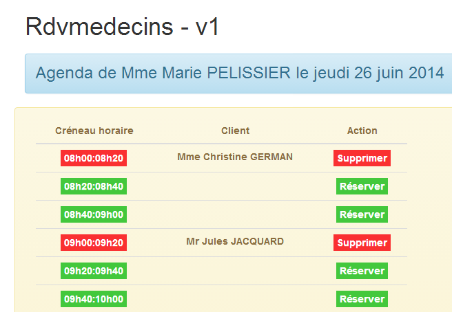
3.7.9.4. Obtention de l'agenda
L'agenda est obtenu avec la méthode [getAgenda] suivante :
// obtention de l'agenda
function getAgenda() {
// le chemin de l'URL de service
var path = config.urlSvrAgenda + "/" + médecin.id + "/" + formattedDay;
// on demande l'agenda
task = dao.getData($scope.server.url, $scope.server.login, $scope.server.password, path);
// msg d'attente
$scope.waiting.visible = true;
// on analyse le résultat de l'appel au service [dao]
task.promise.then(function (result) {
// fin d'attente
$scope.waiting.visible = false;
// erreur ?
if (result.err == 0) {
// on prépare le modèle de l'agenda
$scope.agenda.data = result.data;
$scope.agenda.show = true;
// mise en forme de l'affichage des horaires
angular.forEach($scope.agenda.data.creneauxMedecin, function (creneauMedecin) {
creneauMedecin.creneau.text = utils.getTextForCreneau(creneauMedecin.creneau);
});
} else {
// il y a eu des erreurs pour obtenir l'agenda
$scope.errors = {title: config.getAgendaErrors, messages: utils.getErrors(result), show: true};
}
});
}
Ce code est celui étudié dans l'application précédente. Il y a deux changements :
- il n'y a pas d'attente simulée avant l'appel HTTP ;
- ligne 4 : on utilise le médecin créé lors de l'initialisation du contrôleur ainsi que le jour formaté qui a été construit ;
Ce code a été isolé dans une fonction car il est également utilisé par les fonctions [reserver] et [supprimer].
3.7.9.5. Réservation d'un créneau horaire
 |  |
On rappelle que les clients sont choisis de façon aléatoire.
Le code réservation est le suivant :
$scope.reserver = function (creneauId) {
utils.debug("réservation du créneau", creneauId);
// on crée un RV avec un client aléatoire dans le créneau identifié par [id]
var idClient = clients[Math.floor(Math.random() * clients.length)].id;
utils.debug("réservation du créneau pour le client", idClient);
// attente simulée
$scope.waiting.visible = true;
var task = utils.waitForSomeTime($scope.waiting.time);
// on ajoute le créneau
var promise = task.promise.then(function () {
// le chemin de l'URL de service
var path = config.urlSvrResaAdd;
// les données à transmettre au service
var post = {jour: formattedDay, idCreneau: creneauId, idClient: idClient};
// on lance la tâche asynchrone
task = dao.getData($scope.server.url, $scope.server.login, $scope.server.password, path, post);
// on retourne la promesse d'achèvement de la tâche
return task.promise;
});
// analyse du résultat de la tâche
promise = promise.then(function (result) {
if (result.err != 0) {
// il y a eu des erreurs pour valider le rv
$scope.errors = {title: config.postResaErrors, messages: utils.getErrors(result, $filter), show: true};
} else {
// on demande le nouvel agenda
getAgenda();
}
});
};
- ligne 1 : on rappelle que le paramètre de la fonction [reserver] est le n° du créneau (attribut id) ;
- ligne 4 : un client est choisi de façon aléatoire dans la liste des clients définie en dur dans le code d'initialisation. On retient de lui son identifiant [id] ;
- lignes 7-8 : l'attente de 3 secondes ;
- lignes 11-18 : ces lignes ne sont exécutées qu'à la fin des 3 secondes ;
- ligne 12 : l'URL du service de réservation [/ajouterRv]. Cette URL est particulière vis à vis de celles qu'on a rencontrées jusqu'à maintenant. Elle est définie comme suit dans le service web :
@RequestMapping(value = "/ajouterRv", method = RequestMethod.POST, consumes = "application/json; charset=UTF-8")
public Reponse ajouterRv(@RequestBody PostAjouterRv post, HttpServletResponse response) {
- (suite)
- ligne 1 : l'URL n'a pas de paramètres et elle est demandée avec un POST ;
- ligne 2 : les paramètres postés le sont sous la forme d'un objet JSON. Celui-ci sera désérialisé dans le paramètre [post] (@RequestBody) ;
Nous avons vu un exemple de ce POST( paragraphe 2.12.2) :
 |
- en [0], l'URL du service web ;
- en [1], la méthode POST est utilisée ;
- en [2], le texte JSON des informations transmises au service web sous la forme {jour, idClient, idCreneau} ;
- en [3], le client précise au service web qu'il lui envoie des informations JSON ;
Revenons au code JS de la fonction [reserver] :
- ligne 14 : on crée la valeur à poster sous la forme d'un objet JS. Angular le sérialisera en JSON lorsqu'il sera posté ;
- ligne 16 : l'appel HTTP est fait. La valeur à poster est le dernier paramètre de la fonction [dao.getData]. Lorsque ce paramètre est présent, fonction [dao.getData] fait un POST au lieu d'un GET (revoir le code paragraphe 3.7.6.4) ;
- ligne 18 : on retourne la promesse de l'appel HTTP ;
- lignes 23-29 : ne sont exécutées que lorsque l'appel HTTP a rendu sa réponse ;
- ligne 23 : le paramètre [result] est de la forme [err,data] ou [err,messages] où [err] est un code d'erreur ;
- lignes 23-26 : s'il y a eu des erreurs, on rend visible le message d'erreur ;
- ligne 28 : si la réservation s'est bien passée, on réaffiche le nouvel agenda ;
3.7.9.6. Modification serveur
 |
Dans la classe [RdvMedecinsCorsController], nous ajoutons la méthode suivante :
// envoi des options au client
private void sendOptions(HttpServletResponse response) {
if (application.isCORSneeded()) {
// on fixe le header CORS
response.addHeader("Access-Control-Allow-Origin", "*");
// on autorise le header [authorization]
response.addHeader("Access-Control-Allow-Headers", "authorization");
}
@RequestMapping(value = "/ajouterRv", method = RequestMethod.OPTIONS)
public void ajouterRv(HttpServletResponse response) {
sendOptions(response);
}
L'ajout est fait lignes 10-13. Les entêtes des lignes 2-8 seront envoyés pour l'URL [/ajouterRv] (ligne 10) et la méthode HTTP [OPTIONS] (ligne 10).
La classe [RdvMedecinsController] est elle modifiée de la façon suivante :
@RequestMapping(value = "/ajouterRv", method = RequestMethod.POST, consumes = "application/json; charset=UTF-8")
public Reponse ajouterRv(@RequestBody PostAjouterRv post, HttpServletResponse response) {
// entêtes CORS
rdvMedecinsCorsController.ajouterRv(response);
...
Pour la méthode [POST] (ligne 1) et l'URL [/ajouterRv] (ligne 1), la méthode que nous venons d'ajouter dans [RdvMedecinsCorsController] est appelée (ligne 4), renvoyant donc les mêmes entêtes HTTP que pour la méthode HTTP [OPTIONS].
3.7.9.7. Tests
Faisons un premier test où nous réservons un créneau quelconque :
 |
Comme toujours dans ces cas là, il faut regarder les logs de la console :
[dao] getData[/ajouterRv] error réponse : {"data":"","status":0,"config":{"method":"POST","transformRequest":[null],"transformResponse":[null],"timeout":1000,"url":"http://localhost:8080/ajouterRv","data":{"jour":"2014-06-30","idCreneau":1,"idClient":4},"headers":{"Accept":"application/json, text/plain, */*","Authorization":"Basic YWRtaW46YWRtaW4=","Content-Type":"application/json;charset=utf-8"}},"statusText":""}
La méthode [dao.getData] a échoué avec [status=0], ce qui signifie que c'est Angular qui a annulé la requête. On a la cause de l'erreur dans les logs :
XMLHttpRequest cannot load http://localhost:8080/ajouterRv. Request header field Content-Type is not allowed by Access-Control-Allow-Headers.
Si on regarde les échanges réseau, on a la chose suivante :
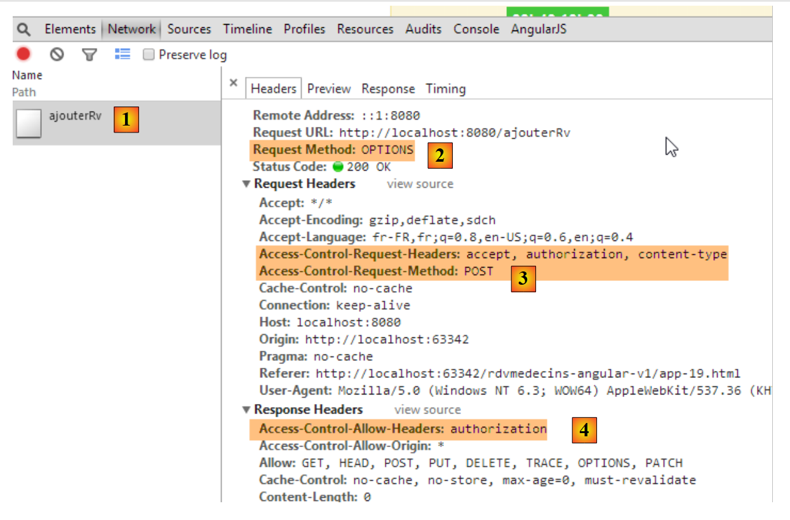 |
- en [1] et [2] : il n'y a eu qu'une requête HTTP, la requête [OPTIONS] ;
- en [3], le client Angular demande deux autorisations :
- celle d'envoyer les entêtes HTTP [accept, authorization, content-type] ;
- celle d'envoyer une commande POST ;
- en [4] : le serveur autorise l'entête [authorization]. Rappelons que côté serveur, c'est nous-mêmes qui envoyons cette autorisation ;
La nouveauté est donc que sur une opération POST, le client Angular demande davantage d'autorisations au serveur. Il faut donc modifier celui-ci pour qu'il les lui donne :
|
Dans la classe [RdvMedecinsCorsController], nous modifions la méthode privée qui génère les entêtes HTTP envoyés pour les commandes OPTIONS, GET et POST :
// envoi des options au client
private void sendOptions(HttpServletResponse response) {
if (application.isCORSneeded()) {
// on fixe le header CORS
response.addHeader("Access-Control-Allow-Origin", "*");
// on autorise certains headers
response.addHeader("Access-Control-Allow-Headers", "accept, authorization, content-type");
// on autorise le POST
response.addHeader("Access-Control-Allow-Methods", "POST");
}
}
- ligne 7 : on a ajouté une autorisation pour les entêtes HTTP [accept, content-type] ;
- ligne 9 : on a ajouté une autorisation pour la méthode POST ;
On refait le test après avoir relancé le serveur :
 |
Cette fois-ci, on a réussi à réserver.
3.7.9.8. Suppression d'un rendez-vous
 | 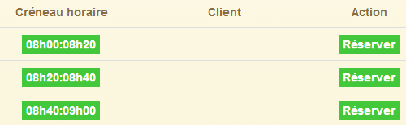 |
Le code de la fonction [supprimer] est le suivant :
$scope.supprimer = function (idRv) {
utils.debug("suppression rv n°", idRv);
// attente simulée
$scope.waiting.visible = true;
task = utils.waitForSomeTime($scope.waiting.time);
// on ajoute le créneau
var promise = task.promise.then(function () {
// le chemin de l'URL de service
var path = config.urlSvrResaRemove;
// les données à transmettre au service
var post = {idRv: idRv};
// on lance la tâche asynchrone
task = dao.getData($scope.server.url, $scope.server.login, $scope.server.password, path, post);
// on retourne la promesse d'achèvement de la tâche
return task.promise;
});
// analyse du résultat de la tâche
promise = promise.then(function (result) {
if (result.err != 0) {
// il y a eu des erreurs pour supprimer le rv
$scope.errors = {title: config.postRemoveErrors, messages: utils.getErrors(result, $filter), show: true};
// on met à jour l'UI
$scope.waiting.visible = false;
} else {
// on demande le nouvel agenda
getAgenda();
}
});
};
- ligne 1 : il faut se rappeler que le paramètre de la fonction est le n° du rendez-vous à supprimer. On a là un code très similaire à celui de la réservation. Nous ne commentons que les différences ;
- ligne 9 : l'URL du service est ici [/supprimerRV] et là également elle est accédée via un POST :
@RequestMapping(value = "/supprimerRv", method = RequestMethod.POST, consumes = "application/json; charset=UTF-8")
public Reponse supprimerRv(@RequestBody PostSupprimerRv post, HttpServletResponse response) {
Le paramètre posté est là encore transmis sous une forme JSON. Au paragraphe 2.12.17, nous avons montré la nature du POST réalisé à la main :
 |
- en [1], l'URL du service web ;
- en [2], la méthode POST est utilisée;
- en [3], le texte JSON des informations transmises au service web sous la forme {idRv} ;
- en [4], le client précise au service web qu'il lui envoie des informations JSON ;
Revenons au code JS de la fonction [supprimer] :
- ligne 11 : on crée l'objet posté. Angular le sérialisera automatiquement en JSON ;
Le reste du code est analogue à celui de la réservation.
3.7.9.9. Modification serveur
Côté serveur, nous faisons les modifications suivantes :
|
Dans la classe [RdvMedecinsCorsController], nous ajoutons la méthode suivante :
// envoi des options au client
private void sendOptions(HttpServletResponse response) {
if (application.isCORSneeded()) {
// on fixe le header CORS
response.addHeader("Access-Control-Allow-Origin", "*");
// on autorise certains headers
response.addHeader("Access-Control-Allow-Headers", "accept, authorization, content-type");
// on autorise le POST
response.addHeader("Access-Control-Allow-Methods", "POST");
}
}
...
@RequestMapping(value = "/supprimerRv", method = RequestMethod.OPTIONS)
public void supprimerRv(HttpServletResponse response) {
sendOptions(response);
}
L'ajout est fait lignes 13-16. Les entêtes des lignes 2-10 seront envoyés pour l'URL [/supprimerRv] (ligne 13) et la méthode HTTP [OPTIONS] (ligne 13).
La classe [RdvMedecinsController] est elle, modifiée de la façon suivante :
@RequestMapping(value = "/supprimerRv", method = RequestMethod.POST, consumes = "application/json; charset=UTF-8")
public Reponse supprimerRv(@RequestBody PostSupprimerRv post, HttpServletResponse response) {
// entêtes CORS
rdvMedecinsCorsController.supprimerRv(response);
...
Pour la méthode [POST] (ligne 1) et l'URL [/supprimerRv] (ligne 1), la méthode que nous venons d'ajouter dans [RdvMedecinsCorsController] est appelée (ligne 4), renvoyant donc les mêmes entêtes HTTP que pour la méthode HTTP [OPTIONS].
3.7.10. Exemple 10 : créer et annuler des réservations - 2
Nous présentons maintenant la même application que précédemment mais au lieu de réserver pour un client aléatoire, celui-ci sera sélectionné dans une liste déroulante.
3.7.10.1. La vue V de l'application
Nous présenterons le formulaire suivant :
 |
Les clients seront sélectionnés en [1].
Le code est similaire à celui de l'application précédente, aussi ne présentons-nous que les principales différences.
Nous dupliquons le fichier [app-19.html] dans [app-20.html] puis nous créons le code de la liste déroulante des clients [1] :
<!-- la liste des clients -->
<div class="alert alert-info">
<h3>{{agenda.title|translate:agenda.model}}</h3>
<div class="row" ng-show="clients.show">
<div class="col-md-3">
<h2 translate="{{clients.title}}"></h2>
<select data-style="btn-primary" class="selectpicker" select-enable="" ng-if="clients.data">
<option ng-repeat="client in clients.data" value="{{client.id}}">
{{client.titre}} {{client.prenom}} {{client.nom}}
</option>
</select>
</div>
</div>
</div>
- lignes 8-12 : la liste déroulante va être implémentée avec le composant [bootstrap-select] ;
- ligne 1 : la directive [selectEnable] est appliquée via l'attribut [select-enable] ;
- ligne 1 : la balise <select> n'est générée que si [clients.data] existe (# null, undefined). Ce point est important et a été expliqué paragraphe 3.7.7.8;
Par ailleurs, nous importons de nouveaux fichiers JS :
<script type="text/javascript" src="rdvmedecins-08.js"></script>
<!-- directives -->
<script type="text/javascript" src="selectEnable.js"></script>
<script type="text/javascript" src="footable.js"></script>
- ligne 1 : le fichier [rdvmedecins-08.js] est obtenu par recopie du fichier [rdvmedecins-0.js] ;
- lignes 3-4 : on importe les fichiers des deux directives ;
3.7.10.2. Le contrôleur C
Le code du contrôleur C évolue de la façon suivante :
// contrôleur
angular.module("rdvmedecins")
.controller('rdvMedecinsCtrl', ['$scope', 'utils', 'config', 'dao', '$translate', '$timeout', '$filter', '$locale',
function ($scope, utils, config, dao, $translate, $timeout, $filter, $locale) {
// ------------------- initialisation modèle
...
// les clients
$scope.clients = {title: config.listClients, show: false, model: {}};
//------------------------------------------- initilisation vue
// la tâche asynchrone globale
var task;
// on demande les clients puis l'agenda
getClients().then(function () {
getAgenda();
});
...
// exécution action
function getClients() {
....
};
} ]);
- ligne 8 : l'objet [$scope.clients] configure la liste déroulante des clients dans la vue V ;
- lignes 14-16 : de façon asynchrone, on demande d'abord la liste des clients, puis une fois celle-ci obtenue, on demande l'agenda de Mme PELISSIER pour le jour d'aujourd'hui. La syntaxe utilisée ici ne fonctionne que parce que la fonction [getClients] rend une promesse (promise) ;
La méthode [getClients] demande la liste des clients :
function getClients() {
// on met à jour l'UI
$scope.waiting.visible = true;
$scope.clients.show = false;
$scope.errors.show = false;
// on demande la liste des clients;
task = dao.getData($scope.server.url, $scope.server.login, $scope.server.password, config.urlSvrClients);
var promise = task.promise;
// on analyse le résultat de l'appel précédent
promise = promise.then(function (result) {
// result={err: 0, data: [client1, client2, ...]}
// result={err: n, messages: [msg1, msg2, ...]}
if (result.err == 0) {
// on met les données acquises dans le modèle
$scope.clients.data = result.data;
// on met à jour l'UI
$scope.clients.show = true;
$scope.waiting.visible = false;
} else {
// il y a eu des erreurs pour obtenir la liste des clients
$scope.errors = { title: config.getClientsErrors, messages: utils.getErrors(result), show: true, model: {}};
// on met à jour l'UI
$scope.waiting.visible = false;
}
});
// on rend la promesse
return promise;
};
C'est un code que nous avons déjà rencontré et commenté. L'élément important à noter est ligne 31 :
- ligne 27 : on rend la promesse de la ligne 10, ç-à-d la dernière promesse obtenue dans le code. Cette promesse ne sera obtenue que lorsque l'appel HTTP aura rendu sa réponse ;
La méthode [reserver] évolue légèrement :
$scope.reserver = function (creneauId) {
utils.debug("réservation du créneau", creneauId);
// on crée un RV pour le client sélectionné
var idClient = $(".selectpicker").selectpicker('val');
...
});
- ligne 4 : on ne réserve plus pour un client aléatoire mais pour le client sélectionné dans la liste des clients.
3.7.11. Exemple 11 : une directive [selectEnable2]
Cet exemple revient sur les directives.
3.7.11.1. La vue V
L'application affiche la vue suivante :
 |
3.7.11.2. Le code HTML de la vue
Le code HTML de la vue [app-21.html] est le suivant :
<div class="container">
<h1>Rdvmedecins - v1</h1>
<!-- le message d'attente -->
<div class="alert alert-warning" ng-show="waiting.visible">
...
</div>
<!-- la liste d'erreurs -->
<div class="alert alert-danger" ng-show="errors.show">
...
</div>
<!-- la liste des clients -->
<div class="alert alert-info">
<div class="row" ng-show="clients.show">
<div class="col-md-4">
<h2 translate="{{clients.title}}"></h2>
<select data-style="btn-primary" id="selectpickerClients" select-enable2="" ng-if="clients.data">
<option ng-repeat="client in clients.data" value="{{client.id}}">
{{client.titre}} {{client.prenom}} {{client.nom}}
</option>
</select>
</div>
</div>
</div>
<!-- la liste des médecins -->
<div class="alert alert-info">
<div class="row" ng-show="medecins.show">
<div class="col-md-4">
<h2 translate="{{medecins.title}}"></h2>
<select data-style="btn-primary" id="selectpickerMedecins" select-enable2="" ng-if="medecins.data">
<option ng-repeat="medecin in medecins.data" value="{{medecin.id}}">
{{medecin.titre}} {{medecin.prenom}} {{medecin.nom}}
</option>
</select>
</div>
</div>
</div>
</div>
...
<script type="text/javascript" src="rdvmedecins-09.js"></script>
<!-- directives -->
<script type="text/javascript" src="selectEnable2.js"></script>
- lignes 19-23 : la liste déroulante des clients ;
- ligne 19 : on applique la directive [selectEnable2] (attribut [select-enable2]) ;
- ligne 19 : que si [clients.data] est non vide ;
- ligne 19 : la liste déroulante est identifiée par l'attribut [id="selectpickerClients"] ;
- lignes 33-37 : la liste déroulante des médecins ;
- ligne 33 : on applique la directive [selectEnable2] (attribut [select-enable2]) ;
- ligne 33 : que si [medecins.data] est non vide ;
- ligne 33 : la liste déroulante est identifiée par l'attribut [id="selectpickerMedecins"] ;
- ligne 43 : on importe un nouvau fichier JS [rdvmedecins-09.js] ;
- ligne 45 : on importe le fichier JS de la nouvelle directive ;
3.7.11.3. La directive [selectEnable2]
Le code de la directive [selectEnable2] est le suivant :
angular.module("rdvmedecins").directive('selectEnable2', ['$timeout', 'utils', function ($timeout, utils) {
return {
link: function (scope, element, attrs) {
utils.debug("directive selectEnable2 attrs", attrs);
$timeout(function () {
$('#' + attrs['id']).selectpicker();
})
}
}
}]);
- ligne 4 : on fait afficher la valeur du paramètres [attrs] afin de faire comprendre le fonctionnement du code. On va découvrir que attrs['id']='selectpickerClients' pour la liste des clients ;
- ligne 6 : pour localiser dans le DOM un élément d'[id='x'], on écrit [$('#x')]. Donc on doit écrire [$('#selectpickerClients')] pour localiser la liste des clients. Ceci est obtenu avec la syntaxe [$('#' + attrs['id'])] ;
La directive [selectEnable2] utilise donc l'information transportée par l'un des attributs de l'élement HTML auquel elle est appliquée.
3.7.11.4. Le contrôleur C
Le contrôleur C se trouve dans le fichier JS [rdvmedecins-09.js] et a la structure suivante :
// contrôleur
angular.module("rdvmedecins")
.controller('rdvMedecinsCtrl', ['$scope', 'utils', 'config', 'dao',
function ($scope, utils, config, dao) {
// ------------------- initialisation modèle
// le msg d'attente
$scope.waiting = {text: config.msgWaiting, visible: false, cancel: cancel, time: 3000};
// les informations de connexion
$scope.server = {url: 'http://localhost:8080', login: 'admin', password: 'admin'};
// les erreurs
$scope.errors = {show: false, model: {}};
// les médecins
$scope.medecins = {title: config.listMedecins, show: false, model: {}};
// les clients
$scope.clients = {title: config.listClients, show: false, model: {}};
// la tâche asynchrone globale
var task;
// ---------------------------------------------------- initialisation vue
// on met à jour l'UI
$scope.waiting.visible = true;
$scope.clients.show = false;
$scope.medecins.show = false;
$scope.errors.show = false;
// on demande les clients puis les médecins
getClients().then(function () {
getMedecins();
});
// liste des clients
function getClients() {
...
}
// liste des médecins
function getMedecins() {
...
}
// annulation attente
function cancel() {
...
}
} ]);
- lignes 26-28 : on demande d'abord les clients puis les médecins ;
3.7.11.5. Les tests
Testez cette nouvelle version.
3.7.12. Exemple 12 : une directive [list]
Nous reprenons le même exemple que précédemment mais nous voulons alléger le code HTML en utilisant une directive. En effet, nous avons actuellement le code HTML suivant :
<!-- la liste des clients -->
<div class="alert alert-info">
<div class="row" ng-show="clients.show">
<div class="col-md-4">
<h2 translate="{{clients.title}}"></h2>
<select data-style="btn-primary" id="selectpickerClients" select-enable2="" ng-if="clients.data">
<option ng-repeat="client in clients.data" value="{{client.id}}">
{{client.titre}} {{client.prenom}} {{client.nom}}
</option>
</select>
</div>
</div>
</div>
<!-- la liste des médecins -->
<div class="alert alert-info">
<div class="row" ng-show="medecins.show">
<div class="col-md-4">
<h2 translate="{{medecins.title}}"></h2>
<select data-style="btn-primary" id="selectpickerMedecins" select-enable2="" ng-if="medecins.data">
<option ng-repeat="medecin in medecins.data" value="{{medecin.id}}">
{{medecin.titre}} {{medecin.prenom}} {{medecin.nom}}
</option>
</select>
</div>
</div>
</div>
Les lignes 14-26 sont identiques aux lignes 1-13. Elles s'appliquent à des médecins au lieu des clients. Nous voudrions pouvoir écrire la chose suivante :
<!-- la liste des clients -->
<list model="clients" ng-if="clients.show"></list>
<!-- la liste des médecins -->
<list model="medecins" ng-if="medecins.show"></list>
Ce code fait intervenir une nouvelle directive [list] que nous allons créer maintenant.
3.7.12.1. La directive [list]
La directive [list] est placée dans le fichier JS [list.js]. Son code est le suivant :
angular.module("rdvmedecins")
.directive("list", ['utils', '$timeout', function (utils, $timeout) {
// instance de la directive retournée
return {
// élément HTML
restrict: "E",
// url du fragment
templateUrl: "list.html",
// scope unique à chaque instance de la directive
scope: true,
// fonction lien avec le document
link: function (scope, element, attrs) {
utils.debug("directive list attrs", attrs);
scope.model = scope[attrs['model']];
utils.debug("directive list model", scope.model);
$timeout(function () {
$('#' + scope.model.id).selectpicker();
})
}
}
}]);
- ligne 2 : définit une directive nommée 'list' ;
- ligne 6 : l'attribut [restrict] fixe les façons d'utiliser la directive. [restrict: "E"] signifie que la directive [list] est utilisable comme élément HTML <list ...>...</list>. [restrict: "A"] signifie que la directive [list] est utilisable comme attribut, par exemple <div ... list='...'>. [restrict: "AE"] signifie que la directive [list] est utilisable comme attribut et comme élément ;
- ligne 8 : l'attribut [templateUrl] indique le nom du fragment HTML à utiliser à la rencontre de la balise. Ce fragment sera le corps de la balise ;
- ligne 10 : l'attribut [scope] fixe la portée du modèle de la directive. [scope: true] signifie que deux éléments de type <list> auront chacun leur modèle. Par défaut, (scope non initialisé), ils partagent leurs modèles ;
- ligne 12 : la fonction [link] que nous avons utilisée déjà plusieurs fois ;
Pour comprendre le code ci-dessus, il faut se rappeler l'utilisation qui va être faite de la directive :
<!-- la liste des clients -->
<list model="clients" ng-if="clients.show"></list>
<!-- la liste des médecins -->
<list model="medecins" ng-if="medecins.show"></list>
La directive [list] est utilisée comme élément HTML <list>. Cet élément a deux attributs :
- [model] : qui va avoir pour valeur, l'élément du modèle M de la vue V dans laquelle se trouve la directive [list]. Cet élément va alimenter le modèle de la directive ;
- [ng-if] : qui va faire en sorte que le code HTML de la directive ne soit pas généré s'il n'y a rien à visualiser ;
Revenons au code de la fonction [link] de la directive :
link: function (scope, element, attrs) {
utils.debug("directive list attrs", attrs);
scope.model = scope[attrs['model']];
utils.debug("directive list model", scope.model);
$timeout(function () {
$('#' + scope.model.id).selectpicker();
})
}
Associons ce code JS avec le code HTML qui utilise la directive :
<list model="clients" ng-if="clients.show"></list>
- ligne 3 : attrs['model'] a ici pour valeur 'clients' ;
- ligne 3 : scope[attrs['model']] a pour valeur scope['clients'] et représente alors [$scope.clients], ç-à-d le champ [clients] du modèle de la vue. Ce champ aura pour valeur {id :'...', data:[client1, client2, ...], show : ..., title :'...'} ;
- ligne 3 : on ajoute un champ [model] au modèle de la directive. Celle-ci a hérité du modèle de la vue dans laquelle elle se trouve. Il faut donc éviter les collisions avec un éventuel champ [model] que pourrait avoir également la vue. Ici, il n'y aura pas de collision ;
- ligne 4 : on affiche [scope.model] afin de mieux comprendre le code ;
- lignes 5-7 : on retrouve un code déjà rencontré. La différence est que l'id du composant était pris auparavant dans un attribut attrs['id']. Là il sera pris dans [scope.model.id] ;
Maintenant, regardons le code HTML généré par la directive. A cause de l'attribut [templateUrl: "list.html"] de la directive, il faut le chercher dans le fichier [list.html] :
<!-- une liste de clients ou de médecins -->
<div class="alert alert-info" ng-show="model.show">
<div class="row">
<div class="col-md-4">
<h2 translate="{{model.title}}"></h2>
<select data-style="btn-primary" id="{{model.id}}" ng-if="model.data">
<option ng-repeat="element in model.data" value="{{element.id}}">
{{element.titre}} {{element.prenom}} {{element.nom}}
</option>
</select>
</div>
</div>
</div>
- la première chose qu'il faut se rappeler pour lire ce code est que la directive a créé un objet [scope.model] de la forme [{id :'...', data:[client1, client2, ...], show : ..., title :'...'}]. Cet objet [model] (scope est implicite dans le code HTML) est utilisé par le code HTML de la directive ;
- ligne 2 : utilisation de [model.show] pour montrer / cacher la vue générée par la directive ;
- ligne 5 : utilisation de [model.title] pour mettre un titre ;
- ligne 6 : utilisation de [model.id] pour mettre un id à la balise <select>. Cet id est utilisé par le code JS de la directive ;
- ligne 6 : utilisation de [model.data] pour générer le <select> uniquement s'il y a des données à afficher ;
- lignes 7-9 : utilisation de [model.data] pour générer les éléments de la liste déroulante ;
3.7.12.2. Le code HTML
Le code HTML de l'application [app-22.html] est le suivant :
<div class="container">
<h1>Rdvmedecins - v1</h1>
<!-- le message d'attente -->
<div class="alert alert-warning" ng-show="waiting.visible">
...
</div>
<!-- la liste d'erreurs -->
<div class="alert alert-danger" ng-show="errors.show">
...
</div>
<!-- la liste des clients -->
<list model="clients" ng-if="clients.show"></list>
<!-- la liste des médecins -->
<list model="medecins" ng-if="medecins.show"></list>
</div>
...
<script type="text/javascript" src="rdvmedecins-10.js"></script>
<!-- directives -->
<script type="text/javascript" src="list.js"></script>
- ligne 22 : il ne faut pas oublier d'inclure le code JS de la directive ;
3.7.12.3. Le contrôleur C
Le contrôleur C évolue très peu :
angular.module("rdvmedecins")
.controller('rdvMedecinsCtrl', ['$scope', 'utils', 'config', 'dao',
function ($scope, utils, config, dao) {
// ------------------- initialisation modèle
...
// les médecins
$scope.medecins = {title: config.listMedecins, show: false, id: 'medecins'};
// les clients
$scope.clients = {title: config.listClients, show: false, id: 'clients'};
...
- lignes 7 et 9, nous ajoutons l'attribut [id] aux modèles des médecins et des clients ;
3.7.12.4. Les tests
Les tests donnent les mêmes résultats que dans l'exemple précédent.
3.7.13. Exemple 13 : mise à jour du modèle d'une directive
Nous restons dans l'étude des directives et nous gardons l'exemple de la liste déroulante. On veut étudier ici le comportement de la directive [list] lorsque le contenu de la liste déroulante change.
3.7.13.1. Les vues V
Les différentes vues sont les suivantes :
 |
- en [1], on demande une première fois la liste des clients ;
 |
- en [2], on demande une seconde fois la liste des clients. Cette seconde liste est alors cumulée à la première [3]. C'est la mise à jour du composant [Bootstrap select] qu'on veut étudier dans cet exemple.
3.7.13.2. La page HTML
La page HTML [app-23.html] est obtenue par recopie de [app-22.html] puis modifiée de la façon suivante :
<div class="container">
<h1>Rdvmedecins - v1</h1>
<!-- le message d'attente -->
<div class="alert alert-warning" ng-show="waiting.visible">
...
</div>
<!-- la liste d'erreurs -->
<div class="alert alert-danger" ng-show="errors.show">
...
</div>
<!-- le bouton -->
<div class="alert alert-warning">
<button class="btn btn-primary" ng-click="getClients()">{{clients.title|translate}}</button>
</div>
<!-- la liste des clients -->
<list2 model="clients" ng-if="clients.show"></list2>
</div>
...
<script type="text/javascript" src="rdvmedecins-11.js"></script>
<!-- directives -->
<script type="text/javascript" src="list2.js"></script>
Les modifications par rapport à l'application précédente sont les suivantes :
- lignes 15-17 : ajout d'un bouton ;
- ligne 20 : utilisation d'une nouvelle directive [list2] ;
- ligne 23 : utilisation d'un nouveau fichier JS ;
- ligne 25 : importation du fichier JS de la directive [list2] ;
3.7.13.3. La directive [list2]
La directive [list2] dans [list2.js] est la suivante :
angular.module("rdvmedecins")
.directive("list2", ['utils', '$timeout', function (utils, $timeout) {
// instance de la directive retournée
return {
// élément HTML
restrict: "E",
// url du fragment
templateUrl: "list.html",
// scope unique à chaque instance de la directive
scope: true,
// fonction lien avec le document
link: function (scope, element, attrs) {
utils.debug('directive list2');
scope.model = scope[attrs['model']];
$timeout(function () {
$('#' + scope.model.id).selectpicker('refresh');
})
}
}
}]);
La seule différence avec la directive [list] est ligne 16 : avec la méthode [selectpicker('refresh')], on demande au composant [Bootstrap-select] de se rafraîchir. L'idée derrière cela est qu'à chaque fois que l'utilisateur va demander une nouvelle liste de clients, on va rafraîchir la liste déroulante. Ca ne va pas marcher mais c'est l'idée de base.
3.7.13.4. Le contrôleur C
Le contrôleur est dans le fichier [rdvmedecins-11.js] obtenu par recopie du fichier [rdvmedecins-10.js] :
// les clients
$scope.clients = {title: config.listClients, show: false, id: 'clients', data: []};
...
// liste des clients
$scope.getClients = function getClients() {
// on met à jour l'UI
$scope.waiting.visible = true;
$scope.errors.show = false;
// on demande la liste des clients;
task = dao.getData($scope.server.url, $scope.server.login, $scope.server.password, config.urlSvrClients);
var promise = task.promise;
// on analyse le résultat de l'appel précédent
promise = promise.then(function (result) {
// result={err: 0, data: [client1, client2, ...]}
// result={err: n, messages: [msg1, msg2, ...]}
if (result.err == 0) {
// on met les données acquises dans un nouveau modèle pour forcer la vue à se rafraîchir
$scope.clients = {title: $scope.clients.title, data: $scope.clients.data.concat(result.data), show: $scope.clients.show, id: $scope.clients.id};
// on met à jour l'UI
$scope.clients.show = true;
$scope.waiting.visible = false;
} else {
// il y a eu des erreurs pour obtenir la liste des clients
$scope.errors = { title: config.getClientsErrors, messages: utils.getErrors(result), show: true, model: {}};
// on met à jour l'UI
$scope.waiting.visible = false;
}
});
}
- ligne 1 : afin de permettre la concaténation de tableaux dans [clients.data], cet objet est initialisé avec un tableau vide ;
- ligne 18 : on concatène la nouvelle liste de clients avec celles déjà présentes dans le tableau [clients.data] ;
Avant on avait écrit :
Maintenant on écrit :
Pour comprendre ce code, il faut se rappeler comment le modèle M est utilisé dans la vue V dans le cas de la directive [list2] :
<!-- la liste des clients -->
<list2 model="clients" ng-if="clients.show"></list2>
Le modèle utilisé par la directive [list2] est [clients]. Elle ne sera réévaluée dans la vue V, que si [clients] change dans le modèle M de la vue. La première idée qui vient pour la modification est d'écrire :
pour tenir compte du fait que la nouvelle liste de clients doit être ajoutée aux précédentes. Ce faisant, on modifie [clients.data] mais pas [clients]. Je ne connais pas les arcanes de Javascript mais il ne serait pas étonnant que [clients] soit un pointeur, ainsi que [clients.data]. Le pointeur [clients] ne change pas lorsqu'on change le pointeur [clients.data]. La directive [list2] n'est alors pas réévaluée. C'est effectivement ce qu'on constate lorsqu'on débogue l'application (F12 dans Chrome).
En écrivant :
$scope.clients = {title: $scope.clients.title, data: $scope.clients.data.concat(result.data), show: $scope.clients.show, id: $scope.clients.id};
On s'assure que [$scope.clients] reçoit bien une nouvelle valeur. Le pointeur [$scope.clients] pointe sur un nouvel objet. La directive [list2] devrait alors être réévaluée. Mais pourtant, on n'a pas le résultat cherché. Examinons les copies d'écran lorsqu'on demande deux fois la liste des clients :
 |
- en [1], on n'a que quatre élements au lieu de huit ;
- en [2], ces quatre éléments sont dans un [select] mais celui-ci est caché (style='display : none');
 |
- en [3], on retrouve les quatre clients dans une autre architecture HTML et c'est celle-ci que l'utilisateur voit lorsqu'il clique sur la liste déroulante ;
Enfin, les logs console disent la chose suivante :
- ligne 1 : le service [dao] est instancié ;
- ligne 2 : le service [dao] obtient une première liste de clients ;
- ligne 3 : la directive [list2] est exécutée ;
- ligne 4 : le service [dao] obtient une seconde liste de clients ;
L'affichage de la ligne 2 vient du code suivant dans la directive :
link: function (scope, element, attrs) {
utils.debug('directive list2');
...
}
Examinons le cycle de vie de la directive [list2] :
- entre les lignes 1 et 2, elle n'est pas activée alors que la vue a été affichée une première fois. C'est dû à son attribut [ng-if="clients.show"] dans la vue V :
<list2 model="clients" ng-if="clients.show"></list2>
- ligne 3 : après l'obtention de la première liste de médecins, [clients.show] passe à true et la directive est activée ;
- après l'obtention de la seconde liste de clients, on voit que le code de la directive [list2] n'est pas appelé. C'est pourquoi, on ne voit pas la seconde liste ;
Pour résoudre ce problème, nous modifions la directive [list2] de la façon suivante :
angular.module("rdvmedecins")
.directive("list2", ['utils', '$timeout', function (utils, $timeout) {
// instance de la directive retournée
return {
// élément HTML
restrict: "E",
// url du fragment
templateUrl: "list.html",
// scope unique à chaque instance de la directive
scope: true,
// fonction lien avec le document
link: function (scope, element, attrs) {
// à chaque fois que attrs["model"] change, le modèle de la directive doit changer également
scope.$watch(attrs["model"], function (newValue) {
utils.debug("directive list2 newValue", newValue);
// on met à jour le modèle de la directive
scope.model = newValue;
$timeout(function () {
$('#' + scope.model.id).selectpicker('refresh');
})
});
}
}
}]);
- ligne 14 : la fonction [scope.$watch] permet d'observer une valeur du modèle. Sa syntaxe est [scope.$watch('var'), f] où [var] est l'identifiant d'une variable du modèle et f la fonction à exécuter lorsque cette variable change de valeur. Ici, nous voulons observer la variable [clients]. Donc on doit écrire [scope.$watch('clients')]. Comme on a attrs['model']='clients', on écrit [scope.$watch(attrs["model"], function (newValue)] ;
- ligne 14 : le second paramètre de la fonction [scope.$watch] est la fonction à exécuter lorsque la variable observée change de valeur. Le paramètre [newValue] est la nouvelle valeur de la variable, donc pour nous la nouvelle valeur de la variable [clients] du modèle ;
- ligne 17 : cette nouvelle valeur est affectée au champ [model] du modèle de la directive ;
Cette modification faite, les logs changent :
 |
Ci-dessus, on voit qu'après avoir obtenu la seconde liste de clients, la directive [list2] est bien exécutée de nouveau, ce que confirme le résultat [2].
3.7.14. Exemple 14 : les directives [waiting] et [errors]
Revenons au code HTML de l'application précédente :
<div class="container">
<h1>Rdvmedecins - v1</h1>
<!-- le message d'attente -->
<div class="alert alert-warning" ng-show="waiting.visible">
...
</div>
<!-- la liste d'erreurs -->
<div class="alert alert-danger" ng-show="errors.show">
...
</div>
<!-- le bouton -->
<div class="alert alert-warning">
<button class="btn btn-primary" ng-click="getClients()">{{clients.title|translate}}</button>
</div>
<!-- la liste des clients -->
<list2 model="clients" ng-if="clients.show"></list2>
</div>
- lignes 5-7 : le message d'attente ;
- lignes 10-12 : le message d'erreurs ;
Nous décidons de mettre les codes HTML de ces deux messages dans des directives.
3.7.14.1. Le nouveau code HTML
Le nouveau code HTML [app-24.html] est le suivant :
<div class="container">
<h1>Rdvmedecins - v1</h1>
<!-- le message d'attente -->
<waiting model="waiting"></waiting>
<!-- la liste d'erreurs -->
<errors model="errors"></errors>
<!-- le bouton -->
<div class="alert alert-warning">
<button class="btn btn-primary" ng-click="getClients()">{{clients.title|translate}}</button>
</div>
<!-- la liste des clients -->
<list2 model="clients" ng-if="clients.show"></list2>
</div>
...
<script type="text/javascript" src="rdvmedecins-12.js"></script>
<!-- directives -->
<script type="text/javascript" src="list2.js"></script>
<script type="text/javascript" src="errors.js"></script>
<script type="text/javascript" src="waiting.js"></script>
- ligne 5 : la directive pour le message d'attente ;
- ligne 8 : la directive pour le message d'erreurs ;
- ligne 19 : le nouveau fichier JS associé à l'application ;
- lignes 21-23 : les fichiers JS des trois directives ;
3.7.14.2. La directive [waiting]
Le code JS de la directive [waiting] est dans le fichier [waiting.js] suivant :
angular.module("rdvmedecins")
.directive("waiting", ['utils', function (utils) {
// instance de la directive retournée
return {
// élément HTML
restrict: "E",
// url du fragment
templateUrl: "waiting.html",
// scope unique à chaque instance de la directive
scope: true,
// fonction lien avec le document
link: function (scope, element, attrs) {
// à chaque fois que attr["model"] change, le modèle de la page doit changer également
scope.$watch(attrs["model"], function (newValue) {
utils.debug("[waiting] watch newValue", newValue);
scope.model = newValue;
});
}
}
}]);
Ce code suit la même logique que celui de la directive [list2] déjà étudiée.
Ligne 8, on référence le fichier [waiting.html] suivant :
<div class="alert alert-warning" ng-show="model.show">
<h1>{{ model.title.text | translate:model.title.values}}
<button class="btn btn-primary pull-right" ng-click="model.cancel()">{{'cancel'|translate}}</button>
<img src="assets/images/waiting.gif" alt=""/>
</h1>
</div>
Dans le code JS de l'application, le modèle [$scope.waiting] de ce code HTML sera défini de la façon suivante :
// le msg d'attente
$scope.waiting = {title: {text: config.msgWaiting, values: {}}, show: false, cancel: cancel, time: 3000};
3.7.14.3. La directive [errors]
Le code JS de la directive [errors] est dans le fichier [errors.js] suivant :
angular.module("rdvmedecins")
.directive("errors", ['utils', function (utils) {
// instance de la directive retournée
return {
// élément HTML
restrict: "E",
// url du fragment
templateUrl: "errors.html",
// scope unique à chaque instance de la directive
scope: true,
// fonction lien avec le document
link: function (scope, element, attrs) {
// à chaque fois que attr["model"] change, le modèle de la page doit changer également
scope.$watch(attrs["model"], function (newValue) {
utils.debug("[errors] watch newValue", newValue);
scope.model = newValue;
});
}
}
}]);
Ce code suit la même logique que celui de la directive [list2] déjà étudié.
Ligne 8, on référence le fichier [errors.html] suivant :
<div class="alert alert-danger" ng-show="model.show">
{{model.title.text|translate:model.title.values}}
<ul>
<li ng-repeat="message in model.messages">{{message|translate}}</li>
</ul>
</div>
Dans le code JS de l'application, le modèle [$scope.errors] de ce code HTML sera défini de la façon suivante :
// il y a eu des erreurs pour obtenir la liste des clients
$scope.errors = { title: { text: config.getClientsErrors, values: {}}, messages: utils.getErrors(result), show: true, model: {}};
3.7.15. Exemple 15 : navigation
Jusqu'à maintenant, nous avons utilisé des applications à page unique. Nous abordons dans cet exemple, les applications à plusieurs pages et la navigation entre celles-ci.
3.7.15.1. Les vues V de l'application
 |
- en [1], l'URL de la vue n° 1 ;
- en [2], son contenu ;
- en [3], on passe à la page 2 ;
- en [4], la vue n° 2 ;
- en [5], on passe à la page 3 ;
 |
- en [6], la vue n° 3 ;
- en [7], on passe à la page 1 ;
- en [8], on est revenu à la vue n° 1 ;
3.7.15.2. Organisation du code
Nous commençons une nouvelle organisation du code :
 |
- les vues de l'application seront placées dans le dossier [views] ;
- le module de l'application sera placé dans le dossier [modules] ;
- les contrôleurs de l'application seront placés dans le dossier [controllers] ;
De même, dans la version finale :
- les services seront placés dans le dossier [services] ;
- les directives seront placées dans le dossier [directives] ;
3.7.15.3. Le conteneur des vues
Les vues du dossier [views] seront affichées dans le conteneur suivant [app-25.html] :
<!DOCTYPE html>
<html ng-app="rdvmedecins">
<head>
...
</head>
<body>
<div class="container" ng-controller="mainCtrl">
<!-- la barre de navigation -->
<ng-include src="'views/navbar.html'"></ng-include>
<!-- la vue courante -->
<ng-view></ng-view>
</div>
...
<!-- le module -->
<script type="text/javascript" src="modules/rdvmedecins-13.js"></script>
<!-- les contrôleurs -->
<script type="text/javascript" src="controllers/mainController.js"></script>
<script type="text/javascript" src="controllers/page1Controller.js"></script>
<script type="text/javascript" src="controllers/page2Controller.js"></script>
<script type="text/javascript" src="controllers/page3Controller.js"></script>
</body>
</html>
- ligne 7 : le corps du conteneur est contrôlé par [mainCtrl] ;
- ligne 9 : la directive [ng-include] permet d'inclure un fichier HTML externe, ici une barre de navigation ;
- ligne 12 : les différentes vues affichées par le conteneur le sont à l'intérieur de la directive [ng-view]. Au final, on a un conteneur qui affiche :
- toujours la même barre de navigation (ligne 9) ;
- des vues différentes en ligne 12 ;
- lignes 16-22 : on importe les fichiers JS du module de l'application [rdvmedecins-13.js] et de ses contrôleurs ;
3.7.15.4. Le module de l'application
Le fichier [rdvmedecins-13.js] définit le module de l'application et le routage entre vues :
// --------------------- module Angular
angular.module("rdvmedecins", [ 'ngRoute' ]);
angular.module("rdvmedecins").config(["$routeProvider", function ($routeProvider) {
// ------------------------ routage
$routeProvider.when("/page1",
{
templateUrl: "views/page1.html",
controller: 'page1Ctrl'
});
$routeProvider.when("/page2",
{
templateUrl: "views/page2.html",
controller: 'page2Ctrl'
});
$routeProvider.when("/page3",
{
templateUrl: "views/page3.html",
controller: 'page3Ctrl'
});
$routeProvider.otherwise(
{
redirectTo: "/page1"
});
}]);
- ligne 1 : on définit le module [rdvmedecins]. Il a une dépendance sur le module [ngRoute] fourni par la bibliothèque [angular-route.min.js]. C'est ce module qui permet le routage défini aux lignes 6-24 ;
- ligne 4 : définit la fonction [config] du module [rdvmedecins]. On rappelle que cette fonction est exécutée avant toute instanciation de service. C'est une fonction de configuration du module. Ici, c'est son routage qui est configuré. Ceci est fait au moyen de l'objet [$routeProvider] fourni par le module [ngRoute] ;
- lignes 6-10 : définissent la vue à afficher lorsque l'utilisateur demande l'URL [/page1]. C'est un routage interne à l'application. L'URL est en fait [/rdvmedecins-angular-v1/app-21.html#/page1]. On voit que c'est toujours l'URL du conteneur [/rdvmedecins-angular-v1/app-21.html] qui est utilisée mais avec une information supplémentaire derrière un caractère #. C'est cette information supplémentaire que le routage Angular gère ;
- ligne 8 : indique le fragment HTML à insérer dans la directive [ng-view] du conteneur :
- ligne 9 : indique le nom du contrôleur de ce fragment ;
- lignes 11-15 : définissent la vue à afficher lorsque l'utilisateur demande l'URL [/page2] ;
- lignes 16-20 : définissent la vue à afficher lorsque l'utilisateur demande l'URL [/page3] ;
- lignes 21-24 : définissent le routage à exercer lorsque l'URL demandée n'est pas l'une des trois précédentes (otherwise, ligne 21) ;
- ligne 23 : redirection vers l'URL [/page1], donc vers la vue définie aux lignes 6-10 ;
3.7.15.5. Le contrôleur du conteneur de vues
Nous avons vu que le conteneur de vues déclarait un contrôleur :
<div class="container" ng-controller="mainCtrl">
Le contrôleur [mainCtrl] est défini dans le fichier [mainController.js] :
// contrôleur
angular.module("rdvmedecins")
.controller('mainCtrl', ['$scope', '$location',
function ($scope, $location) {
// modèles des pages
$scope.page1 = {};
$scope.page2 = {};
$scope.page3 = {};
// modèle global
var main = $scope.main = {};
main.text = "[Modèle global]";
// méthodes exposées à la vue
main.showPage1 = function () {
$location.path("/page1");
};
main.showPage2 = function () {
$location.path("/page2");
};
main.showPage3 = function () {
$location.path("/page3");
}
}]);
- ligne 3 : le contrôleur [mainCtrl] a besoin de l'objet [$location] fourni par le module de routage [ngRoute]. Cet objet permet de changer de vue (lignes 16, 19, 22) ;
Revenons au code du conteneur :
<div class="container" ng-controller="mainCtrl">
<!-- la barre de navigation -->
<ng-include src="'views/navbar.html'"></ng-include>
<!-- la vue courante -->
<ng-view></ng-view>
</div>
- le contrôleur [mainCtrl] construit le modèle de la zone 1-7 ;
- la vue incluse en ligne 6 a également un contrôleur. Par exemple la vue [page1] a le contrôleur [page1Ctrl]. Celui-ci construit le modèle de la zone affichée ligne 6. On a alors dans cette zone deux modèles :
- le modèle construit par le contrôleur [mainCtrl] ;
- le modèle construit par le contrôleur [page1Ctrl] ;
Il y a héritage des modèles. Dans la vue affichée ligne 6, les modèles des contrôleurs [mainCtrl] et [pagexCtrl] sont visibles tous les deux. Si deux variables de ces modèles portent le même nom, l'une va cacher l'autre. Pour éviter cette collision des noms, nous créons quatre modèles sous quatre noms :
conteneur | mainCtrl | main | 11 |
page1 | page1Ctrl | page1 | 7 |
page2 | page2Ctrl | page2 | 8 |
page3 | page3Ctrl | page3 | 9 |
- ligne 12 : définit un élément [text] dans le modèle [main] ;
Les lignes 7-11 ont une conséquence très particulière : elles définissent le [$scope] du contrôleur [mainCtrl] et dans celui-ci, elles créent quatre variables [main, page1, page2, page3]. Ces quatre variables vont être utilisées comme modèles respectifs du conteneur et des trois vues qu'il va contenir tour à tour.
3.7.15.6. La barre de navigation
La barre de navigation est définie de la façon suivante dans le conteneur :
<div class="container" ng-controller="mainCtrl">
<!-- la barre de navigation -->
<ng-include src="'views/navbar.html'"></ng-include>
<!-- la vue courante -->
<ng-view></ng-view>
</div>
La barre de navigation est définie ligne 3. Cela signifie qu'elle ne connaît que le modèle [main]. Son code est le suivant :
<div class="navbar navbar-inverse navbar-fixed-top" role="navigation">
<div class="container">
<div class="navbar-header">
<button type="button" class="navbar-toggle" data-toggle="collapse" data-target=".navbar-collapse">
<span class="sr-only">Toggle navigation</span>
<span class="icon-bar"></span>
<span class="icon-bar"></span>
<span class="icon-bar"></span>
</button>
<a class="navbar-brand" href="#">RdvMedecins</a>
</div>
<div class="collapse navbar-collapse">
<ul class="nav navbar-nav">
<li class="active">
<a href="">
<span ng-click="main.showPage1()">Page 1</span>
</a>
</li>
<li class="active">
<a href="">
<span ng-click="main.showPage2()">Page 2</span>
</a>
</li>
<li class="active">
<a href="">
<span ng-click="main.showPage3()">Page 3</span>
</a>
</li>
</ul>
</div>
</div>
</div>
- aux lignes 16, 21, 26, ce sont des méthodes du modèle [main] qui sont utilisées ;
- ligne 16 : un clic sur le lien [Page1] va lancer l'exécution de la méthode [$scope.main.showPage1]. Celle-ci est définie dans le contrôleur [mainCtrl] de la façon suivante :
// modèle global
var main = $scope.main = {};
main.text = "[Modèle global]";
// méthodes exposées à la vue
main.showPage1 = function () {
$location.path("/page1");
};
- ligne 6 : du code qui précède, on voit que la méthode [main.showPage1] est en réalité la méthode [$scope.main.showPage1]. C'est donc bien celle-ci qui va s'exécuter ;
- ligne 7 : on change l'URL de l'application qui devient [/page1]. Revenons au routage qui a été défini dans le module principal :
$routeProvider.when("/page1",
{
templateUrl: "views/page1.html",
controller: 'page1Ctrl'
});
on voit que le fragment [views/page1.html] va être inséré dans le conteneur et que son contrôleur est [page1Ctrl].
3.7.15.7. La vue [/page1] et son contrôleur
Le fragment [views/page1.html] est le suivant :
<h1>Page 1</h1>
<div class="alert alert-info">
<ul>
<li>Modèle global : {{main.text}}</li>
<li>Modèle local : {{page1.text}}</li>
</ul>
</div>
On se rappelle que dans la vue insérée dans le conteneur, le modèle [main] est visible. C'est ce qu'on veut vérifier ligne 4. Par ailleurs, le contrôleur [page1Ctrl] du fragment [views/page1.html] définit un modèle [page1]. C'est lui qui est utilisé ligne 5.
Le code du contrôleur [page1Ctrl] est le suivant :
angular.module("rdvmedecins")
.controller('page1Ctrl', ['$scope',
function ($scope) {
// modèle de la page 1
var page1=$scope.page1;
page1.text="[Modèle local dans page 1]";
}]);
- ligne 2 : le [$scope] injecté ici n'est pas vide. Puisque le contrôleur [page1Ctrl] contrôle une zone insérée dans un conteneur contrôlé par [mainCtrl], le [$scope] de la ligne 2 contient les éléments du [$scope] défini par le contrôleur [mainCtrl]. Il est important de le comprendre. Le [$scope] défini par le contrôleur [mainCtrl] contient les éléments suivants [main, page1, page2, page3]. Cela signifie qu'on a accès aux modèles de toutes les vues. Ce n'est pas forcément désirable mais c'est le cas ici. Dans la version finale du client Angular, nous utiliserons cette particularité pour stocker dans le modèle [main] les informations qui doivent être partagées entre vues. On aura là, un concept analogue au concept de 'session' côté serveur ;
- ligne 6 : on récupère dans le [$scope] le modèle [page1] de la page 1 et ensuite on travaille avec (ligne 7). On obtient alors l'affichage suivant :
 |
Les vues [/page2] et [/page3] sont construits sur le même modèle que la vue [/page1] (voir les copies d'écran page 240).
3.7.15.8. Contrôle de la navigation
Nous souhaitons maintenant contrôler la navigation de la façon suivante [page1 --> page2 --> page3 --> page1]. Ainsi si l'utilisateur est sur la page 1 [/page1] et qu'il tape dans son navigateur l'URL [/page3] alors cette navigation ne doit pas être acceptée et on doit rester sur la page 1.
Pour obtenir ce résultat, nous modifions les contrôleurs des pages de la façon suivante :
angular.module("rdvmedecins")
.controller('page1Ctrl', ['$scope', '$location',
function ($scope, $location) {
// navigation autorisée ?
var main = $scope.main;
if (main.lastUrl && main.lastUrl != '/page3') {
// on revient à la dernière URL
$location.path(main.lastUrl);
return;
}
// on mémorise l'URL de la page
main.lastUrl = '/page1';
// modèle de la page
var page1 = $scope.page1;
page1.text = "[Modèle local dans page 1]";
}]);
- ligne 12 : lorsqu'une page sera affichée, on mémorisera son URL dans le modèle [main.lastUrl]. Nous utilisons ici le concept dont nous avons parlé précédemment : utiliser le modèle [main] pour stocker des informations partagées par toutes les vues. Ici, c'est la dernière URL consultée ;
- le code des lignes 4-12 est dupliqué et adapté aux trois vues. Ici on est dans la vue [/page1] ;
- ligne 5 : on récupère le modèle [main] ;
- ligne 6 : si le modèle [main.lastUrl] existe et s'il est différent de [/page3] alors la navigation est interdite (la dernière URL visitée existe et n'est pas /page3) ;
- ligne 8 : on revient alors sur la dernière URL visitée ;
Faisons un essai :
 |
- en [1], on est sur la page 1 et on tape l'URL de la page 3 en [2] ;
- en [3], la navigation n'a pas eu lieu et on est revenu sur l'URL de la page 1 ;
3.7.16. Conclusion
Nous avons balayé tous les cas d'utilisation que nous allons rencontrer dans la version finale du client Angular. Lorsque nous allons présenter celui-ci, nous commenterons davantage les fonctionnalités de l'application que ses détails d'implémentation. Pour ces derniers, nous nous contenterons de faire référence à l'exemple illustrant le cas d'utilisation alors étudié.
3.8. Le client final Angular
3.8.1. Structure du projet
Le projet final a l'allure suivante :
 |
 |
- en [1], l'ensemble du projet. [app.html] est la page maître de l'application ;
- en [2], les contrôleurs ;
- en [3], les directives ;
- en [4], les services et le module Angular [main.js] de l'application ;
- en [5], les différentes vues qui viennent s'insérer dans la page maître [app.html] ;
3.8.2. Les dépendances du projet
Les dépendances du projet sont les suivantes :
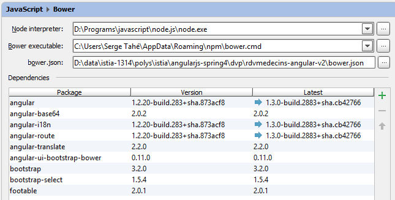 |
Le rôle de ces différents éléments a été expliqué au paragraphe 3.4, page 134.
3.8.3. La page maître [app.html]
La page maître est la suivante :
<!DOCTYPE html>
<html ng-app="rdvmedecins">
<head>
<title>RdvMedecins</title>
<!-- META -->
<meta http-equiv="Content-Type" content="text/html; charset=utf-8">
<meta name="viewport" content="width=device-width, initial-scale=1.0">
<meta name="description" content="Angular client for RdvMedecins">
<meta name="author" content="Serge Tahé">
<!-- le CSS -->
<link rel="stylesheet" href="bower_components/bootstrap/dist/css/bootstrap.min.css"/>
<link href="bower_components/bootstrap/dist/css/bootstrap-theme.min.css" rel="stylesheet"/>
<link href="bower_components/bootstrap-select/bootstrap-select.min.css" rel="stylesheet"/>
<link href="assets/css/rdvmedecins.css" rel="stylesheet"/>
<link href="assets/css/footable.core.min.css" rel="stylesheet"/>
</head>
<!-- contrôleur [appCtrl], modèle [app] -->
<body ng-controller="appCtrl">
<div class="container">
...
</div>
<!-- Bootstrap core JavaScript ================================================== -->
<script type="text/javascript" src="bower_components/jquery/dist/jquery.min.js"></script>
<script type="text/javascript" src="bower_components/bootstrap/dist/js/bootstrap.min.js"></script>
<script type="text/javascript" src="bower_components/bootstrap-select/bootstrap-select.min.js"></script>
<script src="bower_components/footable/js/footable.js" type="text/javascript"></script>
<!-- angular js -->
<script type="text/javascript" src="bower_components/angular/angular.min.js"></script>
<script type="text/javascript" src="bower_components/angular-ui-bootstrap-bower/ui-bootstrap-tpls.min.js"></script>
<script type="text/javascript" src="bower_components/angular-route/angular-route.min.js"></script>
<script type="text/javascript" src="bower_components/angular-translate/angular-translate.min.js"></script>
<script type="text/javascript" src="bower_components/angular-base64/angular-base64.min.js"></script>
<!-- modules -->
<script type="text/javascript" src="modules/main.js"></script>
<!-- services -->
<script type="text/javascript" src="services/config.js"></script>
<script type="text/javascript" src="services/dao.js"></script>
<script type="text/javascript" src="services/utils.js"></script>
<!-- directives -->
<script type="text/javascript" src="directives/waiting.js"></script>
<script type="text/javascript" src="directives/errors.js"></script>
<script type="text/javascript" src="directives/footable.js"></script>
<script type="text/javascript" src="directives/debug.js"></script>
<script type="text/javascript" src="directives/list.js"></script>
<!-- controllers -->
<script type="text/javascript" src="controllers/appController.js"></script>
<script type="text/javascript" src="controllers/loginController.js"></script>
<script type="text/javascript" src="controllers/homeController.js"></script>
<script type="text/javascript" src="controllers/agendaController.js"></script>
<script type="text/javascript" src="controllers/resaController.js"></script>
</body>
</html>
- ligne 18 : on notera que [appCtrl] est le contrôleur de la page maître ;
- lignes 19-21 : le contenu de la page maître ;
Ce contenu est le suivant :
<div class="container">
<!-- les barres de navigation -->
<ng-include src="'views/navbar-start.html'" ng-show="app.navbarstart.show"></ng-include>
<ng-include src="'views/navbar-run.html'" ng-show="app.navbarrun.show"></ng-include>
<!-- le jumbotron -->
<ng-include src="'views/jumbotron.html'"></ng-include>
<!-- le titre de la page -->
<div class="alert alert-info" ng-show="app.titre.show" translate="{{app.titre.text}}"
translate-values="{{app.titre.model}}"></div>
<!-- les erreurs de la page -->
<errors model="app.errors" ng-show="app.errors.show"></errors>
<!-- le message d'attente -->
<waiting model="app.waiting" ng-show="app.waiting.show"></waiting>
<!-- la vue courante -->
<ng-view></ng-view>
<!-- debug -->
<debug model="app" ng-show="app.debug.on"></debug>
</div>
Quelque soit la vue affichée, elle aura toujours les éléments suivants :
- lignes 3-4 : une barre de commande. Les deux barres des lignes 3 et 4 sont exclusives l'une de l'autre ;


- ligne 6 : un logo / texte de l'application :

- ligne 8 : un titre

- ligne 11 : un message d'erreurs :

- ligne 13 : un message d'attente :

- ligne 17 : une information de débogage :
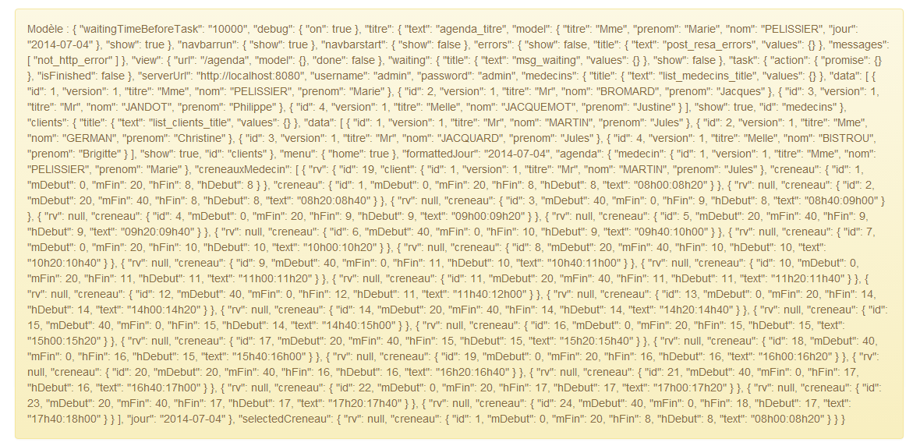
Tous les éléments précédents sont contrôlés par une directive [ng-show / ng-hide] qui fait que s'ils sont bien présents, ils ne sont pas forcément visibles.
3.8.4. Les vues de l'application
Dans le code de la page maître, on a :
<div class="container">
...
<!-- la vue courante -->
<ng-view></ng-view>
...
</div>
La ligne 4 reçoit les différentes vues de l'application. Celles-ci sont définies dans le module [main.js] :

Le rôle de la configuration des différentes routes a été expliqué au paragraphe 3.7.15.4, page 242.
La vue [login.html] est vide, ç-à-d qu'elle ne rajoute aucun élément à ceux déjà présents dans la page maître.
La vue [home.html] rajoute l'élément suivant à la page maître :

La vue [agenda.html] rajoute l'élément suivant à la page maître :

La vue [resa.html] rajoute l'élément suivant à la page maître :

3.8.5. Fonctionnalités de l'application
Les vues du client Angular ont déjà été présentées au paragraphe 1.3.3, page 7. Pour faciliter la lecture de ce nouveau chapitre, nous les redonnons ici. La première vue est la suivante :
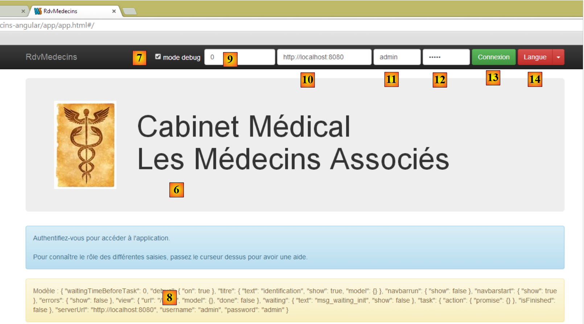 |
- en [6], la page d'entrée de l'application. Il s'agit d'une application de prise de rendez-vous pour des médecins ;
- en [7], une case à cocher qui permet d'être ou non en mode [debug]. Ce dernier se caractérise par la présence du cadre [8] qui affiche le modèle de la vue courante ;
- en [9], une durée d'attente artificielle en millisecondes. Elle vaut 0 par défaut (pas d'attente). Si N est la valeur de ce temps d'attente, toute action de l'utilisateur sera exécutée après un temps d'attente de N millisecondes. Cela permet de voir la gestion de l'attente mise en place par l'application ;
- en [10], l'URL du serveur Spring 4. Si on suit ce qui a précédé, c'est [http://localhost:8080];
- en [11] et [12], l'identifiant et le mot de passe de celui qui veut utiliser l'application. Il y a deux utilisateurs : admin/admin (login/password) avec un rôle (ADMIN) et user/user avec un rôle (USER). Seul le rôle ADMIN a le droit d'utiliser l'application. Le rôle USER n'est là que pour montrer ce que répond le serveur dans ce cas d'utilisation ;
- en [13], le bouton qui permet de se connecter au serveur ;
- en [14], la langue de l'application. Il y en a deux : le français par défaut et l'anglais.
 |
- en [1], on se connecte ;
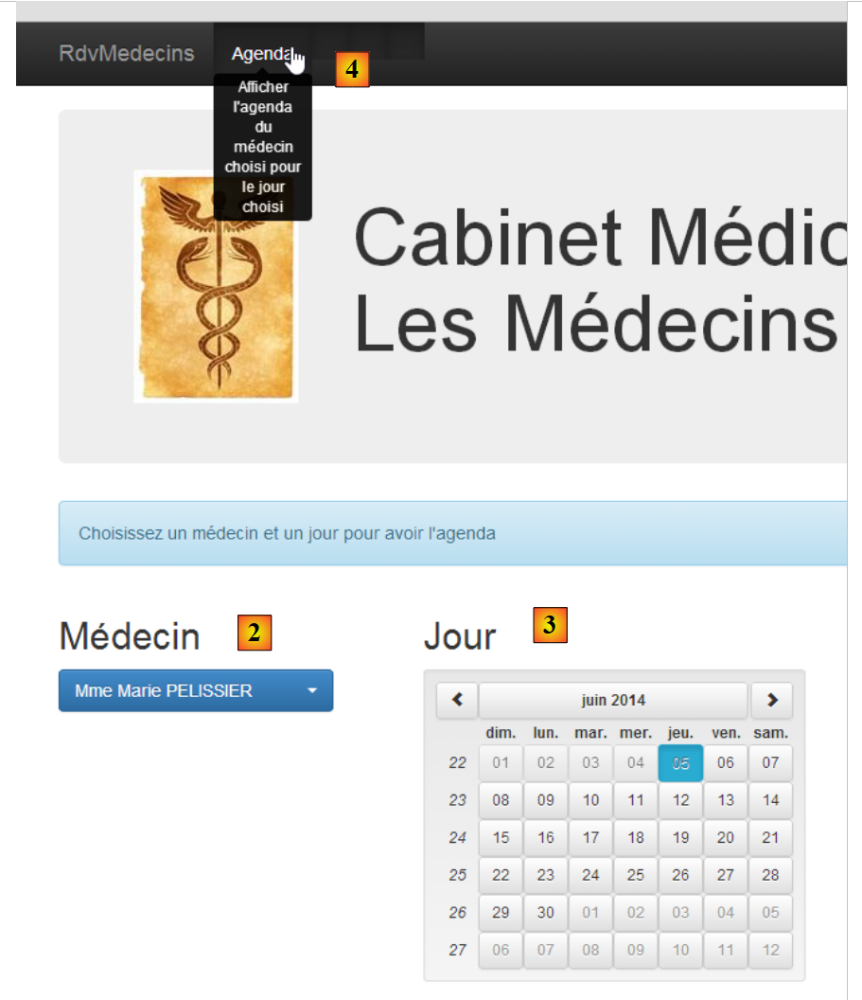 |
- une fois connecté, on peut choisir le médecin avec lequel on veut un rendez-vous [2] et le jour de celui-ci [3] ;
- on demande en [4] à voir l'agenda du médecin choisi pour le jour choisi ;
 |
- une fois obtenu l'agenda du médecin, on peut réserver un créneau [5] ;
 |
- en [6], on choisit le patient pour le rendez-vous et on valide ce choix en [7] ;
 |
Une fois le rendez-vous validé, on est ramené automatiquement à l'agenda où le nouveau rendez-vous est désormais inscrit. Ce rendez-vous pourra être ultérieurement supprimé [7].
Les principales fonctionnalités ont été décrites. Elles sont simples. Celles qui n'ont pas été décrites sont des fonctions de navigation pour revenir à une vue précédente. Terminons par la gestion de la langue :
 |
- en [1], on passe du français à l'anglais ;
 |
- en [2], la vue est passée en anglais, y-compris le calendrier ;
3.8.6. Le module [main.js]
Le module [main.js] définit le module Angular qui va contrôler l'application :
 |
- ligne 4 : le module s'appelle [rdvmedecins] ;
- ligne 5 : le module [ngRoute] est utilisé pour le routage des URL ;
- ligne 6 : le module [translate] est utilisé pour l'internationalisation des textes ;
- ligne 7 : le module [base64] est utilisé pour coder en Base64 la chaîne 'login:password' ;
- ligne 8 : le module [ngLocale] est utilisé pour internationaliser le calendrier ;
- ligne 9 : le module [ui.bootstrap] est utilisé pour le calendrier ;
- ligne 12 : la configuration des routes ;
- ligne 40 : l'internationalisation des messages ;
3.8.7. Le contrôleur de la page maître
Rappelons le code HTML de la page maître [app.html] :
<body ng-controller="appCtrl">
<div class="container">
...
Ligne 1, tout le corps (body) de la page maître est contrôlé par le contrôleur [appCtrl]. De par sa position, cela en fait un contrôleur général et principal de l'application. Comme il a été expliqué au paragraphe 3.7.15 le modèle construit par ce contrôleur est hérité par toutes les vues qui viendront s'insérer dans la page maître.
Son code est le suivant :
angular.module("rdvmedecins")
.controller("appCtrl", ['$scope', 'config', 'utils', '$location', '$locale',
function ($scope, config, utils, $location, $locale) {
// debug
utils.debug("[app] init");
// ----------------------------------------initialisation page
// les modèles des # pages
$scope.app = {waitingTimeBeforeTask: config.waitingTimeBeforeTask};
$scope.login = {};
$scope.home = {};
$scope.agenda = {};
$scope.resa = {};
// modèle de la page courante
var app = $scope.app;
...
// ---------------------------------- méthodes
// annulation tâche courante
app.cancel = function () {
...
};
// déconnexion
app.deconnecter = function () {
...
};
// ce code doit rester là car il référence la fonction [cancel] qui précède
app.waiting = {title: {text: config.msgWaitingInit, values: {}}, cancel: app.cancel, show: true};
}])
;
Les lignes 10-14 définissent les cinq modèles qui sont utilisés dans l'application :
app.html | appCtrl | |
login.html | loginCtrl | |
home.html | homeCtrl | |
resa.html | resaCtrl | |
agenda.html | agendaCtrl |
Ce qu'il est important de comprendre est que l'objet [$scope] étant le modèle du contrôleur de la page maître, est hérité par toutes les vues et contrôleurs. Ainsi le contrôleur [loginCtrl] a accès aux éléments [$scope.app, $scope.login, $scope.home, $scope.resa, $scope.agenda]. Dit autrement un contrôleur a accès aux modèles des autres contrôleurs. L'application étudiée évite soigneusement d'utiliser cette possibilité. Ainsi, par exemple, le contrôleur [loginCtrl] travaille avec deux modèles seulement :
- le sien [$scope.login] ;
- et celui du contrôleur parent [$scope.app] ;
Il en est de même pour tous les autres contrôleurs. Le modèle [$scope.app] sera utilisé comme mémoire partagée entre les différents contrôleurs. Lorsqu'un contrôleur C1 devra transmettre de l'information au contrôleur C2, on procèdera ainsi :
Dans [C1] :
Dans [C2] :
Dans les deux cas, $scope est hérité du contrôleur [appCtrl] et est donc identique (c'est un pointeur) dans [C1] et [C2]. L'objet [$scope.app] qui sert de mémoire partagée entre les contrôleurs sera souvent appelé session dans les commentaires, par mimétisme avec la session utilisée dans les applications web classiques qui désigne la mémoire partagée entre requêtes HTTP successives.
Revenons au code du contrôleur [appCtrl] :
// les modèles des # pages
$scope.app = {waitingTimeBeforeTask: config.waitingTimeBeforeTask};
$scope.login = {};
$scope.home = {};
$scope.agenda = {};
$scope.resa = {};
// modèle de la page courante
var app = $scope.app;
// [app.debug] et [utils.verbose] doivent toujours être synchronisés
app.debug = utils.verbose;
app.debug.on = config.debug;
// pas de titre de page pour l'instant
app.titre = {show: false};
// pas de barres de navigation
app.navbarrun = {show: false};
app.navbarstart = {show: false};
// pas d'erreurs
app.errors = {show: false};
// locale par défaut
angular.copy(config.locales['fr'], $locale);
// la vue courante
app.view = {url: undefined, model: {}, done: false};
// la tâche courante
app.task = app.view.model.task = {action: utils.waitForSomeTime(app.waitingTimeBeforeTask), isFinished: false};
- ligne 8 : [$scope.app] sera le modèle de la page maître. Ce sera aussi la mémoire partagée entre les différents contrôleurs. Plutôt que d'écrire partout [$scope.app.champ=value], le pointeur [$scope.app] est affecté à la variable [app] et on écrira alors [app.champ=value]. Il faut simplement se souvenir que [app] est le modèle exposé à la page maître ;
- ligne 11 : [app.debug.on] est un booléen qui contrôle le mode debug de l'application. Par défaut il est à true. Sa valeur est liée à la case à cocher [debug] des barres de navigation ;
- ligne 15 : [app.navbarrun.show] contrôle l'affichage de la barre de navigation suivante :

- ligne 16 : [app.navbarstart.show] contrôle l'affichage de la barre de navigation suivante :

- ligne 18 : [app.errors] est le modèle du bandeau des erreurs ;

- ligne 22 : [app.view] contiendra des informations sur la vue courante, celle qui est actuellement affichée par la balise [ng-view] de la page maître. Nous y noterons les information suivantes :
- [url] : l'URL de la vue courante, par exemple [/agenda] ;
- [model] : le modèle de la vue courante, par exemple [$scope.agenda] ;
- [done] : à vrai indique que la vue courante a terminé son travail et qu'on est en train de passer à une autre vue ;
Ces informations servent au contrôle de la navigation.
- ligne 24 : lance une tâche asynchrone, une attente simulée. La tâche asynchrone est référencée par deux pointeurs [app.view.model.task.action] et [app.task] ;
Deux méthodes ont été factorisées dans le contrôleur [appCtrl] :
// annulation tâche courante
app.cancel = function () {
...
};
// déconnexion
app.deconnecter = function () {
...
};
- ligne 2 : la fonction [app.cancel] sert à annuler la tâche courante pour laquelle un message d'attente est actuellement affiché. Toutes les vues offrent ce message et donc l'annulation de la tâche se fera ici ;
- ligne 7 : la fonction [app.deconnecter] ramène l'utilisateur à la page d'authentification. Toutes les vues, sauf la vue [/login] offrent cette possibilité ;
La fonction [app.deconnecter] est la suivante :
// déconnexion
app.deconnecter = function () {
// on revient à la page de login
$location.path(config.urlLogin);
};
- ligne 4 : on revient à la page de login d'URL [/login] ;
3.8.8. Gestion de la tâche asynchrone
Dans notre application, à un moment donné, une seule tâche asynchrone sera en cours d'exécution. Il est possible d'en avoir plusieurs. Par exemple, au démarrage de l'application, celle-ci demande au service web la liste des médecins et puis celle des clients avec deux requêtes HTTP successives. On pourrait faire la même chose avec deux requêtes HTTP simultanées. Angular offre les outils pour cette gestion. Ici, nous n'avons pas fait ce choix.
La tâche en cours d'exécution est annulée avec le code suivant dans le contrôleur [appCtrl] :
// annulation tâche courante
app.cancel = function () {
utils.debug("[app] cancel task");
// on annule la tâche asynchrone de la vue courante
var task = app.view.model.task;
task.isFinished = true;
task.action.reject();
...
};
- ligne 5 : la tâche est cherchée dans [app.view.model.task]. Aussi, tous les contrôleurs feront en sorte que leurs tâches asynchrones soient référencées par cet objet ;
- ligne 6 : pour indiquer que la tâche est finie ;
- ligne 7 : pour terminer la tâche avec un échec. Cette notation est différente de celle utilisée dans les exemples Angular étudiés :
- dans les exemples, l'objet [task] était un objet [$q.defer()] qu'on pouvait terminer ;
- dans la version finale, l'objet [task] est un objet avec les champs [action, isFinished] où [action] est l'objet [$q.defer()] qu'on peut terminer et [isFinished] un booléen qui indique que l'action est terminée ;
Examinons le cycle de vie de l'objet [task] sur un exemple. Au démarrage, après le contrôleur [appCtrl], c'est le contrôleur [loginCtrl] qui prend la main pour afficher la vue [views/login.html]. Son code d'initilisation est le suivant :
// on récupère le modèle parent
var login = $scope.login;
var app = $scope.app;
// vue courante
app.view = {url: config.urlLogin, model: login, done: false};
Ligne 5, on a [model=login]. Ceci signifie que lorsqu'on modifie l'objet [login], on modifie l'objet [app.view.model] donc [$scope.app.view.model]. Lorsque dans le contrôleur [loginCtrl], on veut faire une attente simulée, on écrit :
// attente simulée
var task = login.task = {action: utils.waitForSomeTime(app.waitingTimeBeforeTask), isFinished: false};
En ajoutant le champ [task] à l'objet [login], c'est donc à l'objet [$scope.app.view.model] qu'il a été ajouté. Si l'utilisateur annule l'attente, le code dans [appCtrl.cancel] :
// modèle de la page courante
var app = $scope.app;
...
var task = app.view.model.task;
task.isFinished = true;
task.action.reject();
va bien terminer l'attente simulée (lignes 4-6).
3.8.9. Contrôle de la navigation
Les règles de navigation utilisées dans l'application sont les suivantes :
quelconque | oui | |
/login | oui si le contrôleur [loginCtrl] a indiqué qu'il avait fini son travail | |
/home | oui | |
/agenda | oui | |
/home | oui si le contrôleur [homeCtrl] a indiqué qu'il avait fini son travail | |
/resa | oui | |
/agenda | oui | |
/agenda | oui si le contrôleur [homeCtrl] a indiqué qu'il avait fini son travail | |
/resa | oui |
Cela est implémenté avec le code suivant :
Pour [agendaCtrl] :
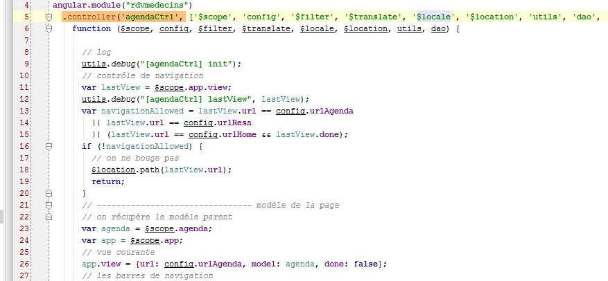
- lignes 11-20 : implémentation de la règle de navigation ;
- ligne 26 : nouvelle vue courante ;
Pour [resaCtrl] :

- lignes 12-20 : implémentation de la règle de navigation :
- ligne 27 : nouvelle vue courante ;
Pour [loginCtrl] :

- il n'y a ici aucun contrôle de navigation puisque la règle dit qu'on peut venir à l'URL [/login] de n'importe où. Donc si l'utilisateur tape cette URL dans son navigateur, cela marchera quelque soit la vue courante du moment ;
- ligne 16 : la nouvelle vue courante ;
Le code pour le contrôleur [homeCtrl] a été donné paragraphe 3.8.7.
Enfin pour une règle telle que :
/home | oui si le contrôleur [homeCtrl] a indiqué qu'il avait fini son travail |
voici un exemple de code qui fait passer de l'URL [/home] à l'URL [/agenda] :
 |
Ci-dessus, on est dans la méthode [afficherAgenda] du contrôleur [homeCtrl]. L'utilisateur a demandé l'agenda d'un médecin.
- ligne 107 : la promesse de la tâche HTTP ;
- ligne 109 : la variable [app] a été initialisée avec [$scope.app]. Ce dernier objet est, nous l'avons vu, utilisé comme modèle de la vue [app.html]. Ce modèle [$scope.app] est également utilisé pour stocker l'information qui doit être partagée entre les vues ;
- ligne 111 : on analyse le code d'erreur renvoyé par la tâche ;
- ligne 113 : le résultat [result.data] est mis dans le modèle [app] ;
- ligne 116 : le contrôleur [homeCtrl] va passer la main au contrôleur [agendaCtrl]. Il lui indique qu'il a terminé son travail avec le code de la ligne 115. Ce code va être exploité par le contrôleur [agendaCtrl] de la façon suivante :

- ligne 11 : l'objet [$scope.app.view] est récupéré ;
- ligne 15 : exploitation du champ [$scope.app.view.done] initialisé par [homeCtrl] ;
3.8.10. Les services
 |
Les services [config, utils, dao] sont ceux déjà décrits lors de la présentation d'Angular :
- le service [config] a été introduit au paragraphe 3.7.4 ;
- le service [utils] a été introduit au paragraphe 3.7.5 ;
- le service [dao] a été introduit au paragraphe 3.7.6 ;
Pour mémoire, on rappelle la structure de ces services :
Service [config]
 |
- en [1] : on voit que le code fait environ 250 lignes. L'essentiel de ce code est l'externalisation des clés des messages internatiomalisés [2]. On évite de mettre ces clés en dur dans le code ;
Service [utils]
 |
- ligne 8 : nous n'avions pas encore rencontré la variable [verbose]. Elle contrôle la fonction [debug] de la façon suivante :
 |
- lignes 22-25 : la fonction [utils.debug] ne fait rien si [verbose.on] est évalué à false. Cette variable est liée à une variable du contrôleur [appCtrl] :
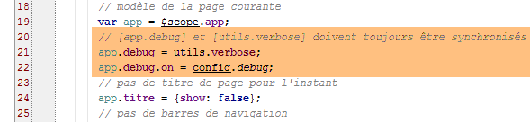 |
- ligne 21 : [app.debug] prend la valeur du pointeur [utils.verbose]. Donc toute modification faite sur [app.debug] sera faite également sur [utils.verbose] ;
- ligne 22 : la valeur initiale de [app.debug.on] est prise dans le fichier de configuration. Par défaut, c'est la valeur true. Cette valeur peut changer dans le temps. L'utilisateur a en effet la possibilité de la changer dans les barres de navigation :
 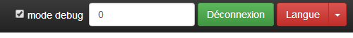 |
- ligne 45 : une case à cocher (type=checkbox) permet de changer la valeur de [app.debug.on] (attribut ng-model) ;
Service [dao]
 |
3.8.11. Les directives
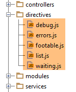 |
Les directives [errors, footable, list, waiting] sont celles déjà décrites lors de la présentation d'Angular :
- la directive [footable] a été introduite paragraphe 3.7.8.6;
- la directive [list] a été introduite au paragraphe 3.7.12 ;
- les directives [errors] et [waiting] ont été introduites au paragraphe 3.7.14 ;
Nous n'avions pas rencontré la directive [debug]. C'est la suivante :
 |
Le fichier [debug.html] référencé ligne 11 est le suivant :
 |
- ligne 2 : la directive [debug] affiche son modèle au format JSON dans un bandeau Bootstrap (ligne 1) ;
Cette directive n'est utilisée que dans la page maître [app.html] :
 |
- la directive [debug] est utilisée ligne 35. Elle affiche donc la forme JSON du modèle [$scope.app] lorsqu'on est en mode debug (attribut ng-show). Cela donne des choses comme celle-ci :
 |
Cela nécessite une bonne connaissance du code pour être interprété mais lorsque celle-ci est acquise, l'information ci-dessus devient utile pour le débogage. On a surligné ici les éléments du modèle [$scope.app] affiché. On rappelle que [$scope.app] est la mémoire partagée par les contrôleurs ;
- [waitingBeforeTask] : le temps d'attente simulé avant toute requête HTTP ;
- [debug] : le mode debug - est forcément true si ce bandeau est affiché ;
- [navbarrun] : booléen qui contrôle l'affichage de la barre de navigation suivante :
- [navbarstart] : booléen qui contrôle l'affichage de la barre de navigation suivante :
- [errors] : modèle de la directive [errors] ;
- [view] : encapsule des informations sur la vue actuellement affichée ;
- [waiting] : modèle de la directive [waiting] ;
- [serverUrl, username, password] : les informations de connexion au service web ;
- [medecins] : modèle pour la directive [list] appliquée aux médecins ;
- [clients] : idem pour les clients ;
- [menu] : contrôle les options de menu affichées. Celles-ci sont définies dans [navbar-run.html] :

Les options de menu sont aux lignes 16, 23, 29 et 36.
- [formattedJour] : le jour choisi dans le calendrier au format 'aaaa-mm-jj' ;
- [agenda] : l'agenda du médecin. Dans celui-ci, il y a des créneaux libres (rv==null) et réservés. Pour ces derniers, il y alors le nom du client qui a réservé ;
- [selectedCreneau] : le créneau horaire choisi pour faire une réservation ;
3.8.12. Le contrôleur [loginCtrl]
 |
Le contrôleur [loginCtrl] est associé à la vue [views/login.html] qui associée à la page maître produit la page suivante :

Le contrôleur [loginCtrl] est le suivant :

- ligne 13 : [login] sera le modèle de la vue courante ;
- ligne 14 : [app] est la mémoire partagée entre les contrôleurs ;
- ligne 16 : on renseigne [app.view] avec les informations de la vue courante ;
Ce code d'initialisation se retrouvera dans chaque contrôleur. Pour le contrôleur C1 d'une vue V1 ayant le modèle M1 on aura le code d'initialisation suivant :
- ligne 18 : on se rappelle peut-être que [appCtrl] a lancé une attente simulée référencée par l'objet [app.task.action]. On utilise la [promise] de cette tâche pour attendre sa fin ;
- ligne 39 : la méthode [login.setLang] gère le changement de langues ;
- ligne 47 : la méthode [login.authenticate] gère l'authentification de l'utilisateur ;
Regardons les grands mouvements de la méthode d'authentification :

- lignes 50-51 : [app.waiting] est le modèle du bandeau d'attente ;
- ligne 53 : [app.errors] est le modèle du bandeau d'erreurs ;
- ligne 55 : une attente simulée est lancée. L'objet [action, isFinished] est référencé par [login.task] et donc puisque [app.view.model=login], par [app.view.model.task]. On rappelle que c'est la condition pour que la tâche puisse être annulée ;
- ligne 57 : après la fin de l'attente simulée, on charge les médecins ;
- ligne 62 : lorsque la demande des médecins a été obtenue, on analyse cette demande. Si les médecins ont été obtenus, on demande alors les clients ;
- ligne 83 : on analyse la réponse obtenue et on affiche la vue finale. Cela se fait avec le code suivant :
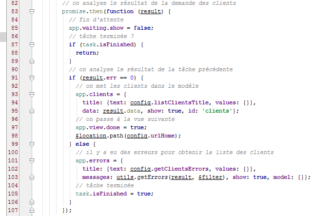
- ligne 87 : le booléen [task.isFinished] est positionné à true dans les cas suivants :
- l'utilisateur a annulé l'attente ;
- la demande des médecins s'est terminée avec une erreur ;
- lignes 91-98 : le cas où on a eu les clients ;
- ligne 93 : [app.clients] est le modèle de la directive [list] qui va afficher les clients dans une liste déroulante ;
- lignes 97-98 : on se prépare à changer de vue (ligne 98) mais auparavant on indique que le contrôleur a terminé son travail (ligne 97). On rappelle que [$scope.app.view.done] est utilisé pour le contrôle de navigation ;
Le point important à noter ici est que les médecins et les clients ont été mis en cache sur le navigateur. Ils ne seront désormais plus demandés au service web.
3.8.13. Le contrôleur [homeCtrl]
 |
Le contrôleur [homeCtrl] est associé à la vue [views/home.html] qui associée à la page maître produit la page suivante :

La structure du contrôleur [homeCtrl] est la suivante :

- lignes 12-20 : c'est le contrôle de navigation. Tous les contrôleurs l'ont sauf [loginCtrl] car la page [/login.html] est accessible sans conditions ;

- lignes 25-28 : on retrouve là des lignes analogues à celles rencontrées dans le contrôleur [loginCtrl]. [home] est ainsi le modèle de la vue associée au contrôleur ;
- ligne 33 : un attribut que nous n'avions pas encore rencontré. C'est le modèle du bandeau de titre de la vue :

- ligne 36 : [home.datepicker] est le modèle du calendrier ;
- ligne 38 : [app.menu] est le modèle du menu de la barre de navigation. Ici l'option [Agenda] sera présente. C'est elle qui permet de demander l'agenda d'un médecin ;
Enfin, le contrôleur a deux méthodes :

L'affichage de l'agenda (ligne 51) a été traité au paragraphe 3.7.8.
3.8.14. Le contrôleur [agendaCtrl]
 |
Le contrôleur [agendaCtrl] est associé à la vue [views/agenda.html] qui associée à la page maître produit la page suivante :

La structure du contrôleur [agendaCtrl] est la suivante :

- les lignes 10-20 assurent le contrôle de navigation ;

- lignes 23-26 : [agenda] sera le modèle de la vue associée au contrôleur [agendaCtrl] ;
- lignes 36-44 : [app.titre] est le modèle du bandeau de titre suivant :

- ligne 46 : le menu aura l'option [Home / Accueil] :

Les méthodes du contrôleur sont les suivantes :

- ligne 95 : la méthode [agenda.supprimer] a été traitée au paragraphe 3.7.9 ;
La méthode [agenda.home] est une méthode de pure navigation :
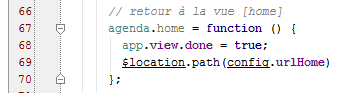
La méthode [agenda.reserver] est la suivante :
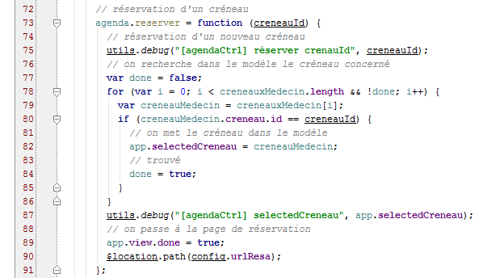
- ligne 73 : le paramètre de la fonction [reserver] est le n° du créneau (id) ;
- lignes 77-86 : visent à retrouver le créneau horaire ayant cet identifiant ;
- ligne 82 : le créneau trouvé est mis dans la mémoire partagée [app]. Le contrôleur [resaCtrl] qui va prendre la main (ligne 90) va exploiter cette information pour afficher son bandeau de titre ;
- lignes 89-90 : navigation vers [/resa.html] ;
3.8.15. Le contrôleur [resaCtrl]
 |
Le contrôleur [resaCtrl] est associé à la vue [views/resa.html] qui associée à la page maître produit la page suivante :

La structure du contrôleur [resaCtrl] est la suivante :

- lignes 12-20 : le contrôle de navigation ;

- lignes 24-27 : [resa] sera le modèle de la vue courante ;
- lignes 38-45 : [app.titre] est le modèle du bandeau de titre suivant :

- ligne 47 : deux options de menu sont affichées :

Les méthodes du contrôleur sont les suivantes :

La méthode [resa.valider] a été étudiée au paragraphe 3.7.9.
3.8.16. La gestion des langues
Tous les contrôleurs offrent la méthode [setLang] suivante :

Elle aurait pu être factorisée dans le contrôleur [appCtrl].